Single-omics analysis: Method development lung cancer patient cohort
Qian-Wu Liao
Last updated: 2023-06-06
Checks: 5 2
Knit directory:
SMART-CARE_LungCancer_MethodDev/
This reproducible R Markdown analysis was created with workflowr (version 1.7.0). The Checks tab describes the reproducibility checks that were applied when the results were created. The Past versions tab lists the development history.
The R Markdown file has unstaged changes. To know which version of
the R Markdown file created these results, you’ll want to first commit
it to the Git repo. If you’re still working on the analysis, you can
ignore this warning. When you’re finished, you can run
wflow_publish to commit the R Markdown file and build the
HTML.
Great job! The global environment was empty. Objects defined in the global environment can affect the analysis in your R Markdown file in unknown ways. For reproduciblity it’s best to always run the code in an empty environment.
The command set.seed(20230425) was run prior to running
the code in the R Markdown file. Setting a seed ensures that any results
that rely on randomness, e.g. subsampling or permutations, are
reproducible.
Great job! Recording the operating system, R version, and package versions is critical for reproducibility.
Nice! There were no cached chunks for this analysis, so you can be confident that you successfully produced the results during this run.
Using absolute paths to the files within your workflowr project makes it difficult for you and others to run your code on a different machine. Change the absolute path(s) below to the suggested relative path(s) to make your code more reproducible.
| absolute | relative |
|---|---|
| /Users/qianwu/Desktop/SMART-CARE_LungCancer_MethodDev | . |
Great! You are using Git for version control. Tracking code development and connecting the code version to the results is critical for reproducibility.
The results in this page were generated with repository version 63c17dd. See the Past versions tab to see a history of the changes made to the R Markdown and HTML files.
Note that you need to be careful to ensure that all relevant files for
the analysis have been committed to Git prior to generating the results
(you can use wflow_publish or
wflow_git_commit). workflowr only checks the R Markdown
file, but you know if there are other scripts or data files that it
depends on. Below is the status of the Git repository when the results
were generated:
Ignored files:
Ignored: .DS_Store
Ignored: .RData
Ignored: .Rhistory
Ignored: analysis/.DS_Store
Ignored: analysis/figure/
Ignored: code/.DS_Store
Ignored: data/.DS_Store
Ignored: output/.DS_Store
Untracked files:
Untracked: code/about.Rmd
Untracked: code/feature_selection.Rmd
Untracked: code/license.Rmd
Untracked: code/mofa_downstream_analysis.Rmd
Untracked: code/mofa_factors_investigation.Rmd
Untracked: code/workflowr_commands.R
Untracked: data/AG_Hell/
Untracked: data/AG_Hopf/
Untracked: data/AG_Krijgsveld/
Untracked: data/mofa/
Untracked: data/patient_metadata.tsv
Untracked: data/stats/
Untracked: output/AG_Hell/
Untracked: output/AG_Hopf/
Untracked: output/AG_Krijgsveld/
Untracked: output/heatmap_tar_untar_PM.png
Untracked: output/heatmap_tar_untar_TM.png
Untracked: output/mofa_barplot_performance.png
Untracked: output/mofa_boxplot_UntarBPM_UntarBPL_DDABPP.png
Untracked: output/mofa_boxplot_UntarBPM_UntarBPL_DDABPP_TarTTP.png
Untracked: output/mofa_setup_UntarBPM_UntarBPL_DDABPP.png
Untracked: output/mofa_setup_UntarBPM_UntarBPL_DDABPP_TarTT.png
Untracked: output/network_tar_untar_PM.png
Untracked: output/network_tar_untar_TM.png
Untracked: output/percentage_sigFeats.png
Unstaged changes:
Deleted: analysis/about.Rmd
Modified: analysis/comparisons_targeted_untargeted.Rmd
Deleted: analysis/license.Rmd
Modified: analysis/mofa_varied_omics_combinations.Rmd
Modified: analysis/preliminary_analysis_DIA.Rmd
Modified: analysis/preliminary_analysis_targeted_DDA.Rmd
Modified: analysis/preliminary_analysis_untargeted.Rmd
Modified: analysis/preprocessing_DIA.Rmd
Modified: code/misc.R
Note that any generated files, e.g. HTML, png, CSS, etc., are not included in this status report because it is ok for generated content to have uncommitted changes.
These are the previous versions of the repository in which changes were
made to the R Markdown
(analysis/preliminary_analysis_targeted_DDA.Rmd) and HTML
(docs/preliminary_analysis_targeted_DDA.html) files. If
you’ve configured a remote Git repository (see
?wflow_git_remote), click on the hyperlinks in the table
below to view the files as they were in that past version.
| File | Version | Author | Date | Message |
|---|---|---|---|---|
| Rmd | 63c17dd | LiaoQianWu | 2023-05-30 | Add association tests between PCs and some other metadata variables, such as patient genders, diagnosis ages, etc. |
| Rmd | 55ec726 | LiaoQianWu | 2023-05-19 | Add parameter fac4uni in SOA function and add Gender PC association test |
| html | 60e2be1 | LiaoQianWu | 2023-04-26 | Build site. |
| html | 0bbd8eb | LiaoQianWu | 2023-04-25 | Build site. |
| Rmd | e54886f | LiaoQianWu | 2023-04-25 | Finalize scripts about data preprocessing, preliminary analysis, comparisons between targeted and untargeted |
Description: Conduct univariate (association test)
and multivariate (PCA) analyses on individual datasets, Plasma and
Tissue Targeted Metabolomics from AG Hell and DDA Proteomics from AG
Krijgsveld, to take an initial look at power of each dataset in terms of
predicting patient cancer recurrences and also potentially to provide
evidence for latter multi-omics analyses. Association test between each
feature (metabolite and protein level) and cancer recurrence was
performed to capture significant features that can separate recurrence
and non-recurrence patients. PCA was performed to see if there is any
significant PC that can separate recurrence and non-recurrence
patients.
Update: Perform association tests between PCs and some other metadata variables, such as patient genders, diagnosis ages, etc.
Metadata variables
Patient:
Gender -> Male:Female = 13:7
Age -> Diagnosis ages ranging from 56 to 84
Smoking -> Smoker:Ex-smoker:Non-Smoker = 3:14:3
Recurrence -> Cancer recurrences, Yes:No = 1:1
Stage -> Pathological stages, IB:IIA:IIB = 16:1:3
Metastasis -> Derived from stages, whether cancer cells spread to
lymph nodes, Yes:No = 3:17
Sample:
Condition -> Baseline:Follow-up:Recurrence = 2:1:1, Tumor:Normal =
1:1
TimePoint -> Time points that samples were collected at, Baseline:2
years later = 1:1
Load libraries
library('SummarizedExperiment')
library('ggrepel')
library('ggfortify')
library('umap')
library('tidyverse')
# Load user-defined functions
source('./code/misc.R')
# Set plot theme
th <- theme_bw(base_size = 15) +
theme(axis.title = element_text(face = 'bold'),
axis.text = element_text(face = 'bold'),
axis.ticks = element_line(linewidth = 0.8),
legend.text = element_text(size = 15))Plasma Metabolomics
Based on PCA result obtained by analyzing whole Plasma Metabolomics dataset that includes Baseline and Follow-up samples, we found that PCA mainly captures source of variation in time points, the unwanted variation. Besides, we attempt to identify biomarkers that can predict whether patients WILL suffer from cancer recurrence or not. Therefore, we decided to analyze Baseline and Follow-up samples separately.
# Load normalized data
metaPlasmaNorm <- readRDS('./data/AG_Hell/metaPlasmaNorm.rds')
# Manually modify metadata information (time point, smoking, metastasis)
tmp_metadata <- as.data.frame(colData(metaPlasmaNorm)) %>%
dplyr::mutate(
TimePoint = dplyr::case_when(
Condition == 'Baseline' ~ 'Baseline',
Condition != 'Baseline' ~ '2 years later'
),
# EverSmoking = case_when(
# Smoking == 'Smoker' ~ 'Yes',
# Smoking == 'Ex-smoker' ~ 'Yes',
# Smoking == 'Non-smoker' ~ 'No'
# ),
Metastasis = case_when(
Stage == 'IIB' ~ 'Yes',
Stage != 'IIB' ~ 'No'
))
colData(metaPlasmaNorm)['TimePoint'] <- tmp_metadata$TimePoint
# colData(metaPlasmaNorm)['EverSmoking'] <- tmp_metadata$EverSmoking
colData(metaPlasmaNorm)['Metastasis'] <- tmp_metadata$Metastasis
# Perform analysis
metaPlasmaRes <- doSOA(metaPlasmaNorm, meta_var = c('Recurrence', 'Gender', 'Age',
'Condition', 'TimePoint', 'Smoking',
'Stage', 'Metastasis'),
do_onlyPCA = T)
tPCASigRes <- metaPlasmaRes$tPCASigRes
pcaRes <- metaPlasmaRes$pcaRes
pcTab <- metaPlasmaRes$pcTabDisplay significant associations between learned PCs (Var1) and metadata variables (Var2). Note that each patient has two samples that have same patient annotations, so association test results may have additive effects. Besides, some patient annotations are only meaningful at Baseline time point, such as diagnosis ages, pathological stages, etc.
# Display PCs of interest
tPCASigRes Var1 Var2 pVal pValAdj Stat Test
1 PC6 Gender 7.177561e-05 0.02296819 -4.4544155 T-test
2 PC2 Condition 2.116728e-04 0.03386765 10.7270125 ANOVA
3 PC2 TimePoint 4.248791e-04 0.04532044 3.8615450 T-test
4 PC2 Stage 8.519366e-03 0.43823583 5.4354504 ANOVA
5 PC6 Smoking 9.719068e-03 0.43823583 5.2655996 ANOVA
6 PC5 Metastasis 1.022020e-02 0.43823583 -2.7029019 T-test
7 PC8 Smoking 1.029358e-02 0.43823583 5.1919365 ANOVA
8 PC7 Age 1.095590e-02 0.43823583 0.3981007 Correlation
9 PC19 Recurrence 1.420584e-02 0.50509662 -2.5702590 T-test
10 PC1 Metastasis 1.654851e-02 0.52955232 2.5075564 T-test
11 PC13 Stage 2.870495e-02 0.70717196 3.9143121 ANOVA
12 PC25 Recurrence 3.026607e-02 0.70717196 2.2507800 T-test
13 PC10 Smoking 3.060930e-02 0.70717196 3.8366218 ANOVA
14 PC16 Metastasis 3.247749e-02 0.70717196 -2.2197573 T-test
15 PC16 Smoking 3.339529e-02 0.70717196 3.7316926 ANOVA
16 PC5 Stage 3.535860e-02 0.70717196 3.6631485 ANOVA
17 PC14 Recurrence 3.878094e-02 0.72999419 2.1406438 T-test
18 PC1 Stage 4.316471e-02 0.73334230 3.4254518 ANOVA
19 PC14 Age 4.354220e-02 0.73334230 -0.3208297 Correlation
20 PC37 Condition 4.632566e-02 0.74121052 3.3418530 ANOVAPC2 explains quite some variation in data and separates patient samples by time points.
# ggfortify
# ggplot2::autoplot(pcaRes, x = 1, y =2)
ggplot(pcTab, aes(x=PC1, y=PC2, col=TimePoint, shape=Recurrence,
group=Patient)) +
geom_point(size = 4) +
labs(x = 'PC1 (24.92%)', y = 'PC2 (16.79%)', title = 'Plasma metabolomics') +
geom_line(col = 'grey50', linetype = 'dashed') +
scale_color_discrete(name = 'Time point',
labels = c('Baseline', '2 years later')) +
th
| Version | Author | Date |
|---|---|---|
| 0bbd8eb | LiaoQianWu | 2023-04-25 |
Display variance explained by each PC
# Display proportion of total variance captured by all PCs explained by each PC
varExplained <- pcaRes$sdev^2 / sum(pcaRes$sdev^2)
PC <- paste0('PC', seq(length(varExplained)))
varTab <- data.frame(PC = factor(PC, levels = PC),
Var_explained = varExplained)
ggplot(varTab, aes(x=PC, y=Var_explained*100)) +
geom_col() +
labs(x = '', y = 'Variance explained (%)',
title = 'Plasma metabolomics') +
th + theme(axis.text.x = element_text(angle = 90, hjust = 1, vjust = 0.5))
| Version | Author | Date |
|---|---|---|
| 0bbd8eb | LiaoQianWu | 2023-04-25 |
Baseline samples
Display significant associations between learned PCs (Var1) and metadata variables (Var2)
# Subset baseline samples
smpBaseIdx <- which(colData(metaPlasmaNorm)$Condition == 'Baseline')
metaBase <- metaPlasmaNorm[, smpBaseIdx]
# Display significant associations between PCs and metadata variables
metaBaseAssoRes <- doSOA(metaBase, meta_var = c('Recurrence', 'Gender', 'Age',
'Smoking', 'Stage', 'Metastasis'),
do_onlyPCA = T)
metaBaseAssoRes$tPCASigRes Var1 Var2 pVal pValAdj Stat Test
1 PC14 Age 0.005201147 0.5204426 -0.5995945 Correlation
2 PC20 Recurrence 0.012608076 0.5204426 2.7705018 T-test
3 PC11 Recurrence 0.013011064 0.5204426 -2.7557725 T-test
4 PC15 Recurrence 0.027586473 0.5923270 2.3971725 T-test
5 PC4 Gender 0.029456589 0.5923270 -2.3651339 T-test
6 PC2 Stage 0.029616350 0.5923270 4.3599342 ANOVA
7 PC6 Age 0.044927028 0.7090744 0.4529107 Correlation
8 PC12 Stage 0.047271629 0.7090744 3.6716168 ANOVADisplay significant associations between features (Var1) and cancer recurrence (Var2) and observe molecular signatures in input data through heatmap. Note that features in heatmap are ordered by their t-statistics.
# Perform analysis
metaBaseRes <- doSOA(metaBase, meta_var = 'Recurrence', num_PCfeats = 30)
datMat <- metaBaseRes$data
smpAnno <- metaBaseRes$smpMetadata
tFeatSigRes <- metaBaseRes$tFeatSigRes
tPCASigRes <- metaBaseRes$tPCASigRes
pcaRes <- metaBaseRes$pcaRes
pcTab <- metaBaseRes$pcTab
pcTopFeatTab <- metaBaseRes$pcTopFeatTab
# Display features that can significantly separate recurrence and non-recurrence
# patients
tFeatSigRes Var1 Var2 pVal pValAdj Stat Test
1 PC aa C38:3 Recurrence 0.0007195017 0.4532861 4.069455 T-test
2 Cer(d18:2/24:1) Recurrence 0.0016099229 0.4966230 3.707944 T-test
3 SM C16:1 Recurrence 0.0025475969 0.4966230 3.501611 T-test
4 HexCer(d18:2/22:0) Recurrence 0.0031531622 0.4966230 3.405458 T-test
5 Cer(d18:2/16:0) Recurrence 0.0053129786 0.5466835 3.168933 T-test
6 DG(17:0_18:1) Recurrence 0.0091322538 0.5466835 -2.920471 T-test
7 PC ae C38:6 Recurrence 0.0095640322 0.5466835 2.899097 T-test
8 HexCer(d18:2/16:0) Recurrence 0.0115648737 0.5466835 2.810838 T-test
9 PC aa C38:0 Recurrence 0.0118864029 0.5466835 2.798045 T-test
10 CE(20:3) Recurrence 0.0121305491 0.5466835 2.788552 T-test
11 TG(17:2_34:3) Recurrence 0.0124511821 0.5466835 -2.776359 T-test
12 Hex3Cer(d18:1/16:0) Recurrence 0.0138097005 0.5466835 2.727831 T-test
13 PC ae C38:5 Recurrence 0.0141126948 0.5466835 2.717633 T-test
14 Hex2Cer(d18:1/18:0) Recurrence 0.0145381849 0.5466835 2.703661 T-test
15 PC ae C38:3 Recurrence 0.0149719152 0.5466835 2.689814 T-test
16 HexCer(d18:2/24:0) Recurrence 0.0153973209 0.5466835 2.676600 T-test
17 CE(20:4) Recurrence 0.0156117369 0.5466835 2.670071 T-test
18 TG(18:3_32:0) Recurrence 0.0156195297 0.5466835 -2.669836 T-test
19 PC ae C36:5 Recurrence 0.0167712489 0.5560993 2.636181 T-test
20 Hex3Cer(d18:1/18:0) Recurrence 0.0190414295 0.5698301 2.575834 T-test
21 DG(14:0_18:2) Recurrence 0.0193433279 0.5698301 -2.568329 T-test
22 Hex3Cer(d18:1/24:1) Recurrence 0.0198988272 0.5698301 2.554804 T-test
23 SM C20:2 Recurrence 0.0213444772 0.5846531 2.521215 T-test
24 SM C18:1 Recurrence 0.0238159555 0.6251688 2.468472 T-test
25 PC ae C36:4 Recurrence 0.0272932426 0.6586369 2.402379 T-test
26 PC ae C40:6 Recurrence 0.0277861393 0.6586369 2.393657 T-test
27 PC aa C36:0 Recurrence 0.0284671535 0.6586369 2.381840 T-test
28 SM C24:1 Recurrence 0.0320399388 0.6586369 2.323863 T-test
29 HexCer(d18:1/16:0) Recurrence 0.0341122071 0.6586369 2.292935 T-test
30 PC ae C32:2 Recurrence 0.0357164319 0.6586369 2.270166 T-test
31 PC ae C34:3 Recurrence 0.0371065373 0.6586369 2.251188 T-test
32 PC aa C36:3 Recurrence 0.0411834952 0.6586369 2.199086 T-test
33 PC aa C40:3 Recurrence 0.0413834543 0.6586369 2.196655 T-test
34 Cer(d18:1/26:1) Recurrence 0.0418376049 0.6586369 2.191172 T-test
35 DG-O(14:0_18:2) Recurrence 0.0431009873 0.6586369 -2.176203 T-test
36 PC ae C38:4 Recurrence 0.0451319553 0.6586369 2.152961 T-test
37 TG(17:2_38:7) Recurrence 0.0456081685 0.6586369 -2.147650 T-test
38 HexCer(d18:1/24:1) Recurrence 0.0456539543 0.6586369 2.147142 T-test
39 TG(16:0_40:6) Recurrence 0.0474336151 0.6586369 -2.127750 T-test
40 lysoPC a C26:1 Recurrence 0.0485760767 0.6586369 2.115648 T-test
41 PC aa C42:2 Recurrence 0.0497688084 0.6586369 2.103287 T-test
42 TG(16:0_38:5) Recurrence 0.0498367532 0.6586369 -2.102591 T-test# Plot molecular signatures in input data
# Order features according to t-statistics
featOrder <- dplyr::arrange(tFeatSigRes, dplyr::desc(Stat))$Var1
# Arrange samples to make same groups in same clusters
smpOrder <- c(which(smpAnno$Recurrence == 'No'),
which(smpAnno$Recurrence == 'Yes'))
# Prepare recurrence table for annotating samples in heatmap
smpRecur <- dplyr::select(smpAnno, Sample, Recurrence) %>%
tibble::column_to_rownames('Sample')
pheatmap::pheatmap(datMat[featOrder, smpOrder],
annotation_col = smpRecur,
color = colorRampPalette(c('navy', 'white', 'red'))(100),
cluster_rows = F, cluster_cols = F, show_rownames = T,
scale = 'row', #row scaling is across columns
main = 'Baseline plasma metabolomics')
| Version | Author | Date |
|---|---|---|
| 0bbd8eb | LiaoQianWu | 2023-04-25 |
Visualize data of top 6 significant features
# Visualize data of top 6 significant features
topSigFeats <- tFeatSigRes$Var1[1:6]
topSigFeatData <- tibble::as_tibble(datMat[topSigFeats,], rownames = 'Feature') %>%
tidyr::pivot_longer(cols = -'Feature',
names_to = 'Sample', values_to = 'Abundance') %>%
dplyr::mutate(Feature = factor(Feature, levels = topSigFeats)) %>%
dplyr::left_join(smpAnno, by = 'Sample')
ggplot(topSigFeatData, aes(x=Recurrence, y=Abundance, col=Recurrence, fill=Recurrence)) +
geom_boxplot(alpha = 0.3, outlier.shape = NA) +
geom_jitter(position = position_jitter(0.2), size = 2, show.legend = F) +
scale_color_manual(values=c('#00BFC4', '#F8766D')) +
scale_fill_manual(values=c('#00BFC4', '#F8766D')) +
facet_wrap(vars(Feature), scales = 'free_y') +
ggpubr::stat_compare_means(method = 't.test', paired = F,
method.args = list(var.equal = T),
show.legend = F, size = 4) +
th + theme(strip.text = element_text(size = 13, face = 'bold'))
| Version | Author | Date |
|---|---|---|
| 0bbd8eb | LiaoQianWu | 2023-04-25 |
# ggsave('./output/AG_Hell/boxplot_topSigFeats_BPM.png', device = 'png', dpi = 400, height = 8, width = 10)Display significant associations between PCs (Var1) and cancer recurrence (Var2)
# Display PCs that can significantly separate recurrence and non-recurrence patients
tPCASigRes Var1 Var2 pVal pValAdj Stat Test
1 PC20 Recurrence 0.01260808 0.1301106 2.770502 T-test
2 PC11 Recurrence 0.01301106 0.1301106 -2.755773 T-test
3 PC15 Recurrence 0.02758647 0.1839098 2.397172 T-test# Display proportion of total variance captured by all PCs explained by each PC
varExplained <- pcaRes$sdev^2 / sum(pcaRes$sdev^2)
PC <- paste0('PC', seq(length(varExplained)))
varTab <- data.frame(PC = factor(PC, levels = PC),
Var_explained = varExplained)
ggplot(varTab, aes(x=PC, y=Var_explained*100)) +
geom_col() +
labs(x = '', y = 'Variance explained (%)',
title = 'Baseline plasma metabolomics') +
th + theme(axis.text.x = element_text(angle = 90, hjust = 1, vjust = 0.5))
| Version | Author | Date |
|---|---|---|
| 0bbd8eb | LiaoQianWu | 2023-04-25 |
PC11 potentially separates recurrence and non-recurrence patients.
# ggfortify
# ggplot2::autoplot(pcaRes, x = 11, y = 15)
# PC11
# Visualize PCs
ggplot(pcTab, aes(x=Recurrence, y=PC11, col=Recurrence, fill=Recurrence)) +
geom_boxplot(alpha = 0.3, outlier.shape = NA) +
geom_jitter(position = position_jitter(0.2), size = 2, show.legend = F) +
# geom_text_repel(aes(label=Sample), size = 4, show.legend = F) +
labs(y = 'PC11 (2.74%)', title = 'Baseline plasma metabolomics') +
scale_color_manual(values=c('#00BFC4', '#F8766D')) +
scale_fill_manual(values=c('#00BFC4', '#F8766D')) +
ggpubr::stat_compare_means(method = 't.test', paired = F,
method.args = list(var.equal = T),
show.legend = F, size = 7) +
th
| Version | Author | Date |
|---|---|---|
| 0bbd8eb | LiaoQianWu | 2023-04-25 |
# ggsave('./output/AG_Hell/boxplot_pc11_BPM.png', device = 'png', dpi = 400, height = 8, width = 10)Plot molecular signatures captured by PC11 in input data. We took a look at top 20 features with highest loadings and observed metabolite levels of these top features through heatmap. Note that features in heatmap are ordered by their loadings. There is no single feature that can decently hint if patients will suffer cancer recurrence or not, which means each of these top features contributes a bit to explaining variation between recurrence and non-recurrence patients.
# Plot molecular signatures in input data
# Extract top features with highest loadings
topFeats <- pcTopFeatTab$PC11$Feature[1:20]
# Order features by loadings
topFeatsIdx <- sapply(topFeats, function(feat) {which(rownames(datMat) == feat)})
a <- pheatmap::pheatmap(datMat[topFeatsIdx, smpOrder],
annotation_col = smpRecur,
color = colorRampPalette(c('navy', 'white', 'red'))(100),
cluster_rows = F, cluster_cols = F,
scale = 'row', main = 'Baseline plasma metabolomics - PC11')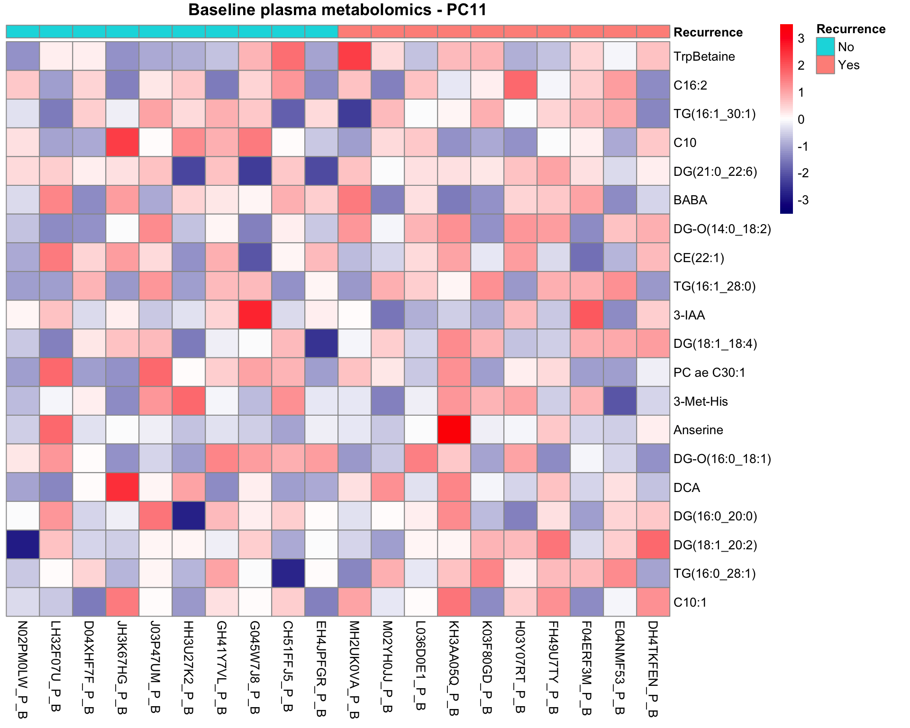
# ggsave(paste0(result_path, 'AG_Hell/metaPlasma_baseline_heatmap_pc11.png'), a, device = 'png', dpi = 400)Display top features that build the PC11
# Display top features with highest loadings of PC of interest
pcTopFeatTab$PC11 Feature Loading
1 TrpBetaine 0.31666528
2 C16:2 0.23875780
3 TG(16:1_30:1) 0.22368296
4 C10 0.22340116
5 DG(21:0_22:6) 0.21088739
6 BABA 0.19311040
7 DG-O(14:0_18:2) 0.17877023
8 CE(22:1) 0.15276522
9 TG(16:1_28:0) 0.13971022
10 3-IAA 0.13893098
11 DG(18:1_18:4) 0.13592024
12 PC ae C30:1 0.12515510
13 3-Met-His 0.12113732
14 Anserine 0.11951022
15 DG-O(16:0_18:1) 0.11473529
16 DCA 0.09994738
17 DG(16:0_20:0) 0.09570504
18 DG(18:1_20:2) 0.09397055
19 TG(16:0_28:1) 0.08786785
20 C10:1 0.08478161
21 DG(14:1_18:1) 0.08251268
22 DG(14:1_20:2) 0.08250402
23 CE(22:2) 0.08242873
24 TG(16:1_32:1) 0.08053080
25 p-Cresol-SO4 0.07828436
26 Histamine 0.07715857
27 lysoPC a C18:2 0.07681652
28 DG(18:3_20:2) 0.07654921
29 TG(18:1_26:0) 0.07440760
30 DG(16:0_16:0) 0.07317648Another PC that significantly separates recurrence and non-recurrence patients
# PC15
# Visualize PCs
ggplot(pcTab, aes(x=Recurrence, y=PC15, col=Recurrence, fill=Recurrence)) +
geom_boxplot(alpha = 0.3, outlier.shape = NA) +
geom_jitter(position = position_jitter(0.2), size = 2, show.legend = F) +
# geom_text_repel(aes(label=Sample), size = 4, show.legend = F) +
labs(y = 'PC15 (1.71%)') +#, title = 'Baseline plasma metabolomics') +
scale_color_manual(values=c('#00BFC4', '#F8766D')) +
scale_fill_manual(values=c('#00BFC4', '#F8766D')) +
ggpubr::stat_compare_means(method = 't.test', paired = F,
method.args = list(var.equal = T),
show.legend = F, size = 7) +
th
| Version | Author | Date |
|---|---|---|
| 0bbd8eb | LiaoQianWu | 2023-04-25 |
# ggsave('./output/AG_Hell/boxplot_pc15_BPM.png', device = 'png', dpi = 400, height = 8, width = 10)
# Plot molecular signatures in input data
# Extract top features with highest loadings
topFeats <- pcTopFeatTab$PC15$Feature[1:20]
topFeatsIdx <- sapply(topFeats, function(feat) {which(rownames(datMat) == feat)})
a <- pheatmap::pheatmap(datMat[topFeatsIdx, smpOrder],
annotation_col = smpRecur,
color = colorRampPalette(c('navy', 'white', 'red'))(100),
cluster_rows = F, cluster_cols = F,
scale = 'row', main = 'Baseline plasma metabolomics - PC15')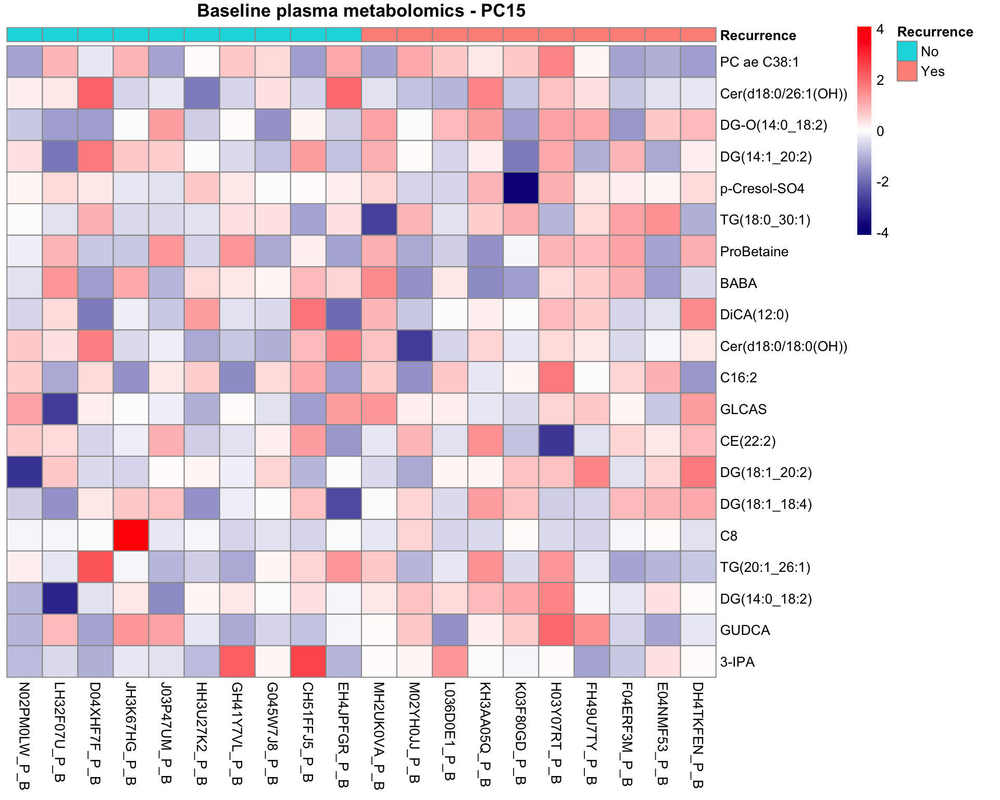
# ggsave(paste0(result_path, 'AG_Hell/metaPlasma_baseline_heatmap_pc15.png'), a, device = 'png', dpi = 400)
# Display top features with highest loadings of PC of interest
pcTopFeatTab$PC15 Feature Loading
1 PC ae C38:1 0.26539475
2 Cer(d18:0/26:1(OH)) 0.20622987
3 DG-O(14:0_18:2) 0.20265394
4 DG(14:1_20:2) 0.18909366
5 p-Cresol-SO4 0.17134770
6 TG(18:0_30:1) 0.14058710
7 ProBetaine 0.12543478
8 BABA 0.12446514
9 DiCA(12:0) 0.12160292
10 Cer(d18:0/18:0(OH)) 0.11991171
11 C16:2 0.11976174
12 GLCAS 0.11465542
13 CE(22:2) 0.11130978
14 DG(18:1_20:2) 0.10687704
15 DG(18:1_18:4) 0.10614360
16 C8 0.10556768
17 TG(20:1_26:1) 0.10547223
18 DG(14:0_18:2) 0.10381620
19 GUDCA 0.10113508
20 3-IPA 0.09716468
21 CE(22:1) 0.09614053
22 Cortisol 0.09442123
23 DG(18:1_18:3) 0.09152965
24 PC ae C30:1 0.09114583
25 HCys 0.09105166
26 Cer(d18:0/20:0) 0.08805632
27 GDCA 0.08734339
28 TG(17:0_32:1) 0.08454838
29 Putrescine 0.08406688
30 DG(18:2_20:0) 0.08145448Follow-up samples
Display significant associations between learned PCs (Var1) and metadata variables (Var2)
# Subset follow-up samples
smpFoloIdx <- which(colData(metaPlasmaNorm)$Condition != 'Baseline')
metaFolo <- metaPlasmaNorm[, smpFoloIdx]
# Display significant associations between PCs and metadata variables
metaFoloAssoRes <- doSOA(metaFolo, meta_var = c('Recurrence', 'Gender'),
do_onlyPCA = T)
metaFoloAssoRes$tPCASigRes Var1 Var2 pVal pValAdj Stat Test
1 PC8 Gender 0.007150194 0.2860078 3.03316 T-testDisplay significant associations between features (Var1) and cancer recurrence (Var2) and observe molecular signatures in input data through heatmap. Note that features in heatmap are ordered by their t-statistics.
# Perform analysis
metaFoloRes <- doSOA(metaFolo, meta_var = 'Recurrence', num_PCfeats = 30)
datMat <- metaFoloRes$data
smpAnno <- metaFoloRes$smpMetadata
tFeatSigRes <- metaFoloRes$tFeatSigRes
tPCASigRes <- metaFoloRes$tPCASigRes
pcaRes <- metaFoloRes$pcaRes
# Display features that can significantly separate recurrence and non-recurrence
# patients
tFeatSigRes Var1 Var2 pVal pValAdj Stat Test
1 CE(18:0) Recurrence 0.004180346 0.7423852 3.277890 T-test
2 CE(16:0) Recurrence 0.004510790 0.7423852 3.243372 T-test
3 GABA Recurrence 0.006332669 0.7423852 3.088790 T-test
4 CE(18:3) Recurrence 0.006715252 0.7423852 3.061936 T-test
5 Putrescine Recurrence 0.011209651 0.7423852 2.825375 T-test
6 C18:1-OH Recurrence 0.014764389 0.7423852 -2.696391 T-test
7 Asp Recurrence 0.021270344 0.7423852 2.522884 T-test
8 CE(18:1) Recurrence 0.022197791 0.7423852 2.502383 T-test
9 lysoPC a C18:0 Recurrence 0.023632737 0.7423852 2.472201 T-test
10 CE(20:3) Recurrence 0.026791546 0.7423852 2.411410 T-test
11 DG(18:1_20:3) Recurrence 0.029631265 0.7423852 -2.362239 T-test
12 Lac Recurrence 0.032082690 0.7423852 2.323206 T-test
13 CE(17:0) Recurrence 0.033223845 0.7423852 2.305974 T-test
14 CE(14:1) Recurrence 0.033400192 0.7423852 2.303360 T-test
15 TG(22:4_34:2) Recurrence 0.034163060 0.7423852 -2.292198 T-test
16 TG(18:2_38:5) Recurrence 0.035034399 0.7423852 -2.279728 T-test
17 PC ae C40:1 Recurrence 0.038243649 0.7423852 2.236146 T-test
18 CE(14:0) Recurrence 0.039753229 0.7423852 2.216801 T-test
19 Taurine Recurrence 0.039962039 0.7423852 2.214179 T-test
20 TG(17:2_38:5) Recurrence 0.040478457 0.7423852 -2.207747 T-test
21 DiCA(14:0) Recurrence 0.041553240 0.7423852 -2.194599 T-test
22 CE(22:5) Recurrence 0.046026177 0.7423852 2.143030 T-test
23 TG(20:0_32:3) Recurrence 0.046430100 0.7423852 -2.138602 T-test
24 CE(20:4) Recurrence 0.046870109 0.7423852 2.133818 T-test
25 C3-DC (C4-OH) Recurrence 0.047234276 0.7423852 -2.129889 T-test
26 C3-OH Recurrence 0.047234276 0.7423852 -2.129889 T-test
27 C4:1 Recurrence 0.047234276 0.7423852 -2.129889 T-test
28 C5-DC (C6-OH) Recurrence 0.047234276 0.7423852 -2.129889 T-test
29 C5-M-DC Recurrence 0.047234276 0.7423852 -2.129889 T-test
30 C5-OH (C3-DC-M) Recurrence 0.047234276 0.7423852 -2.129889 T-test
31 C5:1-DC Recurrence 0.047234276 0.7423852 -2.129889 T-test
32 C6:1 Recurrence 0.047234276 0.7423852 -2.129889 T-test
33 C7-DC Recurrence 0.047234276 0.7423852 -2.129889 T-test
34 C9 Recurrence 0.047234276 0.7423852 -2.129889 T-test
35 Ac-Orn Recurrence 0.047234276 0.7423852 -2.129889 T-test
36 c4-OH-Pro Recurrence 0.047234276 0.7423852 -2.129889 T-test
37 PEA Recurrence 0.047234276 0.7423852 -2.129889 T-test
38 DG(18:1_18:3) Recurrence 0.047748651 0.7423852 -2.124387 T-test
39 t4-OH-Pro Recurrence 0.049618812 0.7423852 2.104826 T-test
40 TG(22:5_34:2) Recurrence 0.049734468 0.7423852 -2.103639 T-test# Plot molecular signatures in input data
# Order features according to t-statistics
featOrder <- dplyr::arrange(tFeatSigRes, dplyr::desc(Stat))$Var1
# Arrange samples to make same groups in same clusters
smpOrder <- c(which(smpAnno$Recurrence == 'No'),
which(smpAnno$Recurrence == 'Yes'))
# Prepare recurrence table for annotating samples in heatmap
smpRecur <- dplyr::select(smpAnno, Sample, Recurrence) %>%
tibble::column_to_rownames('Sample')
pheatmap::pheatmap(datMat[featOrder, smpOrder],
annotation_col = smpRecur,
color = colorRampPalette(c('navy', 'white', 'red'))(100),
cluster_rows = F, cluster_cols = F, show_rownames = T,
scale = 'row', main = 'Follow-up plasma metabolomics')
| Version | Author | Date |
|---|---|---|
| 0bbd8eb | LiaoQianWu | 2023-04-25 |
Visualize data of top 6 significant features
# Visualize data of top 6 significant features
topSigFeats <- tFeatSigRes$Var1[1:6]
topSigFeatData <- tibble::as_tibble(datMat[topSigFeats,], rownames = 'Feature') %>%
tidyr::pivot_longer(cols = -'Feature',
names_to = 'Sample', values_to = 'Abundance') %>%
dplyr::mutate(Feature = factor(Feature, levels = topSigFeats)) %>%
dplyr::left_join(smpAnno, by = 'Sample')
ggplot(topSigFeatData, aes(x=Recurrence, y=Abundance, col=Recurrence, fill=Recurrence)) +
geom_boxplot(alpha = 0.5, outlier.shape = NA) +
geom_jitter(position = position_jitter(0.2), size = 2, show.legend = F) +
scale_color_manual(values=c('#00BFC4', '#F8766D')) +
scale_fill_manual(values=c('#00BFC4', '#F8766D')) +
facet_wrap(vars(Feature), scales = 'free') +
ggpubr::stat_compare_means(method = 't.test', paired = F,
method.args = list(var.equal = T),
show.legend = F) +
th + theme(strip.text = element_text(size = 13, face = 'bold'))
| Version | Author | Date |
|---|---|---|
| 0bbd8eb | LiaoQianWu | 2023-04-25 |
Display significant associations between PCs (Var1) and cancer recurrence (Var2)
# Display PCs that can significantly separate recurrence and non-recurrence
# patients
tPCASigRes[1] Var1 Var2 pVal pValAdj Stat Test
<0 rows> (or 0-length row.names)# Display proportion of total variance captured by all PCs explained by each PC
varExplained <- pcaRes$sdev^2 / sum(pcaRes$sdev^2)
PC <- paste0('PC', seq(length(varExplained)))
varTab <- data.frame(PC = factor(PC, levels = PC),
Var_explained = varExplained)
ggplot(varTab, aes(x=PC, y=Var_explained*100)) +
geom_col() +
labs(x = '', y = 'Variance explained (%)',
title = 'Follow-up plasma metabolomics') +
th + theme(axis.text.x = element_text(angle = 90, hjust = 1, vjust = 0.5))
| Version | Author | Date |
|---|---|---|
| 0bbd8eb | LiaoQianWu | 2023-04-25 |
Changes in time course
Differences between Follow-up and Baseline samples (Follow-up matrix
- baseline matrix):
Display significant associations between features (Var1) and cancer recurrence (Var2) and observe molecular signatures in input data through heatmap. Note that features in heatmap are ordered by their t-statistics.
# Subset baseline samples
smpBaseIdx <- which(colData(metaPlasmaNorm)$Condition == 'Baseline')
metaBase <- metaPlasmaNorm[, smpBaseIdx]
# Subset follow-up samples
smpFoloIdx <- which(colData(metaPlasmaNorm)$Condition != 'Baseline')
metaFolo <- metaPlasmaNorm[, smpFoloIdx]
# Modify sample names for matching two datasets
colnames(metaBase) <- stringr::str_remove(colnames(metaBase), '_P_B')
colnames(metaFolo) <- stringr::str_remove(colnames(metaFolo), '_P_R')
# Retrieve data matrix
metaBaseMat <- SummarizedExperiment::assay(metaBase)
metaFoloMat <- SummarizedExperiment::assay(metaFolo)
# Subtract follow-up matrix by baseline matrix
if (identical(colnames(metaBaseMat), colnames(metaFoloMat)) &
identical(rownames(metaBaseMat), rownames(metaFoloMat))) {
metaDiffMat <- metaFoloMat - metaBaseMat
} else {
print('Align samples or features first.')
}
# Retrieve samples metadata for creating SE object
colAnno <- dplyr::select(as.data.frame(colData(metaBase)), Patient, Recurrence)
metaDiff <- SummarizedExperiment(assays = metaDiffMat, colData = colAnno)
# Perform analysis
metaPlasmaDiffRes <- doSOA(metaDiff, meta_var = 'Recurrence', num_PCfeats = 30)
datMat <- metaPlasmaDiffRes$data
smpAnno <- metaPlasmaDiffRes$smpMetadata
tFeatSigRes <- metaPlasmaDiffRes$tFeatSigRes
tPCASigRes <- metaPlasmaDiffRes$tPCASigRes
pcaRes <- metaPlasmaDiffRes$pcaRes
pcTab <- metaPlasmaDiffRes$pcTab
pcTopFeatTab <- metaPlasmaDiffRes$pcTopFeatTab
# Display features that can significantly separate recurrence and non-recurrence
# patients
tFeatSigRes Var1 Var2 pVal pValAdj Stat Test
1 TrpBetaine Recurrence 0.005848652 0.9980203 3.125126 T-test
2 DG(17:0_18:1) Recurrence 0.009795344 0.9980203 2.888027 T-test
3 Cer(d18:1/26:1) Recurrence 0.009858564 0.9980203 -2.885045 T-test
4 Glu Recurrence 0.024519007 0.9980203 2.454410 T-test
5 SM C20:2 Recurrence 0.029250327 0.9980203 -2.368573 T-test
6 DG(18:1_20:3) Recurrence 0.029430428 0.9980203 -2.365569 T-test
7 TG(16:1_28:0) Recurrence 0.031351359 0.9980203 2.334552 T-test
8 CE(20:0) Recurrence 0.036656724 0.9980203 2.257256 T-test
9 DiCA(14:0) Recurrence 0.046023893 0.9980203 -2.143055 T-test
10 SM C22:3 Recurrence 0.047647882 0.9980203 -2.125460 T-test
11 TG(22:5_34:2) Recurrence 0.048420653 0.9980203 -2.117279 T-test# Plot molecular signatures in input data
# Order features according to t-statistics
featOrder <- dplyr::arrange(tFeatSigRes, dplyr::desc(Stat))$Var1
# Arrange samples to make same groups in same clusters
smpOrder <- c(which(smpAnno$Recurrence == 'No'),
which(smpAnno$Recurrence == 'Yes'))
# Prepare recurrence table for annotating samples in heatmap
smpRecur <- dplyr::select(smpAnno, Sample, Recurrence) %>%
tibble::column_to_rownames('Sample')
pheatmap::pheatmap(datMat[featOrder, smpOrder],
annotation_col = smpRecur,
color = colorRampPalette(c('navy', 'white', 'red'))(100),
cluster_rows = F, cluster_cols = F, show_rownames = T,
scale = 'row', main = 'Differential plasma metabolomics')
| Version | Author | Date |
|---|---|---|
| 0bbd8eb | LiaoQianWu | 2023-04-25 |
Visualize data of top 6 significant features
# Visualize data of top 6 significant features
topSigFeats <- tFeatSigRes$Var1[1:6]
topSigFeatData <- tibble::as_tibble(datMat[topSigFeats,], rownames = 'Feature') %>%
tidyr::pivot_longer(cols = -'Feature',
names_to = 'Sample', values_to = 'Abundance') %>%
dplyr::mutate(Feature = factor(Feature, levels = topSigFeats)) %>%
dplyr::left_join(smpAnno, by = 'Sample')
ggplot(topSigFeatData, aes(x=Recurrence, y=Abundance, col=Recurrence, fill=Recurrence)) +
geom_boxplot(alpha = 0.5, outlier.shape = NA) +
geom_jitter(position = position_jitter(0.2), size = 2, show.legend = F) +
scale_color_manual(values=c('#00BFC4', '#F8766D')) +
scale_fill_manual(values=c('#00BFC4', '#F8766D')) +
facet_wrap(vars(Feature), scales = 'free') +
ggpubr::stat_compare_means(method = 't.test', paired = F,
method.args = list(var.equal = T),
show.legend = F) +
th + theme(strip.text = element_text(size = 13, face = 'bold'))
| Version | Author | Date |
|---|---|---|
| 0bbd8eb | LiaoQianWu | 2023-04-25 |
Display significant associations between PCs (Var1) and cancer recurrence (Var2)
# Display PCs that can significantly separate recurrence and non-recurrence
# patients
tPCASigRes Var1 Var2 pVal pValAdj Stat Test
1 PC17 Recurrence 0.006389952 0.127799 3.08467 T-test# Display proportion of total variance captured by all PCs explained by each PC
varExplained <- pcaRes$sdev^2 / sum(pcaRes$sdev^2)
PC <- paste0('PC', seq(length(varExplained)))
varTab <- data.frame(PC = factor(PC, levels = PC),
Var_explained = varExplained)
ggplot(varTab, aes(x=PC, y=Var_explained*100)) +
geom_col() +
labs(x = '', y = 'Variance explained (%)',
title = 'Differential plasma metabolomics') +
th + theme(axis.text.x = element_text(angle = 90, hjust = 1, vjust = 0.5))
| Version | Author | Date |
|---|---|---|
| 0bbd8eb | LiaoQianWu | 2023-04-25 |
PC17 potentially separates recurrence and non-recurrence patients
# Visualize PCs
ggplot(pcTab, aes(x=Recurrence, y=PC17, col=Recurrence, fill=Recurrence)) +
geom_boxplot(alpha = 0.5, outlier.shape = NA) +
geom_jitter(position = position_jitter(0.2), size = 2, show.legend = F) +
labs(title = 'Differential plasma metabolomics') +
scale_color_manual(values=c('#00BFC4', '#F8766D')) +
scale_fill_manual(values=c('#00BFC4', '#F8766D')) +
ggpubr::stat_compare_means(method = 't.test', paired = F, size = 5,
method.args = list(var.equal = T),
show.legend = F) +
th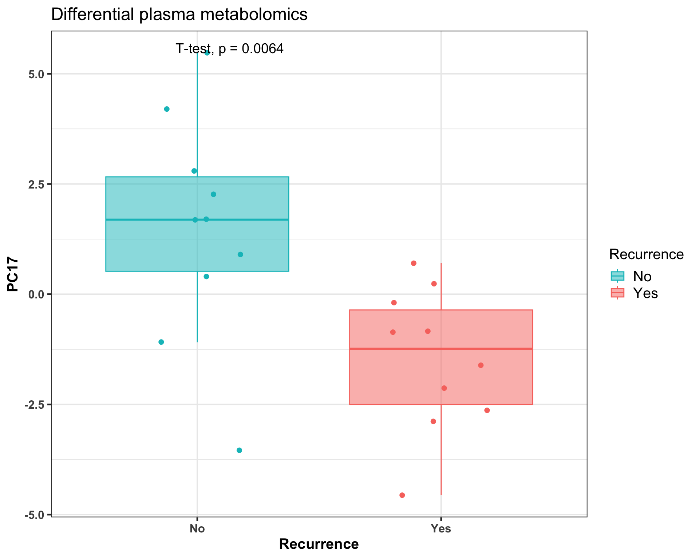
Observe molecular signatures captured by PC17 in input data
# Plot molecular signatures in input data
# Extract top features with highest loadings
topFeats <- pcTopFeatTab$PC17$Feature[1:10]
topFeatsIdx <- sapply(topFeats, function(feat) {which(rownames(datMat) == feat)})
pheatmap::pheatmap(datMat[topFeatsIdx, smpOrder],
annotation_col = smpRecur,
color = colorRampPalette(c('navy', 'white', 'red'))(100),
cluster_rows = F, cluster_cols = F,
scale = 'row', main = 'Differential plasma metabolomics - PC17')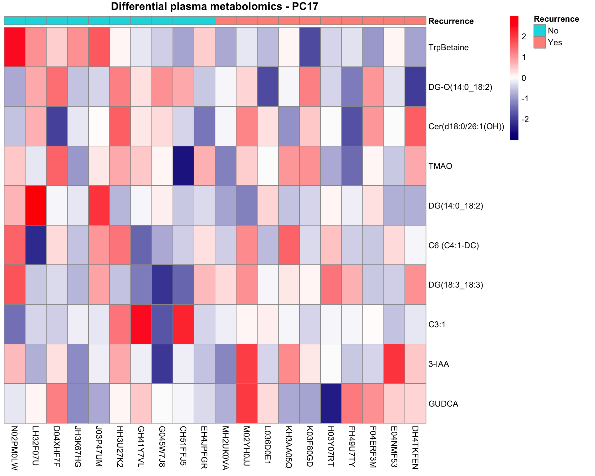
Display top features that build PC17
# Display top features with highest loadings of PC of interest
pcTopFeatTab$PC17
Feature Loading
1 TrpBetaine 0.26493354
2 DG-O(14:0_18:2) 0.19226226
3 Cer(d18:0/26:1(OH)) 0.18132312
4 TMAO 0.16043196
5 DG(14:0_18:2) 0.15773701
6 C6 (C4:1-DC) 0.14697016
7 DG(18:3_18:3) 0.14401895
8 C3:1 0.13935634
9 3-IAA 0.12536099
10 GUDCA 0.11222318
11 TG(18:1_26:0) 0.11179136
12 DG(14:1_20:2) 0.11127213
13 DG(18:2_18:4) 0.10914107
14 3-Met-His 0.10812754
15 TG(20:1_26:1) 0.10516521
16 TG(18:0_30:1) 0.09981349
17 PC ae C30:0 0.09922959
18 DCA 0.09877846
19 DG(16:0_20:0) 0.09700373
20 3-IPA 0.09669855
21 SM C22:3 0.09583030
22 Spermidine 0.09017031
23 Xanthine 0.09013095
24 Cer(d18:0/18:0(OH)) 0.08961657
25 PC aa C30:0 0.08902206
26 AA 0.08890918
27 Arg 0.08855247
28 C16 0.08239281
29 DG(16:1_18:0) 0.08084445
30 TG(18:1_28:1) 0.08060958Tissue Metabolomics
Based on PCA result obtained by analyzing whole Tissue Metabolomics dataset that includes Tumor and Normal samples, we found that PCA mainly captures source of variation in tissue conditions, which is not of direct interest. In addition, Recurrence-related significant PCs do not work that well, perhaps because Tumor and Normal samples are noise to each other. Therefore, we decided to analyze Tumor and Normal samples separately.
# Load normalized data
metaTissueNorm <- readRDS('./data/AG_Hell/metaTissueNorm.rds')
# Manually modify metadata information (metastasis)
tmp_metadata <- as.data.frame(colData(metaTissueNorm)) %>%
dplyr::mutate(
Metastasis = case_when(
Stage == 'IIB' ~ 'Yes',
Stage != 'IIB' ~ 'No'
))
colData(metaTissueNorm)['Metastasis'] <- tmp_metadata$Metastasis
# Perform analysis
metaTissueRes <- doSOA(metaTissueNorm, meta_var = c('Recurrence', 'Gender', 'Age',
'Condition', 'Smoking', 'Stage',
'Metastasis'),
do_onlyPCA = T)
tPCASigRes <- metaTissueRes$tPCASigRes
pcaRes <- metaTissueRes$pcaRes
pcTab <- metaTissueRes$pcTabDisplay significant associations between learned PCs (Var1) and metadata variables (Var2). Note that each patient has two samples that have same patient annotations, so association test results may have additive effects.
# Display PCs of interest
tPCASigRes Var1 Var2 pVal pValAdj Stat Test
1 PC2 Condition 6.245037e-15 1.748610e-12 12.4022861 T-test
2 PC18 Metastasis 7.479639e-03 7.367299e-01 -2.8256708 T-test
3 PC7 Gender 8.431597e-03 7.367299e-01 -2.7788784 T-test
4 PC15 Stage 1.121935e-02 7.367299e-01 5.0819041 ANOVA
5 PC18 Stage 1.499570e-02 7.367299e-01 4.7149696 ANOVA
6 PC22 Gender 1.983383e-02 7.367299e-01 2.4320751 T-test
7 PC15 Gender 2.138002e-02 7.367299e-01 2.4004184 T-test
8 PC15 Smoking 2.527855e-02 7.367299e-01 4.0688509 ANOVA
9 PC40 Condition 2.637010e-02 7.367299e-01 2.3107339 T-test
10 PC14 Recurrence 3.057069e-02 7.367299e-01 2.2463888 T-test
11 PC4 Metastasis 3.478602e-02 7.367299e-01 2.1893183 T-test
12 PC21 Age 3.496867e-02 7.367299e-01 -0.3343575 Correlation
13 PC8 Stage 3.527590e-02 7.367299e-01 3.6659537 ANOVA
14 PC8 Metastasis 3.962162e-02 7.367299e-01 2.1309693 T-test
15 PC21 Stage 4.000107e-02 7.367299e-01 3.5158485 ANOVA
16 PC15 Metastasis 4.209885e-02 7.367299e-01 2.1034787 T-test
17 PC15 Recurrence 4.864884e-02 8.012751e-01 2.0371043 T-testPC2 explains quite some variation in data and separates patient samples by tissue conditions.
ggplot(pcTab, aes(x=Condition, y=PC2, col=Condition, fill=Condition)) +
geom_boxplot(alpha = 0.5, outlier.shape = NA) +
geom_jitter(position = position_jitter(0.2), size = 2, show.legend = F) +
labs(title = 'Tissue metabolomics') +
ggpubr::stat_compare_means(method = 't.test', paired = F, size = 5,
method.args = list(var.equal = T),
show.legend = F) +
th
| Version | Author | Date |
|---|---|---|
| 0bbd8eb | LiaoQianWu | 2023-04-25 |
# Display proportion of total variance captured by all PCs explained by each PC
varExplained <- pcaRes$sdev^2 / sum(pcaRes$sdev^2)
PC <- paste0('PC', seq(length(varExplained)))
varTab <- data.frame(PC = factor(PC, levels = PC),
Var_explained = varExplained)
ggplot(varTab, aes(x=PC, y=Var_explained*100)) +
geom_col() +
labs(x = '', y = 'Variance explained (%)', title = 'Tissue metabolomics') +
th + theme(axis.text.x = element_text(angle = 90, hjust = 1, vjust = 0.5))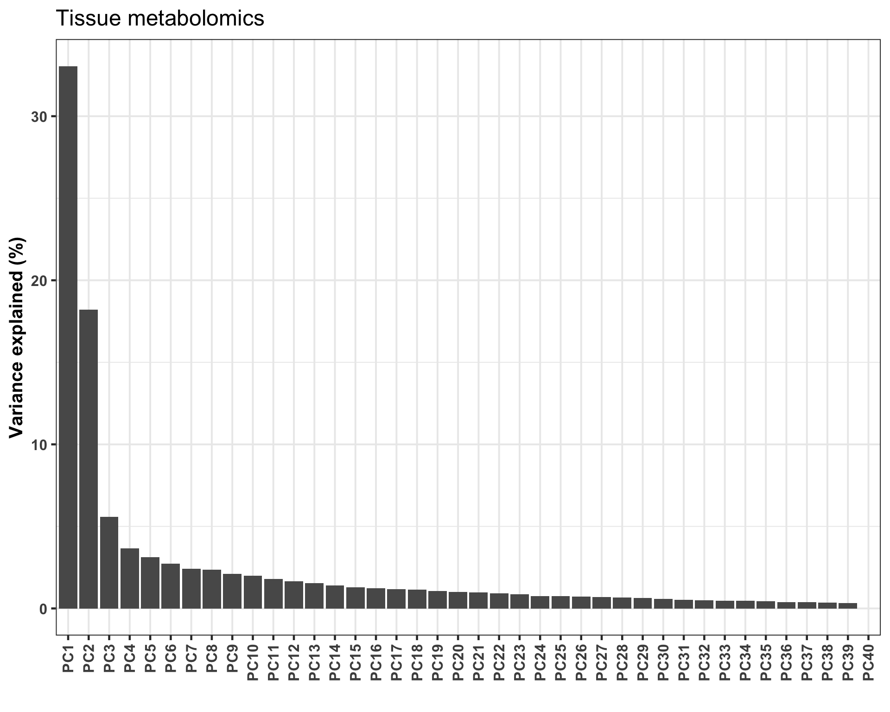
Visualize recurrence-related significant PCs
ggplot(pcTab, aes(x=PC14, y=PC15, col=Recurrence, group=Patient)) +
geom_point(size = 3) +
labs(title = 'Tissue metabolomics') +
scale_color_manual(values=c('#00BFC4', '#F8766D')) +
geom_line(col = 'grey50', linetype = 'dashed') +
th
| Version | Author | Date |
|---|---|---|
| 0bbd8eb | LiaoQianWu | 2023-04-25 |
ggplot(pcTab, aes(x=Recurrence, y=PC14, col=Recurrence, fill=Recurrence)) +
geom_boxplot(alpha = 0.5, outlier.shape = NA) +
geom_jitter(position = position_jitter(0.2), size = 2, show.legend = F) +
labs(title = 'Tissue metabolomics') +
scale_color_manual(values=c('#00BFC4', '#F8766D')) +
scale_fill_manual(values=c('#00BFC4', '#F8766D')) +
ggpubr::stat_compare_means(method = 't.test', paired = F, size = 5,
show.legend = F) +
th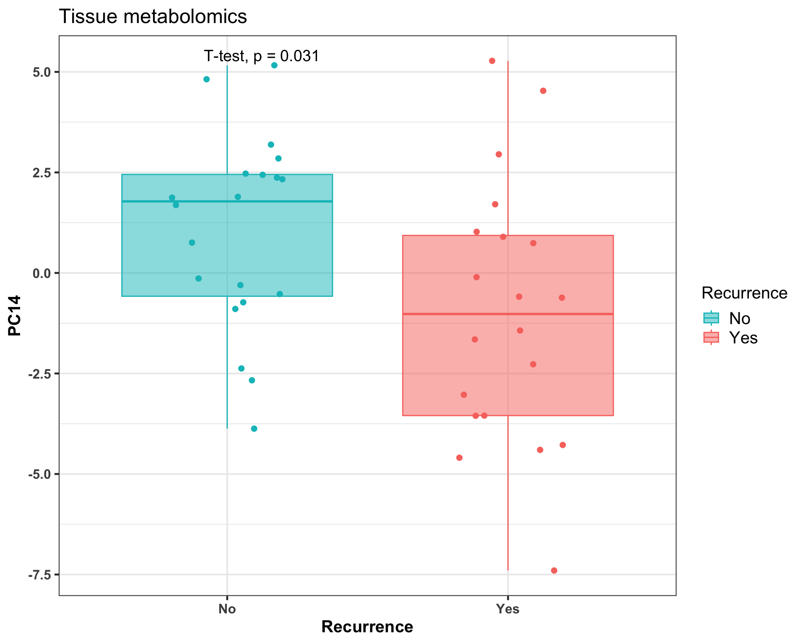
ggplot(pcTab, aes(x=Recurrence, y=PC15, col=Recurrence, fill=Recurrence)) +
geom_boxplot(alpha = 0.5, outlier.shape = NA) +
geom_jitter(position = position_jitter(0.2), size = 2, show.legend = F) +
labs(title = 'Tissue metabolomics') +
scale_color_manual(values=c('#00BFC4', '#F8766D')) +
scale_fill_manual(values=c('#00BFC4', '#F8766D')) +
ggpubr::stat_compare_means(method = 't.test', paired = F, size = 5,
method.args = list(var.equal = T),
show.legend = F) +
thTumor Samples
Display significant associations between learned PCs (Var1) and metadata variables (Var2)
# Subset tumor samples
smpTumorIdx <- which(colData(metaTissueNorm)$Condition == 'Tumor')
metaTumor <- metaTissueNorm[, smpTumorIdx]
# Display significant associations between PCs and metadata variables
metaTumorAssoRes <- doSOA(metaTumor, meta_var = c('Recurrence', 'Gender', 'Age',
'Smoking', 'Stage', 'Metastasis'),
do_onlyPCA = T)
metaTumorAssoRes$tPCASigRes Var1 Var2 pVal pValAdj Stat Test
1 PC16 Recurrence 0.003658645 0.4390374 -3.3382625 T-test
2 PC5 Age 0.026935615 0.6561523 -0.4937319 Correlation
3 PC14 Smoking 0.028046578 0.6561523 4.4425930 ANOVA
4 PC17 Gender 0.031630356 0.6561523 -2.3301949 T-test
5 PC14 Metastasis 0.040307868 0.6561523 -2.2098630 T-test
6 PC11 Metastasis 0.044643085 0.6561523 -2.1584671 T-test
7 PC20 Age 0.047229885 0.6561523 -0.4486649 CorrelationDisplay significant associations between features (Var1) and cancer recurrence (Var2) and observe molecular signatures in input data through heatmap. Note that features in heatmap are ordered by their t-statistics.
# Perform analysis
metaTumorRes <- doSOA(metaTumor, meta_var = 'Recurrence', num_PCfeats = 30)
datMat <- metaTumorRes$data
smpAnno <- metaTumorRes$smpMetadata
tFeatSigRes <- metaTumorRes$tFeatSigRes
tPCASigRes <- metaTumorRes$tPCASigRes
pcaRes <- metaTumorRes$pcaRes
pcTab <- metaTumorRes$pcTab
pcTopFeatTab <- metaTumorRes$pcTopFeatTab
# Display features that can significantly separate recurrence and non-recurrence
# patients
tFeatSigRes Var1 Var2 pVal pValAdj Stat Test
1 DG(16:0_20:0) Recurrence 0.01133581 0.9966347 -2.820162 T-test
2 PC aa C36:6 Recurrence 0.01347825 0.9966347 -2.739234 T-test
3 C10:2 Recurrence 0.01915721 0.9966347 -2.572942 T-test
4 DG(22:1_22:2) Recurrence 0.02477010 0.9966347 -2.449479 T-test
5 TG(20:2_34:4) Recurrence 0.02777014 0.9966347 2.393937 T-test
6 Trigonelline Recurrence 0.03525822 0.9966347 -2.276571 T-test
7 FA(20:2) Recurrence 0.04083326 0.9966347 -2.203371 T-test# Plot molecular signatures in input data
# Order features according to t-statistics
featOrder <- dplyr::arrange(tFeatSigRes, dplyr::desc(Stat))$Var1
# Arrange samples to make same groups in same clusters
smpOrder <- c(which(smpAnno$Recurrence == 'No'),
which(smpAnno$Recurrence == 'Yes'))
# Prepare recurrence table for annotating samples in heatmap
smpRecur <- dplyr::select(smpAnno, Sample, Recurrence) %>%
tibble::column_to_rownames('Sample')
a <- pheatmap::pheatmap(datMat[featOrder, smpOrder],
annotation_col = smpRecur,
color = colorRampPalette(c('navy', 'white', 'red'))(100),
cluster_rows = F, cluster_cols = F, show_rownames = T,
fontsize = 18, fontsize_col = 14,
scale = 'row')#, main = 'Tumor Tissue metabolomics')
| Version | Author | Date |
|---|---|---|
| 0bbd8eb | LiaoQianWu | 2023-04-25 |
# ggsave('./output/AG_Hell/heatmap_sigFeats_TTM.png', a, device = 'png', dpi = 400, height = 8, width = 10)Visualize data of top 6 significant features
# Visualize data of top 6 significant features
topSigFeats <- tFeatSigRes$Var1[1:6]
topSigFeatData <- tibble::as_tibble(datMat[topSigFeats,], rownames = 'Feature') %>%
tidyr::pivot_longer(cols = -'Feature',
names_to = 'Sample', values_to = 'Abundance') %>%
dplyr::mutate(Feature = factor(Feature, levels = topSigFeats)) %>%
dplyr::left_join(smpAnno, by = 'Sample')
ggplot(topSigFeatData, aes(x=Recurrence, y=Abundance, col=Recurrence, fill=Recurrence)) +
geom_boxplot(alpha = 0.3, outlier.shape = NA) +
geom_jitter(position = position_jitter(0.2), size = 2, show.legend = F) +
scale_color_manual(values=c('#00BFC4', '#F8766D')) +
scale_fill_manual(values=c('#00BFC4', '#F8766D')) +
facet_wrap(vars(Feature), scales = 'free_y') +
ggpubr::stat_compare_means(method = 't.test', paired = F,
method.args = list(var.equal = T),
show.legend = F, size = 4) +
th + theme(strip.text = element_text(size = 13, face = 'bold'))
| Version | Author | Date |
|---|---|---|
| 0bbd8eb | LiaoQianWu | 2023-04-25 |
# ggsave('./output/AG_Hell/boxplot_topSigFeats_TTM.png', device = 'png', dpi = 400, height = 8, width = 10)Display significant associations between PCs (Var1) and cancer recurrence (Var2)
# Display PCs that can significantly separate recurrence and non-recurrence
# patients
tPCASigRes Var1 Var2 pVal pValAdj Stat Test
1 PC16 Recurrence 0.003658645 0.0731729 -3.338262 T-test# Display proportion of total variance captured by all PCs explained by each PC
varExplained <- pcaRes$sdev^2 / sum(pcaRes$sdev^2)
PC <- paste0('PC', seq(length(varExplained)))
varTab <- data.frame(PC = factor(PC, levels = PC),
Var_explained = varExplained)
ggplot(varTab, aes(x=PC, y=Var_explained*100)) +
geom_col() +
labs(x = '', y = 'Variance explained (%)',
title = 'Tumor tissue metabolomics') +
th + theme(axis.text.x = element_text(angle = 90, hjust = 1, vjust = 0.5))PC16 potentially separates recurrence and non-recurrence patients.
# ggplot2::autoplot(pcaRes, x = 15, y = 16)
# Visualize PCs
ggplot(pcTab, aes(x=Recurrence, y=PC16, col=Recurrence, fill=Recurrence)) +
geom_boxplot(alpha = 0.3, outlier.shape = NA) +
geom_jitter(position = position_jitter(0.2), size = 2, show.legend = F) +
# geom_text_repel(aes(label=Sample), size = 4, show.legend = F) +
labs(y = 'PC16 (1.37%)') +#title = 'Tumor tissue metabolomics') +
scale_color_manual(values=c('#00BFC4', '#F8766D')) +
scale_fill_manual(values=c('#00BFC4', '#F8766D')) +
ggpubr::stat_compare_means(method = 't.test', paired = F,
method.args = list(var.equal = T),
show.legend = F, size = 7, hjust = 0) +
th
| Version | Author | Date |
|---|---|---|
| 0bbd8eb | LiaoQianWu | 2023-04-25 |
# ggsave('./output/AG_Hell/boxplot_pc16_TTM.png', device = 'png', dpi = 400, height = 8, width = 10)Plot molecular signatures captured by PC16 in input data. We took a look at top 10 features with highest loadings and observed metabolite levels of these top features through heatmap. Note that features in heatmap are ordered by their loadings.
# Plot molecular signatures in input data
# Extract top features with highest loadings
topFeats <- pcTopFeatTab$PC16$Feature[1:10]
topFeatsIdx <- sapply(topFeats, function(feat) {which(rownames(datMat) == feat)})
pheatmap::pheatmap(datMat[topFeatsIdx, smpOrder],
annotation_col = smpRecur,
color = colorRampPalette(c('navy', 'white', 'red'))(100),
cluster_rows = F, cluster_cols = F,
scale = 'row', main = 'Tumor tissue metabolomics - PC16')
| Version | Author | Date |
|---|---|---|
| 0bbd8eb | LiaoQianWu | 2023-04-25 |
Display top features that build the PC16
# Display top features with highest loadings of PC of interest
pcTopFeatTab$PC16 Feature Loading
1 C5-DC (C6-OH) 0.17620729
2 C8 0.17117909
3 DG(14:0_18:2) 0.14569628
4 TG(22:4_32:2) 0.13701299
5 H1 0.13562686
6 DG-O(14:0_18:2) 0.13117456
7 DG(18:1_18:4) 0.13097056
8 PheAlaBetaine 0.12897173
9 Ind-SO4 0.12741588
10 PC aa C38:1 0.12436264
11 TG(17:1_32:1) 0.12256340
12 C3 0.10665870
13 TG(16:1_32:0) 0.10394754
14 Sarcosine 0.10299410
15 TG(20:2_34:4) 0.10277284
16 Cer(d16:1/18:0) 0.10271827
17 DG(18:3_20:2) 0.09816135
18 Cystine 0.09358610
19 Trigonelline 0.09258061
20 PC aa C36:6 0.09123958
21 PC ae C38:1 0.09087993
22 EPA 0.09070805
23 C10:2 0.08957662
24 DG(18:2_20:4) 0.08956346
25 TG(22:2_32:4) 0.08893477
26 DG(18:3_18:3) 0.08861643
27 TG(22:3_30:2) 0.08797023
28 Met-SO 0.08631504
29 Cer(d18:1/18:0(OH)) 0.08524704
30 C6:1 0.08479348Normal samples
Display significant associations between learned PCs (Var1) and metadata variables (Var2)
# Subset normal samples
smpNormalIdx <- which(colData(metaTissueNorm)$Condition == 'Normal')
metaNormal <- metaTissueNorm[, smpNormalIdx]
# Display significant associations between PCs and metadata variables
metaNormalAssoRes <- doSOA(metaNormal, meta_var = c('Recurrence', 'Gender', 'Age',
'Smoking', 'Stage', 'Metastasis'),
do_onlyPCA = T)
metaNormalAssoRes$tPCASigRes Var1 Var2 pVal pValAdj Stat Test
1 PC10 Smoking 0.003996635 0.4795962 7.776931 ANOVA
2 PC17 Smoking 0.023209941 0.8449659 4.734044 ANOVA
3 PC6 Recurrence 0.026385789 0.8449659 2.418830 T-test
4 PC17 Recurrence 0.048930292 0.8449659 2.111949 T-test
5 PC9 Recurrence 0.049297756 0.8449659 2.108136 T-testDisplay significant associations between features (Var1) and cancer recurrence (Var2) and observe molecular signatures in input data through heatmap. Note that features in heatmap are ordered by their t-statistics.
# Perform analysis
metaNormalRes <- doSOA(metaNormal, meta_var = 'Recurrence', num_PCfeats = 30)
datMat <- metaNormalRes$data
smpAnno <- metaNormalRes$smpMetadata
tFeatSigRes <- metaNormalRes$tFeatSigRes
tPCASigRes <- metaNormalRes$tPCASigRes
pcaRes <- metaNormalRes$pcaRes
pcTab <- metaNormalRes$pcTab
pcTopFeatTab <- metaNormalRes$pcTopFeatTab
# Display features that can significantly separate recurrence and non-recurrence
# patients
tFeatSigRes Var1 Var2 pVal pValAdj Stat Test
1 TG(16:0_38:7) Recurrence 0.02653003 0.9981732 2.416180 T-test
2 CE(22:1) Recurrence 0.03336076 0.9981732 -2.303943 T-test
3 Cer(d18:0/26:1(OH)) Recurrence 0.03401967 0.9981732 -2.294278 T-test
4 TG(20:2_34:4) Recurrence 0.04007953 0.9981732 2.212709 T-test
5 TG(17:2_38:5) Recurrence 0.04019297 0.9981732 2.211293 T-test# Plot molecular signatures in input data
# Order features according to t-statistics
featOrder <- dplyr::arrange(tFeatSigRes, dplyr::desc(Stat))$Var1
# Arrange samples to make same groups in same clusters
smpOrder <- c(which(smpAnno$Recurrence == 'No'),
which(smpAnno$Recurrence == 'Yes'))
# Prepare recurrence table for annotating samples in heatmap
smpRecur <- dplyr::select(smpAnno, Sample, Recurrence) %>%
tibble::column_to_rownames('Sample')
pheatmap::pheatmap(datMat[featOrder, smpOrder],
annotation_col = smpRecur,
color = colorRampPalette(c('navy', 'white', 'red'))(100),
cluster_rows = F, cluster_cols = F, show_rownames = T,
scale = 'row', main = 'Normal tissue metabolomics')
| Version | Author | Date |
|---|---|---|
| 0bbd8eb | LiaoQianWu | 2023-04-25 |
Visualize data of those 5 significant features
# Visualize data of those 5 significant features
topSigFeats <- tFeatSigRes$Var1[1:5]
topSigFeatData <- tibble::as_tibble(datMat[topSigFeats,], rownames = 'Feature') %>%
tidyr::pivot_longer(cols = -'Feature',
names_to = 'Sample', values_to = 'Abundance') %>%
dplyr::mutate(Feature = factor(Feature, levels = topSigFeats)) %>%
dplyr::left_join(smpAnno, by = 'Sample')
ggplot(topSigFeatData, aes(x=Recurrence, y=Abundance, col=Recurrence, fill=Recurrence)) +
geom_boxplot(alpha = 0.5, outlier.shape = NA) +
geom_jitter(position = position_jitter(0.2), size = 2, show.legend = F) +
scale_color_manual(values=c('#00BFC4', '#F8766D')) +
scale_fill_manual(values=c('#00BFC4', '#F8766D')) +
facet_wrap(vars(Feature), scales = 'free') +
ggpubr::stat_compare_means(method = 't.test', paired = F,
method.args = list(var.equal = T),
show.legend = F) +
th + theme(strip.text = element_text(size = 13, face = 'bold'))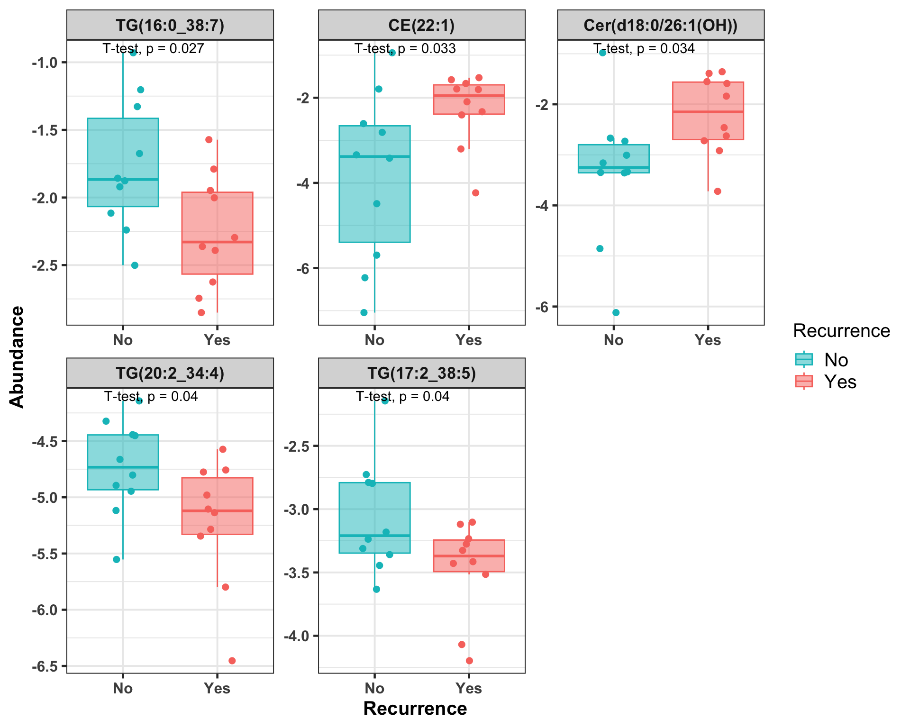
Display significant associations between PCs (Var1) and cancer recurrence (Var2)
# Display PCs that can significantly separate recurrence and non-recurrence
# patients
tPCASigRes Var1 Var2 pVal pValAdj Stat Test
1 PC6 Recurrence 0.02638579 0.3286517 2.418830 T-test
2 PC17 Recurrence 0.04893029 0.3286517 2.111949 T-test
3 PC9 Recurrence 0.04929776 0.3286517 2.108136 T-test# Display proportion of total variance captured by all PCs explained by each PC
varExplained <- pcaRes$sdev^2 / sum(pcaRes$sdev^2)
PC <- paste0('PC', seq(length(varExplained)))
varTab <- data.frame(PC = factor(PC, levels = PC),
Var_explained = varExplained)
ggplot(varTab, aes(x=PC, y=Var_explained*100)) +
geom_col() +
labs(x = '', y = 'Variance explained (%)',
title = 'Normal tissue metabolomics') +
th + theme(axis.text.x = element_text(angle = 90, hjust = 1, vjust = 0.5))
| Version | Author | Date |
|---|---|---|
| 0bbd8eb | LiaoQianWu | 2023-04-25 |
PC6 potentially separates recurrence and non-recurrence patients.
# PC6
# Visualize PCs
ggplot(pcTab, aes(x=Recurrence, y=PC6, col=Recurrence, fill=Recurrence)) +
geom_boxplot(alpha = 0.5, outlier.shape = NA) +
geom_jitter(position = position_jitter(0.2), size = 2, show.legend = F) +
# geom_text_repel(aes(label=Sample), size = 4, show.legend = F) +
labs(title = 'Normal tissue metabolomics') +
scale_color_manual(values=c('#00BFC4', '#F8766D')) +
scale_fill_manual(values=c('#00BFC4', '#F8766D')) +
ggpubr::stat_compare_means(method = 't.test', paired = F, size = 5,
method.args = list(var.equal = T),
show.legend = F) +
th
| Version | Author | Date |
|---|---|---|
| 0bbd8eb | LiaoQianWu | 2023-04-25 |
Plot molecular signatures captured by PC6 in input data. We took a look at top 10 features with highest loadings and observed metabolite levels of these top features through heatmap. Note that features in heatmap are ordered by their loadings.
# Plot molecular signatures in input data
# Extract top features with highest loadings
topFeats <- pcTopFeatTab$PC6$Feature[1:10]
topFeatsIdx <- sapply(topFeats, function(feat) {which(rownames(datMat) == feat)})
pheatmap::pheatmap(datMat[topFeatsIdx, smpOrder],
annotation_col = smpRecur,
color = colorRampPalette(c('navy', 'white', 'red'))(100),
cluster_rows = F, cluster_cols = F,
scale = 'row', main = 'Normal tissue metabolomics - PC6')
| Version | Author | Date |
|---|---|---|
| 0bbd8eb | LiaoQianWu | 2023-04-25 |
Display top features that build the PC6
# Display top features with highest loadings of PC of interest
pcTopFeatTab$PC6 Feature Loading
1 PC aa C38:1 0.32735809
2 DG(18:2_18:3) 0.20166394
3 CE(15:1) 0.17171935
4 TG(17:0_32:1) 0.15458559
5 SM C20:2 0.15035057
6 TrpBetaine 0.14923147
7 TG(16:1_32:2) 0.14520815
8 C6:1 0.14422902
9 DG(14:0_18:2) 0.13796116
10 TG(20:1_32:2) 0.12553221
11 CE(17:0) 0.12362621
12 TG(22:6_34:3) 0.12011286
13 TG(18:0_30:1) 0.11247665
14 TG(18:0_30:0) 0.11202494
15 p-Cresol-SO4 0.10621316
16 CE(15:0) 0.10507073
17 TG(18:1_28:1) 0.10482327
18 Cystine 0.10308848
19 TG(16:1_32:0) 0.10129051
20 TG(22:6_32:1) 0.10038098
21 TG(16:0_30:2) 0.09821397
22 C5-OH (C3-DC-M) 0.09597198
23 TG(17:1_34:3) 0.09183856
24 DG(17:0_17:1) 0.08943110
25 TG(16:0_33:1) 0.08853053
26 Cortisol 0.08550179
27 TG(18:2_28:0) 0.08528623
28 3-IPA 0.08322622
29 C8 0.08238423
30 DG(14:1_18:1) 0.08233035Other PCs that significantly separate recurrence and non-recurrence patients
# PC17
# Visualize PCs
ggplot(pcTab, aes(x=Recurrence, y=PC17, col=Recurrence, fill=Recurrence)) +
geom_boxplot(alpha = 0.5, outlier.shape = NA) +
geom_jitter(position = position_jitter(0.2), size = 2, show.legend = F) +
# geom_text_repel(aes(label=Sample), size = 4, show.legend = F) +
labs(title = 'Normal tissue metabolomics') +
scale_color_manual(values=c('#00BFC4', '#F8766D')) +
scale_fill_manual(values=c('#00BFC4', '#F8766D')) +
ggpubr::stat_compare_means(method = 't.test', paired = F, size = 5,
method.args = list(var.equal = T),
show.legend = F) +
th
| Version | Author | Date |
|---|---|---|
| 0bbd8eb | LiaoQianWu | 2023-04-25 |
# Plot molecular signatures in input data
# Extract top features with highest loadings
topFeats <- pcTopFeatTab$PC17$Feature[1:10]
topFeatsIdx <- sapply(topFeats, function(feat) {which(rownames(datMat) == feat)})
pheatmap::pheatmap(datMat[topFeatsIdx, smpOrder],
annotation_col = smpRecur,
color = colorRampPalette(c('navy', 'white', 'red'))(100),
cluster_rows = F, cluster_cols = F,
scale = 'row', main = 'Normal tissue metabolomics - PC17')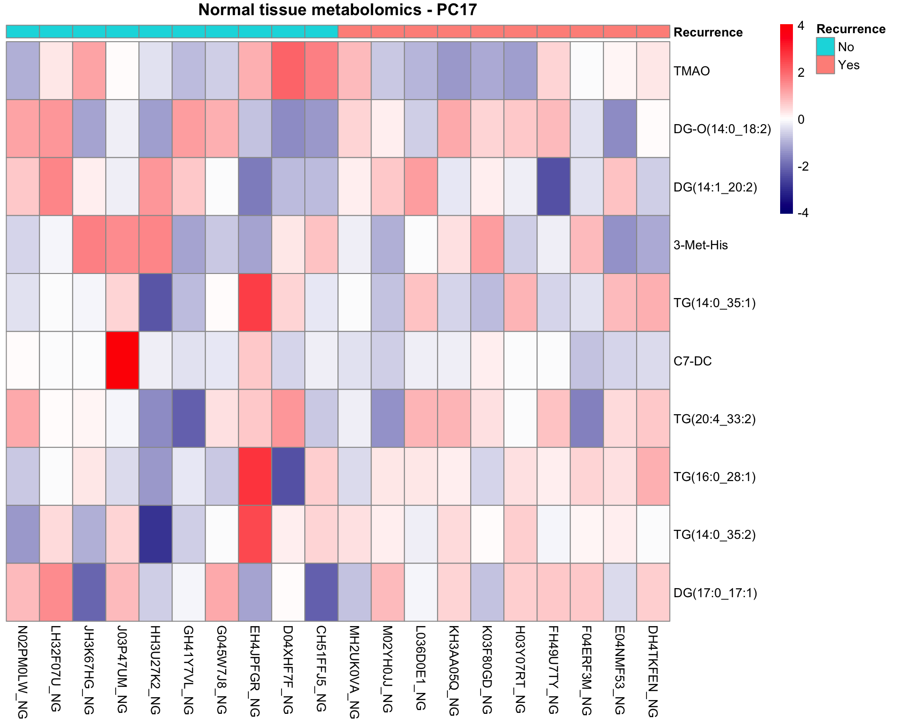
# Display top features with highest loadings of PC of interest
pcTopFeatTab$PC17 Feature Loading
1 TMAO 0.23928134
2 DG-O(14:0_18:2) 0.20816223
3 DG(14:1_20:2) 0.14902505
4 3-Met-His 0.14117256
5 TG(14:0_35:1) 0.13888325
6 C7-DC 0.13282940
7 TG(20:4_33:2) 0.12979935
8 TG(16:0_28:1) 0.12565382
9 TG(14:0_35:2) 0.12343616
10 DG(17:0_17:1) 0.12180804
11 GCDCA 0.12067141
12 TG(17:1_32:1) 0.11482063
13 TCDCA 0.10932907
14 CE(14:1) 0.10784972
15 CE(17:0) 0.10522164
16 TG(18:0_30:0) 0.10348556
17 DG(14:0_18:2) 0.10240748
18 PheAlaBetaine 0.10132550
19 TG(16:0_32:3) 0.10103357
20 TG(17:0_34:2) 0.09968556
21 Cer(d18:0/26:1(OH)) 0.09729625
22 DG(18:2_18:3) 0.09668493
23 C14:2-OH 0.09556835
24 DG(18:2_20:0) 0.09494485
25 TG(18:0_32:0) 0.09444201
26 CE(15:0) 0.09438357
27 DG(14:1_18:1) 0.09329023
28 TG(18:2_36:4) 0.09210804
29 TG(20:3_36:4) 0.09205292
30 DG(18:3_20:2) 0.09145886# PC9
# Visualize PCs
ggplot(pcTab, aes(x=Recurrence, y=PC9, col=Recurrence, fill=Recurrence)) +
geom_boxplot(alpha = 0.5, outlier.shape = NA) +
geom_jitter(position = position_jitter(0.2), size = 2, show.legend = F) +
# geom_text_repel(aes(label=Sample), size = 4, show.legend = F) +
labs(title = 'Normal tissue metabolomics') +
scale_color_manual(values=c('#00BFC4', '#F8766D')) +
scale_fill_manual(values=c('#00BFC4', '#F8766D')) +
ggpubr::stat_compare_means(method = 't.test', paired = F, size = 5,
method.args = list(var.equal = T),
show.legend = F) +
th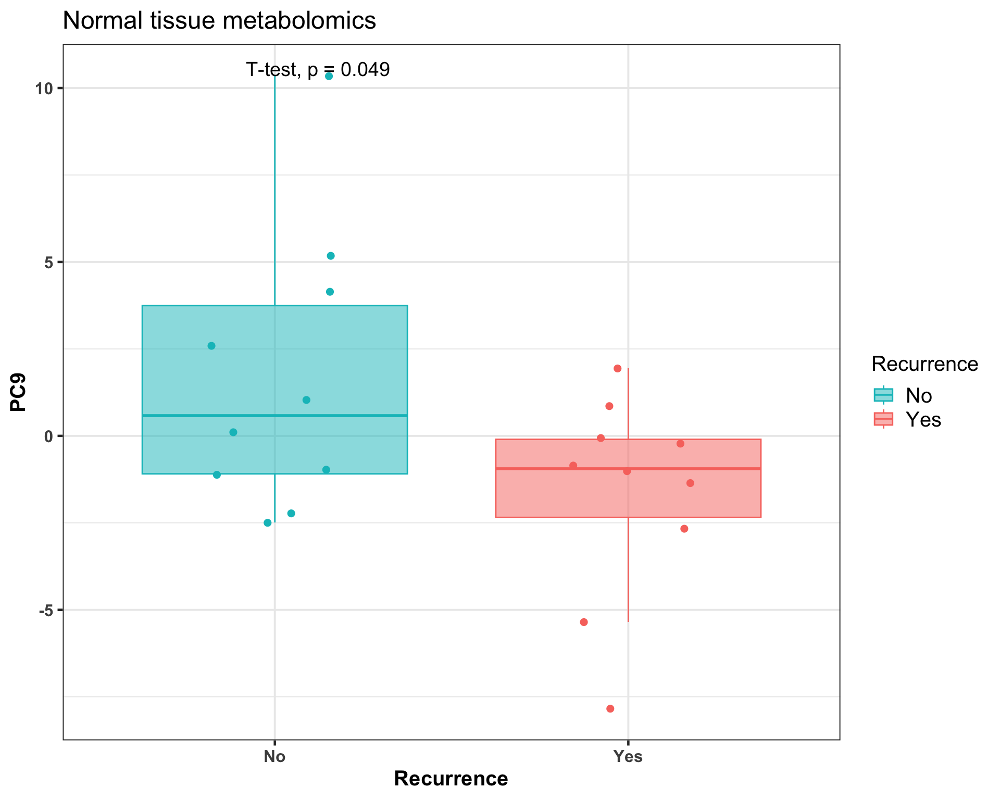
Difference in tissue conditions
Tumor matrix - Normal matrix
Display significant associations between features (Var1) and cancer recurrence (Var2) and observe molecular signatures in input data through heatmap. Note that features in heatmap are ordered by their t-statistics.
# Subset Tumor samples
smpTumorIdx <- which(colData(metaTissueNorm)$Condition == 'Tumor')
metaTumor <- metaTissueNorm[, smpTumorIdx]
# Subset Normal samples
smpNormalIdx <- which(colData(metaTissueNorm)$Condition == 'Normal')
metaNormal <- metaTissueNorm[, smpNormalIdx]
# Modify sample names for matching two datasets
colnames(metaTumor) <- stringr::str_remove(colnames(metaTumor), '_TG')
colnames(metaNormal) <- stringr::str_remove(colnames(metaNormal), '_NG')
# Retrieve data matrix
metaTumorMat <- SummarizedExperiment::assay(metaTumor)
metaNormalMat <- SummarizedExperiment::assay(metaNormal)
# Subtract follow-up matrix by baseline matrix
if (identical(colnames(metaTumorMat), colnames(metaNormalMat)) &
identical(rownames(metaTumorMat), rownames(metaNormalMat))) {
metaDiffMat <- metaTumorMat - metaNormalMat
} else {
print('Align samples or features first.')
}
# Retrieve samples metadata for creating SE object
colAnno <- dplyr::select(as.data.frame(colData(metaTumor)), Patient, Recurrence)
rowAnno <- as.data.frame(rowData(metaTumor))
metaDiff <- SummarizedExperiment(assays = metaDiffMat, colData = colAnno,
rowData = rowAnno)
# Perform analysis
metaTissueDiffRes <- doSOA(metaDiff, meta_var = 'Recurrence', num_PCfeats = 30)
datMat <- metaTissueDiffRes$data
smpAnno <- metaTissueDiffRes$smpMetadata
tFeatSigRes <- metaTissueDiffRes$tFeatSigRes
tPCASigRes <- metaTissueDiffRes$tPCASigRes
pcaRes <- metaTissueDiffRes$pcaRes
pcTab <- metaTissueDiffRes$pcTab
pcTopFeatTab <- metaTissueDiffRes$pcTopFeatTab
# Display features that can significantly separate recurrence and non-recurrence
# patients
tFeatSigRes Var1 Var2 pVal pValAdj Stat Test
1 TG(17:1_34:3) Recurrence 0.02194023 0.9986395 -2.507994 T-test
2 TG(18:3_33:2) Recurrence 0.03407567 0.9986395 -2.293465 T-test
3 Trigonelline Recurrence 0.03516918 0.9986395 -2.277825 T-test
4 HexCer(d18:2/18:0) Recurrence 0.04591793 0.9986395 2.144223 T-test# Plot molecular signatures in input data
# Order features according to t-statistics
featOrder <- dplyr::arrange(tFeatSigRes, dplyr::desc(Stat))$Var1
# Arrange samples to make same groups in same clusters
smpOrder <- c(which(smpAnno$Recurrence == 'No'),
which(smpAnno$Recurrence == 'Yes'))
# Prepare recurrence table for annotating samples in heatmap
smpRecur <- dplyr::select(smpAnno, Sample, Recurrence) %>%
tibble::column_to_rownames('Sample')
pheatmap::pheatmap(datMat[featOrder, smpOrder],
annotation_col = smpRecur,
color = colorRampPalette(c('navy', 'white', 'red'))(100),
cluster_rows = F, cluster_cols = F, show_rownames = T,
scale = 'row', main = 'Differential tissue metabolomics')
| Version | Author | Date |
|---|---|---|
| 0bbd8eb | LiaoQianWu | 2023-04-25 |
Visualize data of those 4 significant features
# Visualize data of those 4 significant features
topSigFeats <- tFeatSigRes$Var1[1:4]
topSigFeatData <- tibble::as_tibble(datMat[topSigFeats,], rownames = 'Feature') %>%
tidyr::pivot_longer(cols = -'Feature',
names_to = 'Sample', values_to = 'Abundance') %>%
dplyr::mutate(Feature = factor(Feature, levels = topSigFeats)) %>%
dplyr::left_join(smpAnno, by = 'Sample')
ggplot(topSigFeatData, aes(x=Recurrence, y=Abundance, col=Recurrence, fill=Recurrence)) +
geom_boxplot(alpha = 0.5, outlier.shape = NA) +
geom_jitter(position = position_jitter(0.2), size = 2, show.legend = F) +
scale_color_manual(values=c('#00BFC4', '#F8766D')) +
scale_fill_manual(values=c('#00BFC4', '#F8766D')) +
facet_wrap(vars(Feature), scales = 'free') +
ggpubr::stat_compare_means(method = 't.test', paired = F,
method.args = list(var.equal = T),
show.legend = F) +
th + theme(strip.text = element_text(size = 13, face = 'bold'))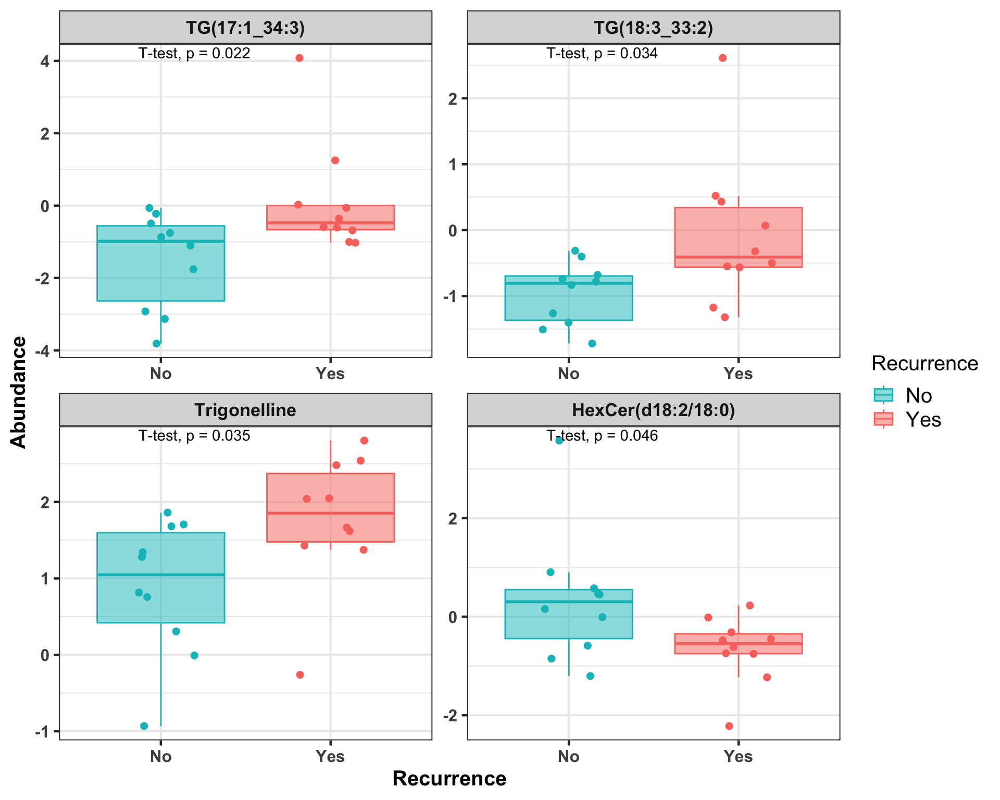
Display significant associations between PCs (Var1) and cancer recurrence (Var2)
# Display PCs that can significantly separate recurrence and non-recurrence
# patients
tPCASigRes Var1 Var2 pVal pValAdj Stat Test
1 PC18 Recurrence 0.001641969 0.03283938 -3.699094 T-test# Display proportion of total variance captured by all PCs explained by each PC
varExplained <- pcaRes$sdev^2 / sum(pcaRes$sdev^2)
PC <- paste0('PC', seq(length(varExplained)))
varTab <- data.frame(PC = factor(PC, levels = PC),
Var_explained = varExplained)
ggplot(varTab, aes(x=PC, y=Var_explained*100)) +
geom_col() +
labs(x = '', y = 'Variance explained (%)',
title = 'Differential tissue metabolomics') +
th + theme(axis.text.x = element_text(angle = 90, hjust = 1, vjust = 0.5))
| Version | Author | Date |
|---|---|---|
| 0bbd8eb | LiaoQianWu | 2023-04-25 |
PC18 potentially separates recurrence and non-recurrence patients.
# Visualize PCs
ggplot(pcTab, aes(x=Recurrence, y=PC18, col=Recurrence, fill=Recurrence)) +
geom_boxplot(alpha = 0.5, outlier.shape = NA) +
geom_jitter(position = position_jitter(0.2), size = 2, show.legend = F) +
# geom_text_repel(aes(label=Sample), size = 4, show.legend = F) +
labs(title = 'Differential tissue metabolomics') +
scale_color_manual(values=c('#00BFC4', '#F8766D')) +
scale_fill_manual(values=c('#00BFC4', '#F8766D')) +
ggpubr::stat_compare_means(method = 't.test', paired = F, size = 5,
method.args = list(var.equal = T),
show.legend = F) +
th
| Version | Author | Date |
|---|---|---|
| 0bbd8eb | LiaoQianWu | 2023-04-25 |
Plot molecular signatures captured by PC18 in input data. We took a look at top 10 features with highest loadings and observed metabolite levels of these top features through heatmap. Note that features in heatmap are ordered by their loadings.
# Plot molecular signatures in input data
# Extract top features with highest loadings
topFeats <- pcTopFeatTab$PC18$Feature[1:10]
topFeatsIdx <- sapply(topFeats, function(feat) {which(rownames(datMat) == feat)})
pheatmap::pheatmap(datMat[topFeatsIdx, smpOrder],
annotation_col = smpRecur,
color = colorRampPalette(c('navy', 'white', 'red'))(100),
cluster_rows = F, cluster_cols = F,
scale = 'row', main = 'Differential tissue metabolomics - PC18')
| Version | Author | Date |
|---|---|---|
| 0bbd8eb | LiaoQianWu | 2023-04-25 |
Display top features that build the PC18
# Display top features with highest loadings of PC of interest
pcTopFeatTab$PC18 Feature Loading
1 DG(18:3_20:2) 0.17137681
2 TG(20:0_34:1) 0.15156766
3 TG(17:1_34:3) 0.14605092
4 TG(20:1_32:2) 0.14113497
5 C7-DC 0.14086351
6 CE(22:0) 0.12428534
7 C5 0.12413182
8 DG-O(16:0_18:1) 0.12247971
9 DG(18:2_20:4) 0.12157666
10 TG(20:1_24:3) 0.11905398
11 TG(20:4_30:0) 0.11639733
12 C3 0.11511993
13 CE(22:1) 0.11500718
14 DG(18:2_18:3) 0.11298746
15 TG(16:1_33:1) 0.11181076
16 TG(17:2_38:6) 0.11162958
17 PC aa C38:1 0.11086885
18 TG(18:3_35:2) 0.11052361
19 C8 0.10895373
20 DG(14:0_18:2) 0.10761629
21 TG(18:0_30:1) 0.10718785
22 Cer(d18:0/26:1(OH)) 0.10564042
23 CE(15:0) 0.10331915
24 DG(14:1_18:1) 0.10263434
25 TG(16:0_36:6) 0.10065923
26 TG(16:0_28:2) 0.09608280
27 DG(18:2_20:0) 0.09410831
28 DG(18:3_18:3) 0.09264208
29 C10 0.09262359
30 C10:2 0.09234006Plasma Proteomics
As described in Plasma Metabolomics section, we analyzed Baseline and
Follow-up samples separately.
Note that each patient has two samples that have same patient annotations, so association test results may have additive effects. Besides, some patient annotations are only meaningful at Baseline time point, such as diagnosis ages, pathological stages, etc.
# Load normalized data
proPlasmaNorm <- readRDS('./data/AG_Krijgsveld/proPlasmaNorm.rds')
# Prepare protein-gene table for changing protein names to gene names
featInfo <- tibble::as_tibble(rowData(proPlasmaNorm), rownames = 'PG.Groups')
# Manually modify metadata information (time point, smoking, metastasis)
tmp_metadata <- as.data.frame(colData(proPlasmaNorm)) %>%
dplyr::mutate(
TimePoint = dplyr::case_when(
Condition == 'Baseline' ~ 'Baseline',
Condition != 'Baseline' ~ '2 years later'
),
Metastasis = case_when(
Stage == 'IIB' ~ 'Yes',
Stage != 'IIB' ~ 'No'
))
colData(proPlasmaNorm)['TimePoint'] <- tmp_metadata$TimePoint
colData(proPlasmaNorm)['Metastasis'] <- tmp_metadata$Metastasis
# Perform analysis
proPlasmaRes <- doSOA(proPlasmaNorm, meta_var = c('Recurrence', 'Gender', 'Age',
'Condition', 'TimePoint', 'Smoking',
'Stage', 'Metastasis'),
do_onlyPCA = T)
tPCASigRes <- proPlasmaRes$tPCASigRes
pcaRes <- proPlasmaRes$pcaRes
pcTab <- proPlasmaRes$pcTab
# Display PCs of interest
tPCASigRes Var1 Var2 pVal pValAdj Stat Test
1 PC1 Metastasis 0.0001896552 0.03185826 -4.1334900 T-test
2 PC5 Age 0.0002440088 0.03185826 0.5490113 Correlation
3 PC1 Stage 0.0002986712 0.03185826 10.1881024 ANOVA
4 PC27 Condition 0.0011883267 0.09506614 8.1246130 ANOVA
5 PC26 TimePoint 0.0057659874 0.36902320 -2.9260209 T-test
6 PC7 Gender 0.0081604517 0.38105900 -2.7916838 T-test
7 PC12 Gender 0.0089555595 0.38105900 -2.7551822 T-test
8 PC14 Recurrence 0.0095264751 0.38105900 2.7307853 T-test
9 PC4 Smoking 0.0128593592 0.45722166 4.9086350 ANOVA
10 PC26 Condition 0.0199085576 0.52106140 4.3620686 ANOVA
11 PC5 Gender 0.0203411091 0.52106140 2.4214497 T-test
12 PC12 Smoking 0.0204604494 0.52106140 4.3283021 ANOVA
13 PC27 TimePoint 0.0211681195 0.52106140 -2.4046317 T-test
14 PC7 Smoking 0.0232232089 0.53081620 4.1725442 ANOVA
15 PC4 Metastasis 0.0258258005 0.55095041 -2.3197344 T-test
16 PC4 Stage 0.0280430140 0.56086028 3.9425963 ANOVA
17 PC15 Smoking 0.0364708689 0.62027713 3.6260745 ANOVA
18 PC18 Recurrence 0.0367126065 0.62027713 2.1652591 T-test
19 PC10 Smoking 0.0368289544 0.62027713 3.6143921 ANOVA
20 PC12 Metastasis 0.0425610583 0.64890311 2.0985078 T-test
21 PC10 Recurrence 0.0425842664 0.64890311 -2.0982594 T-testggplot(pcTab, aes(x=PC26, y=PC27, col=TimePoint, shape=Recurrence, group=Patient)) +
geom_point(size = 3) +
labs(title = 'Plasma proteomics') +
geom_line(col = 'grey50', linetype = 'dashed') +
scale_color_discrete(name = 'Time point',
labels = c('Baseline', '2 years later')) +
th
| Version | Author | Date |
|---|---|---|
| 0bbd8eb | LiaoQianWu | 2023-04-25 |
ggplot(pcTab, aes(x=Recurrence, y=PC14, col=Recurrence, fill=Recurrence)) +
geom_boxplot(alpha = 0.5, outlier.shape = NA) +
geom_jitter(position = position_jitter(0.2), size = 2, show.legend = F) +
labs(title = 'Plasma proteomics') +
scale_color_manual(values=c('#00BFC4', '#F8766D')) +
scale_fill_manual(values=c('#00BFC4', '#F8766D')) +
ggpubr::stat_compare_means(method = 't.test', paired = F, size = 5,
method.args = list(var.equal = T),
show.legend = F) +
th
| Version | Author | Date |
|---|---|---|
| 0bbd8eb | LiaoQianWu | 2023-04-25 |
# Display proportion of total variance captured by all PCs explained by each PC
varExplained <- pcaRes$sdev^2 / sum(pcaRes$sdev^2)
PC <- paste0('PC', seq(length(varExplained)))
varTab <- data.frame(PC = factor(PC, levels = PC),
Var_explained = varExplained)
ggplot(varTab, aes(x=PC, y=Var_explained*100)) +
geom_col() +
labs(x = '', y = 'Variance explained (%)', title = 'Plasma proteomics') +
th + theme(axis.text.x = element_text(angle = 90, hjust = 1, vjust = 0.5))
| Version | Author | Date |
|---|---|---|
| 0bbd8eb | LiaoQianWu | 2023-04-25 |
Baseline samples
Display significant associations between learned PCs (Var1) and metadata variables (Var2)
# Subset baseline samples
smpBaseIdx <- which(colData(proPlasmaNorm)$Condition == 'Baseline')
proBase <- proPlasmaNorm[, smpBaseIdx]
# Display significant associations between PCs and metadata variables
proBaseAssoRes <- doSOA(proBase, meta_var = c('Recurrence', 'Gender', 'Age',
'Smoking', 'Stage', 'Metastasis'),
do_onlyPCA = T)
proBaseAssoRes$tPCASigRes Var1 Var2 pVal pValAdj Stat Test
1 PC20 Smoking 0.001185056 0.1422068 10.279539 ANOVA
2 PC20 Gender 0.003075588 0.1845353 -3.416702 T-test
3 PC1 Stage 0.008673281 0.3469313 6.358863 ANOVA
4 PC1 Metastasis 0.014124479 0.4153895 -2.717241 T-test
5 PC12 Smoking 0.017420614 0.4153895 5.188398 ANOVA
6 PC8 Metastasis 0.023305247 0.4153895 2.478934 T-test
7 PC8 Stage 0.026518614 0.4153895 4.528174 ANOVA
8 PC13 Smoking 0.028820898 0.4153895 4.401191 ANOVA
9 PC11 Recurrence 0.037323353 0.4153895 -2.248287 T-test
10 PC20 Recurrence 0.037871837 0.4153895 -2.241018 T-test
11 PC12 Gender 0.039123000 0.4153895 -2.224794 T-test
12 PC13 Recurrence 0.041538954 0.4153895 2.194772 T-testDisplay significant associations between features (Var1) and cancer recurrence (Var2) and observe molecular signatures in input data through heatmap. Note that features in heatmap are ordered by their t-statistics.
# Perform analysis
proBaseRes <- doSOA(proBase, meta_var = 'Recurrence', num_PCfeats = 30)
datMat <- proBaseRes$data
smpAnno <- proBaseRes$smpMetadata
tFeatSigRes <- proBaseRes$tFeatSigRes
tPCASigRes <- proBaseRes$tPCASigRes
pcaRes <- proBaseRes$pcaRes
pcTab <- proBaseRes$pcTab
pcTopFeatTab <- proBaseRes$pcTopFeatTab
# Display features that can significantly separate recurrence and non-recurrence
# patients
dplyr::mutate(tFeatSigRes, Gene = plyr::mapvalues(Var1,
from = featInfo$PG.Groups,
to = featInfo$PG.Genes,
warn_missing = F)) %>%
dplyr::select(-Test) Var1 Var2 pVal pValAdj Stat Gene
1 A0A0G2JMI3 Recurrence 0.0004156624 0.1543875 4.316448 IGHV1-69-2
2 Q08380 Recurrence 0.0007098277 0.1543875 -4.075537 LGALS3BP
3 P01833 Recurrence 0.0012217736 0.1771572 -3.831763 PIGR
4 A0A0B4J1U3 Recurrence 0.0021974424 0.2389719 3.568155 IGLV1-36
5 A0A0C4DH31 Recurrence 0.0030166864 0.2624517 3.425428 IGHV1-18
6 P22626 Recurrence 0.0062404968 0.4524360 3.095496 HNRNPA2B1
7 P06331 Recurrence 0.0136729002 0.7428023 -2.732505 IGHV4-34
8 P0C0L5 Recurrence 0.0157309338 0.7428023 2.666479 C4B
9 P60174 Recurrence 0.0168467259 0.7428023 2.634053 TPI1
10 A0A075B6Q5 Recurrence 0.0212719174 0.7428023 -2.522849 IGHV3-64
11 A0A0B4J2H0 Recurrence 0.0231713291 0.7428023 2.481713 IGHV1-69D
12 O00391 Recurrence 0.0235655228 0.7428023 -2.473576 QSOX1
13 P10809 Recurrence 0.0238210599 0.7428023 2.468369 HSPD1
14 Q96PD5 Recurrence 0.0244083903 0.7428023 -2.456597 PGLYRP2
15 P08865 Recurrence 0.0291423003 0.7428023 2.370383 RPSA
16 P08727 Recurrence 0.0292038163 0.7428023 2.369351 KRT19
17 P0DP01 Recurrence 0.0363504725 0.7428023 2.261427 IGHV1-8
18 P06748 Recurrence 0.0393574879 0.7428023 2.221806 NPM1
19 P02745 Recurrence 0.0405436993 0.7428023 -2.206940 C1QA
20 P62805 Recurrence 0.0408002947 0.7428023 2.203776 H4C1
21 P02746 Recurrence 0.0415452657 0.7428023 -2.194695 C1QB
22 Q8N257 Recurrence 0.0436647940 0.7428023 2.169652 H2BU1
23 P35030 Recurrence 0.0437199457 0.7428023 2.169016 PRSS3
24 P40197 Recurrence 0.0450651657 0.7428023 -2.153710 GP5
25 P0DMV8;P0DMV9 Recurrence 0.0479326679 0.7428023 2.122431 HSPA1A;HSPA1B
26 P01764 Recurrence 0.0479792654 0.7428023 2.121937 IGHV3-23
27 P04792 Recurrence 0.0499458355 0.7428023 2.101475 HSPB1# Plot molecular signatures in input data
# Order features according to t-statistics
featOrder <- dplyr::arrange(tFeatSigRes, dplyr::desc(Stat))$Var1
# Arrange samples to make same groups in same clusters
smpOrder <- c(which(smpAnno$Recurrence == 'No'),
which(smpAnno$Recurrence == 'Yes'))
# Prepare recurrence table for annotating samples in heatmap
smpRecur <- dplyr::select(smpAnno, Sample, Recurrence) %>%
tibble::column_to_rownames('Sample')
# Change protein names to gene names
datMatSub <- datMat[featOrder, smpOrder]
rownames(datMatSub) <- plyr::mapvalues(rownames(datMatSub),
from = featInfo$PG.Groups,
to = featInfo$PG.Genes,
warn_missing = F)
pheatmap::pheatmap(datMatSub,
annotation_col = smpRecur,
color = colorRampPalette(c('navy', 'white', 'red'))(100),
cluster_rows = F, cluster_cols = F, show_rownames = T,
scale = 'row', main = 'Baseline plasma proteomics')
| Version | Author | Date |
|---|---|---|
| 0bbd8eb | LiaoQianWu | 2023-04-25 |
# Visualize data of top 6 significant features
topSigFeats <- tFeatSigRes$Var1[1:6]
topSigFeatData <- tibble::as_tibble(datMat[topSigFeats,], rownames = 'Feature') %>%
tidyr::pivot_longer(cols = -'Feature',
names_to = 'Sample', values_to = 'Abundance') %>%
dplyr::mutate(Feature = plyr::mapvalues(Feature,
from = featInfo$PG.Groups,
to = featInfo$PG.Genes,
warn_missing = F),
Feature = factor(Feature, levels = plyr::mapvalues(topSigFeats,
from = featInfo$PG.Groups,
to = featInfo$PG.Genes,
warn_missing = F))) %>%
dplyr::left_join(smpAnno, by = 'Sample')
ggplot(topSigFeatData, aes(x=Recurrence, y=Abundance, col=Recurrence, fill=Recurrence)) +
geom_boxplot(alpha = 0.5, outlier.shape = NA) +
geom_jitter(position = position_jitter(0.2), size = 2, show.legend = F) +
scale_color_manual(values=c('#00BFC4', '#F8766D')) +
scale_fill_manual(values=c('#00BFC4', '#F8766D')) +
facet_wrap(vars(Feature), scales = 'free') +
ggpubr::stat_compare_means(method = 't.test', paired = F,
method.args = list(var.equal = T),
show.legend = F) +
th + theme(strip.text = element_text(size = 13, face = 'bold'))
| Version | Author | Date |
|---|---|---|
| 0bbd8eb | LiaoQianWu | 2023-04-25 |
Display significant associations between PCs (Var1) and cancer recurrence (Var2)
# Display PCs that can significantly separate recurrence and non-recurrence
# patients
tPCASigRes Var1 Var2 pVal pValAdj Stat Test
1 PC11 Recurrence 0.03732335 0.2769264 -2.248287 T-test
2 PC20 Recurrence 0.03787184 0.2769264 -2.241018 T-test
3 PC13 Recurrence 0.04153895 0.2769264 2.194772 T-test# Display proportion of total variance captured by all PCs explained by each PC
varExplained <- pcaRes$sdev^2 / sum(pcaRes$sdev^2)
PC <- paste0('PC', seq(length(varExplained)))
varTab <- data.frame(PC = factor(PC, levels = PC),
Var_explained = varExplained)
ggplot(varTab, aes(x=PC, y=Var_explained*100)) +
geom_col() +
labs(x = '', y = 'Variance explained (%)',
title = 'Baseline plasma proteomics') +
th + theme(axis.text.x = element_text(angle = 90, hjust = 1, vjust = 0.5))
| Version | Author | Date |
|---|---|---|
| 0bbd8eb | LiaoQianWu | 2023-04-25 |
# PC11
# Visualize PCs
ggplot(pcTab, aes(x=Recurrence, y=PC11, col=Recurrence, fill=Recurrence)) +
geom_boxplot(alpha = 0.5, outlier.shape = NA) +
geom_jitter(position = position_jitter(0.2), size = 2, show.legend = F) +
# geom_text_repel(aes(label=Sample), size = 4, show.legend = F) +
labs(title = 'Baseline plasma proteomics') +
scale_color_manual(values=c('#00BFC4', '#F8766D')) +
scale_fill_manual(values=c('#00BFC4', '#F8766D')) +
ggpubr::stat_compare_means(method = 't.test', paired = F, size = 5,
method.args = list(var.equal = T),
show.legend = F) +
th
| Version | Author | Date |
|---|---|---|
| 0bbd8eb | LiaoQianWu | 2023-04-25 |
# Plot molecular signatures in input data
# Extract top features with highest loadings
topFeats <- pcTopFeatTab$PC11$Feature[1:20]
topFeatsIdx <- sapply(topFeats, function(feat) {which(rownames(datMat) == feat)})
# Change protein names to gene names
datMatSub <- datMat[topFeatsIdx, smpOrder]
rownames(datMatSub) <- plyr::mapvalues(rownames(datMatSub),
from = featInfo$PG.Groups,
to = featInfo$PG.Genes,
warn_missing = F)
pheatmap::pheatmap(datMatSub,
annotation_col = smpRecur,
color = colorRampPalette(c('navy', 'white', 'red'))(100),
cluster_rows = F, cluster_cols = F,
scale = 'row', main = 'Baseline plasma proteomics - PC11')
| Version | Author | Date |
|---|---|---|
| 0bbd8eb | LiaoQianWu | 2023-04-25 |
# Display top features with highest loadings of PC of interest
dplyr::mutate(pcTopFeatTab$PC11, Gene = plyr::mapvalues(Feature,
from = featInfo$PG.Groups,
to = featInfo$PG.Genes,
warn_missing = F)) Feature Loading Gene
1 A0A0G2JMI3 0.24985749 IGHV1-69-2
2 P12110 0.20719066 COL6A2
3 P01704 0.19543585 IGLV2-14
4 P01772 0.18555743 IGHV3-33
5 P02788 0.18469386 LTF
6 A0A075B6J9 0.17483440 IGLV2-18
7 A0A0B4J1Y8 0.17239803 IGLV9-49
8 P0DJI8 0.15381027 SAA1
9 Q14667 0.14644749 KIAA0100
10 P01705 0.13893569 IGLV2-23
11 P13645 0.11953194 KRT10
12 Q9Y6R7 0.11786356 FCGBP
13 Q15404 0.11668574 RSU1
14 P61026 0.11650594 RAB10
15 A0A0C4DH39 0.11306566 IGHV1-58
16 P09172 0.11102853 DBH
17 A0A0B4J1U3 0.10748606 IGLV1-36
18 P13727 0.10426197 PRG2
19 A0A075B6I4 0.10173111 IGLV10-54
20 A0A0B4J2H0 0.09968231 IGHV1-69D
21 Q13201 0.09947051 MMRN1
22 P02751 0.09787257 FN1
23 P07355 0.09746921 ANXA2
24 P01861 0.09643630 IGHG4
25 P06310 0.09391512 IGKV2-30
26 A0A0G2JS06 0.09384160 IGLV5-39
27 A0A075B6K4 0.09365570 IGLV3-10
28 P02741 0.09286585 CRP
29 P01706 0.09151497 IGLV2-11
30 P01764 0.09083255 IGHV3-23# PC13
# Visualize PCs
ggplot(pcTab, aes(x=Recurrence, y=PC13, col=Recurrence, fill=Recurrence)) +
geom_boxplot(alpha = 0.5, outlier.shape = NA) +
geom_jitter(position = position_jitter(0.2), size = 2, show.legend = F) +
# geom_text_repel(aes(label=Sample), size = 4, show.legend = F) +
labs(title = 'Baseline plasma proteomics') +
scale_color_manual(values=c('#00BFC4', '#F8766D')) +
scale_fill_manual(values=c('#00BFC4', '#F8766D')) +
ggpubr::stat_compare_means(method = 't.test', paired = F, size = 5,
method.args = list(var.equal = T),
show.legend = F) +
th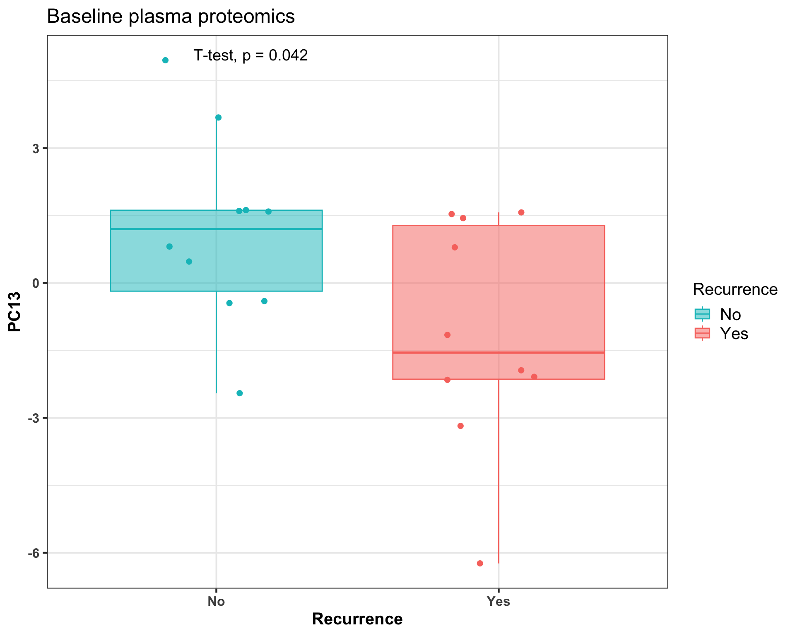
# Plot molecular signatures in input data
# Extract top features with highest loadings
topFeats <- pcTopFeatTab$PC13$Feature[1:20]
topFeatsIdx <- sapply(topFeats, function(feat) {which(rownames(datMat) == feat)})
# Change protein names to gene names
datMatSub <- datMat[topFeatsIdx, smpOrder]
rownames(datMatSub) <- plyr::mapvalues(rownames(datMatSub),
from = featInfo$PG.Groups,
to = featInfo$PG.Genes,
warn_missing = F)
pheatmap::pheatmap(datMatSub,
annotation_col = smpRecur,
color = colorRampPalette(c('navy', 'white', 'red'))(100),
cluster_rows = F, cluster_cols = F,
scale = 'row', main = 'Baseline plasma proteomics - PC13')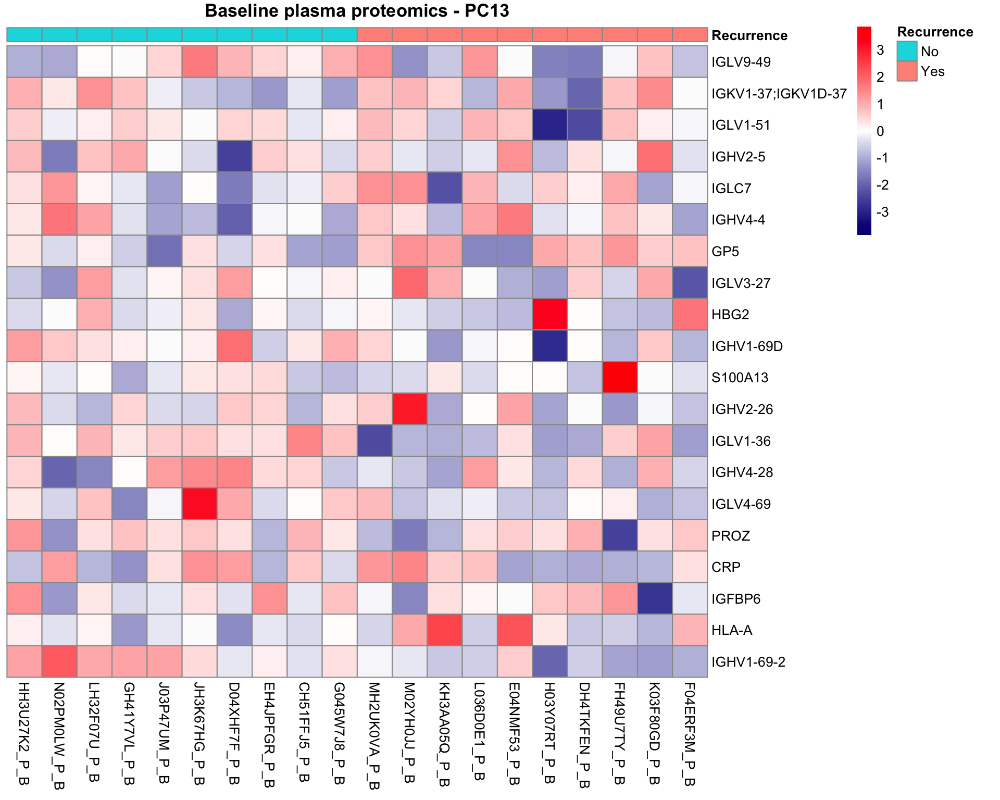
# Display top features with highest loadings of PC of interest
dplyr::mutate(pcTopFeatTab$PC13, Gene = plyr::mapvalues(Feature,
from = featInfo$PG.Groups,
to = featInfo$PG.Genes,
warn_missing = F)) Feature Loading Gene
1 A0A0B4J1Y8 0.28185126 IGLV9-49
2 A0A075B6S9;P0DSN7 0.21246339 IGKV1-37;IGKV1D-37
3 P01701 0.19405864 IGLV1-51
4 P01817 0.19004547 IGHV2-5
5 A0M8Q6 0.18138683 IGLC7
6 A0A075B6R2 0.15088162 IGHV4-4
7 P40197 0.14905687 GP5
8 P01718 0.14070829 IGLV3-27
9 P69892 0.12110076 HBG2
10 A0A0B4J2H0 0.12061512 IGHV1-69D
11 Q99584 0.12014741 S100A13
12 A0A0B4J1V2 0.11302798 IGHV2-26
13 A0A0B4J1U3 0.11010069 IGLV1-36
14 A0A0C4DH34 0.10956360 IGHV4-28
15 A0A075B6H9 0.10692747 IGLV4-69
16 P22891 0.10493922 PROZ
17 P02741 0.10360699 CRP
18 P24592 0.09853841 IGFBP6
19 P04439 0.09837370 HLA-A
20 A0A0G2JMI3 0.09540024 IGHV1-69-2
21 A0A075B6R9;A0A0C4DH68 0.09518382 IGKV2D-24;IGKV2-24
22 A0A0C4DH55 0.09442313 IGKV3D-7
23 P09172 0.09358080 DBH
24 A0A075B6I9 0.09304134 IGLV7-46
25 Q15166 0.09248082 PON3
26 P08637 0.09146900 FCGR3A
27 P01834 0.08770580 IGKC
28 P01833 0.08655527 PIGR
29 Q6UWP8 0.08540960 SBSN
30 Q04695 0.08392753 KRT17Follow-up samples
Display significant associations between learned PCs (Var1) and metadata variables (Var2)
# Subset follow-up samples
smpFoloIdx <- which(colData(proPlasmaNorm)$Condition != 'Baseline')
proFolo <- proPlasmaNorm[, smpFoloIdx]
# Display significant associations between PCs and metadata variables
proFoloAssoRes <- doSOA(proFolo, meta_var = c('Recurrence', 'Gender'),
do_onlyPCA = T)
proFoloAssoRes$tPCASigRes Var1 Var2 pVal pValAdj Stat Test
1 PC4 Gender 0.02453422 0.8123172 2.454110 T-test
2 PC9 Recurrence 0.04396432 0.8123172 -2.166204 T-testDisplay significant associations between features (Var1) and cancer recurrence (Var2) and observe molecular signatures in input data through heatmap. Note that features in heatmap are ordered by their t-statistics.
# Perform analysis
proFoloRes <- doSOA(proFolo, meta_var = 'Recurrence', num_PCfeats = 30)
datMat <- proFoloRes$data
smpAnno <- proFoloRes$smpMetadata
tFeatSigRes <- proFoloRes$tFeatSigRes
tPCASigRes <- proFoloRes$tPCASigRes
pcaRes <- proFoloRes$pcaRes
pcTab <- proFoloRes$pcTab
pcTopFeatTab <- proFoloRes$pcTopFeatTab
# Display features that can significantly separate recurrence and non-recurrence
# patients
dplyr::mutate(tFeatSigRes, Gene = plyr::mapvalues(Var1,
from = featInfo$PG.Groups,
to = featInfo$PG.Genes,
warn_missing = F)) Var1 Var2 pVal pValAdj Stat Test Gene
1 Q08380 Recurrence 0.0007077218 0.3078590 -4.076872 T-test LGALS3BP
2 A0A0G2JMI3 Recurrence 0.0045513361 0.7461316 3.239309 T-test IGHV1-69-2
3 P00736 Recurrence 0.0151039815 0.7461316 -2.685674 T-test C1R
4 P04004 Recurrence 0.0201241217 0.7461316 -2.549421 T-test VTN
5 P31146 Recurrence 0.0234009353 0.7461316 2.476958 T-test CORO1A
6 P07737 Recurrence 0.0243673097 0.7461316 2.457412 T-test PFN1
7 A0A075B6Q5 Recurrence 0.0252744047 0.7461316 -2.439716 T-test IGHV3-64
8 P0DP01 Recurrence 0.0259393814 0.7461316 2.427119 T-test IGHV1-8
9 P0C0L5 Recurrence 0.0266978181 0.7461316 2.413115 T-test C4B
10 P23528 Recurrence 0.0269542055 0.7461316 2.408465 T-test CFL1
11 A0A0J9YXX1 Recurrence 0.0318556679 0.7461316 -2.326702 T-test IGHV5-10-1
12 P63104 Recurrence 0.0325473986 0.7461316 2.316121 T-test YWHAZ
13 P48740 Recurrence 0.0332844291 0.7461316 -2.305074 T-test MASP1
14 P50552 Recurrence 0.0337435885 0.7461316 2.298306 T-test VASP
15 P62328 Recurrence 0.0347412288 0.7461316 2.283891 T-test TMSB4X
16 P27105 Recurrence 0.0362204337 0.7461316 2.263207 T-test STOM
17 Q96PD5 Recurrence 0.0364949743 0.7461316 -2.259455 T-test PGLYRP2
18 P02786 Recurrence 0.0371579041 0.7461316 -2.250499 T-test TFRC
19 Q13418 Recurrence 0.0401483557 0.7461316 2.211849 T-test ILK
20 A0A0B4J2H0 Recurrence 0.0442013391 0.7461316 2.163490 T-test IGHV1-69D
21 P07195 Recurrence 0.0452225832 0.7461316 2.151947 T-test LDHB# Plot molecular signatures in input data
# Order features according to t-statistics
featOrder <- dplyr::arrange(tFeatSigRes, dplyr::desc(Stat))$Var1
# Arrange samples to make same groups in same clusters
smpOrder <- c(which(smpAnno$Recurrence == 'No'),
which(smpAnno$Recurrence == 'Yes'))
# Prepare recurrence table for annotating samples in heatmap
smpRecur <- dplyr::select(smpAnno, Sample, Recurrence) %>%
tibble::column_to_rownames('Sample')
# Change protein names to gene names
datMatSub <- datMat[featOrder, smpOrder]
rownames(datMatSub) <- plyr::mapvalues(rownames(datMatSub),
from = featInfo$PG.Groups,
to = featInfo$PG.Genes,
warn_missing = F)
pheatmap::pheatmap(datMatSub,
annotation_col = smpRecur,
color = colorRampPalette(c('navy', 'white', 'red'))(100),
cluster_rows = F, cluster_cols = F, show_rownames = T,
scale = 'row', main = 'Follow-up plasma proteomics')
| Version | Author | Date |
|---|---|---|
| 0bbd8eb | LiaoQianWu | 2023-04-25 |
# Visualize data of top 6 significant features
topSigFeats <- tFeatSigRes$Var1[1:6]
topSigFeatData <- tibble::as_tibble(datMat[topSigFeats,], rownames = 'Feature') %>%
tidyr::pivot_longer(cols = -'Feature',
names_to = 'Sample', values_to = 'Abundance') %>%
dplyr::mutate(Feature = plyr::mapvalues(Feature,
from = featInfo$PG.Groups,
to = featInfo$PG.Genes,
warn_missing = F),
Feature = factor(Feature, levels = plyr::mapvalues(topSigFeats,
from = featInfo$PG.Groups,
to = featInfo$PG.Genes,
warn_missing = F))) %>%
dplyr::left_join(smpAnno, by = 'Sample')
ggplot(topSigFeatData, aes(x=Recurrence, y=Abundance, col=Recurrence, fill=Recurrence)) +
geom_boxplot(alpha = 0.5, outlier.shape = NA) +
geom_jitter(position = position_jitter(0.2), size = 2, show.legend = F) +
scale_color_manual(values=c('#00BFC4', '#F8766D')) +
scale_fill_manual(values=c('#00BFC4', '#F8766D')) +
facet_wrap(vars(Feature), scales = 'free') +
ggpubr::stat_compare_means(method = 't.test', paired = F,
method.args = list(var.equal = T),
show.legend = F) +
th + theme(strip.text = element_text(size = 13, face = 'bold'))
| Version | Author | Date |
|---|---|---|
| 0bbd8eb | LiaoQianWu | 2023-04-25 |
Display significant associations between PCs (Var1) and cancer recurrence (Var2)
# Display PCs that can significantly separate recurrence and non-recurrence
# patients
tPCASigRes Var1 Var2 pVal pValAdj Stat Test
1 PC9 Recurrence 0.04396432 0.5858655 -2.166204 T-test# Display proportion of total variance captured by all PCs explained by each PC
varExplained <- pcaRes$sdev^2 / sum(pcaRes$sdev^2)
PC <- paste0('PC', seq(length(varExplained)))
varTab <- data.frame(PC = factor(PC, levels = PC),
Var_explained = varExplained)
ggplot(varTab, aes(x=PC, y=Var_explained*100)) +
geom_col() +
labs(x = '', y = 'Variance explained (%)',
title = 'Follow-up plasma proteomics') +
th + theme(axis.text.x = element_text(angle = 90, hjust = 1, vjust = 0.5))
| Version | Author | Date |
|---|---|---|
| 0bbd8eb | LiaoQianWu | 2023-04-25 |
# Visualize PCs
ggplot(pcTab, aes(x=Recurrence, y=PC9, col=Recurrence, fill=Recurrence)) +
geom_boxplot(alpha = 0.5, outlier.shape = NA) +
geom_jitter(position = position_jitter(0.2), size = 2, show.legend = F) +
labs(title = 'Follow-up plasma proteomics') +
scale_color_manual(values=c('#00BFC4', '#F8766D')) +
scale_fill_manual(values=c('#00BFC4', '#F8766D')) +
ggpubr::stat_compare_means(method = 't.test', paired = F, size = 5,
method.args = list(var.equal = T),
show.legend = F) +
th
| Version | Author | Date |
|---|---|---|
| 0bbd8eb | LiaoQianWu | 2023-04-25 |
# Plot molecular signatures in input data
# Extract top features with highest loadings
topFeats <- pcTopFeatTab$PC9$Feature[1:20]
topFeatsIdx <- sapply(topFeats, function(feat) {which(rownames(datMat) == feat)})
# Change protein names to gene names
datMatSub <- datMat[topFeatsIdx, smpOrder]
rownames(datMatSub) <- plyr::mapvalues(rownames(datMatSub),
from = featInfo$PG.Groups,
to = featInfo$PG.Genes,
warn_missing = F)
pheatmap::pheatmap(datMatSub,
annotation_col = smpRecur,
color = colorRampPalette(c('navy', 'white', 'red'))(100),
cluster_rows = F, cluster_cols = F,
scale = 'row', main = 'Follow-up plasma proteomics - PC9')
# Display top features with highest loadings of PC of interest
dplyr::mutate(pcTopFeatTab$PC9, Gene = plyr::mapvalues(Feature,
from = featInfo$PG.Groups,
to = featInfo$PG.Genes,
warn_missing = F)) Feature Loading Gene
1 A0A0G2JMI3 0.20363623 IGHV1-69-2
2 P0DP01 0.19089840 IGHV1-8
3 P01824 0.16624714 IGHV4-39
4 P20742 0.15210239 PZP
5 Q14CN4 0.14994193 KRT72
6 A0M8Q6 0.14416907 IGLC7
7 P01834 0.14279914 IGKC
8 P01714 0.14246358 IGLV3-19
9 A0A087WSZ0 0.13657922 IGKV1D-8
10 A0A087WSY4 0.13407855 IGHV4-30-2
11 P40197 0.12848877 GP5
12 P09172 0.12588497 DBH
13 P08519 0.12399735 LPA
14 P02741 0.12052483 CRP
15 P04264 0.11243925 KRT1
16 P13224 0.11125605 GP1BB
17 B1AJZ9 0.10670129 FHAD1
18 A0A0C4DH39 0.10667783 IGHV1-58
19 Q06033 0.10505205 ITIH3
20 P12110 0.10470743 COL6A2
21 P13645 0.10396717 KRT10
22 P02730 0.10101105 SLC4A1
23 Q16610 0.09913836 ECM1
24 A0A075B6K4 0.09746711 IGLV3-10
25 P35527 0.09432005 KRT9
26 P01718 0.09235285 IGLV3-27
27 P11226 0.09168297 MBL2
28 P49913 0.09027185 CAMP
29 A0A0A0MT89 0.08775276 IGKJ1
30 A0A0C4DH55 0.08667632 IGKV3D-7Changes in time course
Follow-up matrix - baseline matrix
Display significant associations between features (Var1) and cancer recurrence (Var2) and observe molecular signatures in input data through heatmap. Note that features in heatmap are ordered by their t-statistics.
# Subset baseline samples
smpBaseIdx <- which(colData(proPlasmaNorm)$Condition == 'Baseline')
proBase <- proPlasmaNorm[, smpBaseIdx]
# Subset follow-up samples
smpFoloIdx <- which(colData(proPlasmaNorm)$Condition != 'Baseline')
proFolo <- proPlasmaNorm[, smpFoloIdx]
# Modify sample names for matching two datasets
colnames(proBase) <- stringr::str_remove(colnames(proBase), '_P_B')
colnames(proFolo) <- stringr::str_remove(colnames(proFolo), '_P_R')
# Retrieve data matrix
proBaseMat <- SummarizedExperiment::assay(proBase)
proFoloMat <- SummarizedExperiment::assay(proFolo)
# Subtract follow-up matrix by baseline matrix
# if (identical(colnames(proBaseMat), colnames(proFoloMat)) &
# identical(rownames(proBaseMat), rownames(proFoloMat))) {
# proDiffMat <- proFoloMat - proBaseMat
# } else {
# print('Align samples or features first.')
# }
#### Manually align samples ####
if (identical(sort(colnames(proBaseMat)), sort(colnames(proFoloMat)))) {
smpOrder <- sort(colnames(proBaseMat))
# For computing difference between Tumor and Normal samples
proBaseMat <- proBaseMat[, smpOrder]
proFoloMat <- proFoloMat[, smpOrder]
proDiffMat <- proFoloMat - proBaseMat
# For Creating SE object
proBase <- proBase[, smpOrder]
proFolo <- proFolo[, smpOrder]
}
# Retrieve samples metadata for creating SE object
colAnno <- dplyr::select(as.data.frame(colData(proBase)), Patient, Recurrence)
rowAnno <- as.data.frame(rowData(proBase))
proDiff <- SummarizedExperiment(assays = proDiffMat, colData = colAnno,
rowData = rowAnno)
# Perform analysis
proPlasmaDiffRes <- doSOA(proDiff, meta_var = 'Recurrence', num_PCfeats = 30)
datMat <- proPlasmaDiffRes$data
smpAnno <- proPlasmaDiffRes$smpMetadata
tFeatSigRes <- proPlasmaDiffRes$tFeatSigRes
tPCASigRes <- proPlasmaDiffRes$tPCASigRes
pcaRes <- proPlasmaDiffRes$pcaRes
pcTab <- proPlasmaDiffRes$pcTab
pcTopFeatTab <- proPlasmaDiffRes$pcTopFeatTab
# Display features that can significantly separate recurrence and non-recurrence
# patients
dplyr::mutate(tFeatSigRes, Gene = plyr::mapvalues(Var1,
from = featInfo$PG.Groups,
to = featInfo$PG.Genes,
warn_missing = F)) Var1 Var2 pVal pValAdj Stat Test Gene
1 Q9H8L6 Recurrence 0.006616043 0.955986 -3.068754 T-test MMRN2
2 P01871 Recurrence 0.009977778 0.955986 2.879472 T-test IGHM
3 A0A0C4DH31 Recurrence 0.011147227 0.955986 -2.827975 T-test IGHV1-18
4 P0DOX6 Recurrence 0.015650646 0.955986 2.668896 T-test <NA>
5 P01743 Recurrence 0.026720245 0.955986 -2.412706 T-test IGHV1-46
6 P02745 Recurrence 0.028839282 0.955986 2.375494 T-test C1QA
7 P50552 Recurrence 0.030002779 0.955986 2.356135 T-test VASP
8 P27105 Recurrence 0.031903914 0.955986 2.325957 T-test STOM
9 P02747 Recurrence 0.035187049 0.955986 2.277573 T-test C1QC
10 P01834 Recurrence 0.037694754 0.955986 -2.243354 T-test IGKC
11 P01714 Recurrence 0.044703969 0.955986 -2.157778 T-test IGLV3-19# Plot molecular signatures in input data
# Order features according to t-statistics
featOrder <- dplyr::arrange(tFeatSigRes, dplyr::desc(Stat))$Var1
# Arrange samples to make same groups in same clusters
smpOrder <- c(which(smpAnno$Recurrence == 'No'),
which(smpAnno$Recurrence == 'Yes'))
# Prepare recurrence table for annotating samples in heatmap
smpRecur <- dplyr::select(smpAnno, Sample, Recurrence) %>%
tibble::column_to_rownames('Sample')
# Change protein names to gene names
datMatSub <- datMat[featOrder, smpOrder]
rownames(datMatSub) <- plyr::mapvalues(rownames(datMatSub),
from = featInfo$PG.Groups,
to = featInfo$PG.Genes,
warn_missing = F)
pheatmap::pheatmap(datMatSub,
annotation_col = smpRecur,
color = colorRampPalette(c('navy', 'white', 'red'))(100),
cluster_rows = F, cluster_cols = F, show_rownames = T,
scale = 'row', main = 'Differential plasma proteomics')
| Version | Author | Date |
|---|---|---|
| 0bbd8eb | LiaoQianWu | 2023-04-25 |
# Visualize data of top 6 significant features
topSigFeats <- tFeatSigRes$Var1[1:6]
topSigFeatData <- tibble::as_tibble(datMat[topSigFeats,], rownames = 'Feature') %>%
tidyr::pivot_longer(cols = -'Feature',
names_to = 'Sample', values_to = 'Abundance') %>%
dplyr::mutate(Feature = plyr::mapvalues(Feature,
from = featInfo$PG.Groups,
to = featInfo$PG.Genes,
warn_missing = F),
Feature = factor(Feature, levels = plyr::mapvalues(topSigFeats,
from = featInfo$PG.Groups,
to = featInfo$PG.Genes,
warn_missing = F))) %>%
dplyr::left_join(smpAnno, by = 'Sample')
ggplot(topSigFeatData, aes(x=Recurrence, y=Abundance, col=Recurrence, fill=Recurrence)) +
geom_boxplot(alpha = 0.5, outlier.shape = NA) +
geom_jitter(position = position_jitter(0.2), size = 2, show.legend = F) +
scale_color_manual(values=c('#00BFC4', '#F8766D')) +
scale_fill_manual(values=c('#00BFC4', '#F8766D')) +
facet_wrap(vars(Feature), scales = 'free') +
ggpubr::stat_compare_means(method = 't.test', paired = F,
method.args = list(var.equal = T),
show.legend = F) +
th + theme(strip.text = element_text(size = 13, face = 'bold'))
| Version | Author | Date |
|---|---|---|
| 0bbd8eb | LiaoQianWu | 2023-04-25 |
Display significant associations between PCs (Var1) and cancer recurrence (Var2)
# Display PCs that can significantly separate recurrence and non-recurrence
# patients
tPCASigRes Var1 Var2 pVal pValAdj Stat Test
1 PC9 Recurrence 0.02729361 0.3336562 -2.402373 T-test
2 PC8 Recurrence 0.03336562 0.3336562 -2.303871 T-test# Display proportion of total variance captured by all PCs explained by each PC
varExplained <- pcaRes$sdev^2 / sum(pcaRes$sdev^2)
PC <- paste0('PC', seq(length(varExplained)))
varTab <- data.frame(PC = factor(PC, levels = PC),
Var_explained = varExplained)
ggplot(varTab, aes(x=PC, y=Var_explained*100)) +
geom_col() +
labs(x = '', y = 'Variance explained (%)',
title = 'Differential plasma proteomics') +
th + theme(axis.text.x = element_text(angle = 90, hjust = 1, vjust = 0.5))
| Version | Author | Date |
|---|---|---|
| 0bbd8eb | LiaoQianWu | 2023-04-25 |
# Visualize PCs
ggplot(pcTab, aes(x=PC9, y=PC8, col=Recurrence)) +
geom_point(size = 3) +
labs(title = 'Differential plasma proteomics') +
th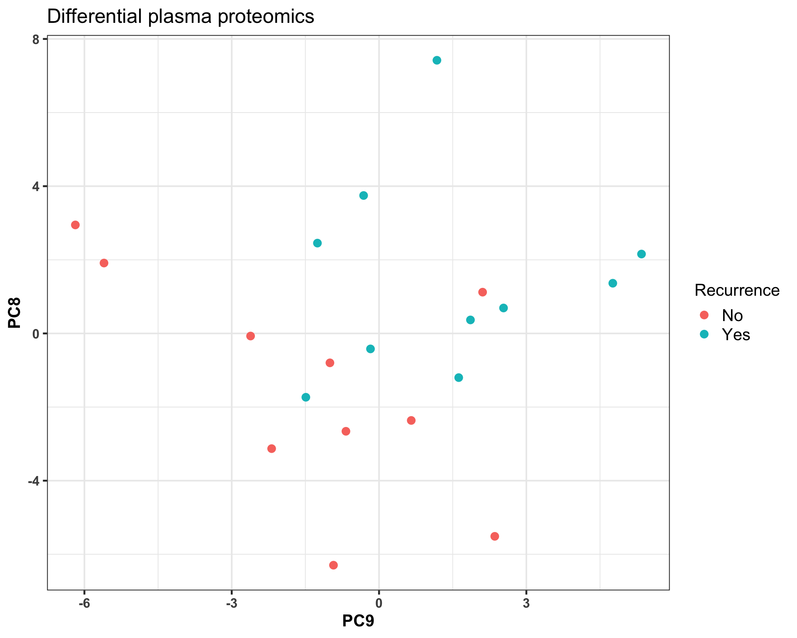
# PC9
ggplot(pcTab, aes(x=Recurrence, y=PC9, col=Recurrence, fill=Recurrence)) +
geom_boxplot(alpha = 0.5, outlier.shape = NA) +
geom_jitter(position = position_jitter(0.2), size = 2, show.legend = F) +
labs(title = 'Differential plasma proteomics') +
scale_color_manual(values=c('#00BFC4', '#F8766D')) +
scale_fill_manual(values=c('#00BFC4', '#F8766D')) +
ggpubr::stat_compare_means(method = 't.test', paired = F, size = 5,
method.args = list(var.equal = T),
show.legend = F) +
th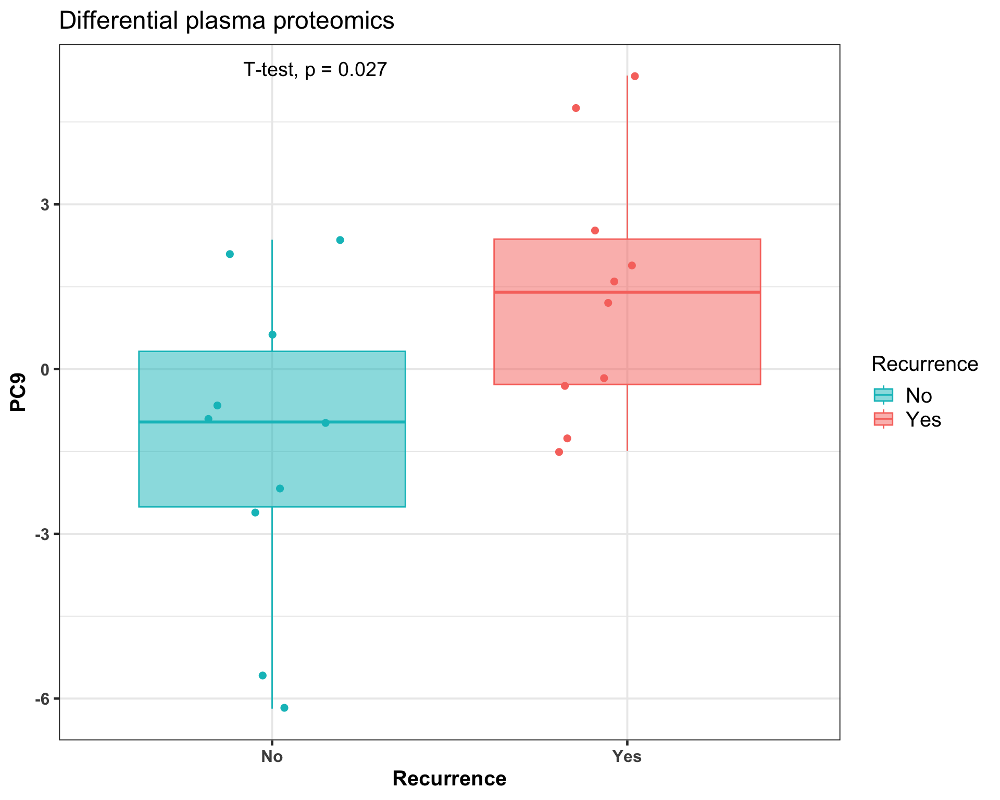
# Plot molecular signatures in input data
# Extract top features with highest loadings
topFeats <- pcTopFeatTab$PC9$Feature[1:10]
topFeatsIdx <- sapply(topFeats, function(feat) {which(rownames(datMat) == feat)})
# Change protein names to gene names
datMatSub <- datMat[topFeatsIdx, smpOrder]
rownames(datMatSub) <- plyr::mapvalues(rownames(datMatSub),
from = featInfo$PG.Groups,
to = featInfo$PG.Genes,
warn_missing = F)
pheatmap::pheatmap(datMatSub,
annotation_col = smpRecur,
color = colorRampPalette(c('navy', 'white', 'red'))(100),
cluster_rows = F, cluster_cols = F,
scale = 'row', main = 'Differential plasma proteomics - PC9')# Display top features with highest loadings of PC of interest
dplyr::mutate(pcTopFeatTab$PC9, Gene = plyr::mapvalues(Feature,
from = featInfo$PG.Groups,
to = featInfo$PG.Genes,
warn_missing = F)) Feature Loading Gene
1 P35908 0.24016506 KRT2
2 P81605 0.22664021 DCD
3 P13645 0.22158827 KRT10
4 P02788 0.21982816 LTF
5 P01763 0.20104564 IGHV3-48
6 P01824 0.17800833 IGHV4-39
7 P01817 0.16662124 IGHV2-5
8 P04439 0.16352295 HLA-A
9 P02533 0.16015975 KRT14
10 P13647 0.15667948 KRT5
11 Q08830 0.15604205 FGL1
12 Q13201 0.15387766 MMRN1
13 P40197 0.14856935 GP5
14 P61160 0.13434463 ACTR2
15 P02538 0.13236060 KRT6A
16 P35030 0.13002292 PRSS3
17 P06454 0.11491442 PTMA
18 P01718 0.11242929 IGLV3-27
19 Q15404 0.10317074 RSU1
20 P26641 0.10246731 EEF1G
21 P48668 0.10095937 KRT6C
22 P07910 0.10054399 HNRNPC
23 P35625 0.09973387 TIMP3
24 P27105 0.09970923 STOM
25 P12273 0.09946012 PIP
26 P01721 0.09280813 IGLV6-57
27 Q13103 0.09120523 SPP2
28 P68366 0.09050913 TUBA4A
29 P01772 0.08814778 IGHV3-33
30 A0A075B6K6 0.08548049 IGLV4-3# PC8
ggplot(pcTab, aes(x=Recurrence, y=PC8, col=Recurrence, fill=Recurrence)) +
geom_boxplot(alpha = 0.5, outlier.shape = NA) +
geom_jitter(position = position_jitter(0.2), size = 2, show.legend = F) +
labs(title = 'Differential plasma proteomics') +
scale_color_manual(values=c('#00BFC4', '#F8766D')) +
scale_fill_manual(values=c('#00BFC4', '#F8766D')) +
ggpubr::stat_compare_means(method = 't.test', paired = F, size = 5,
method.args = list(var.equal = T),
show.legend = F) +
th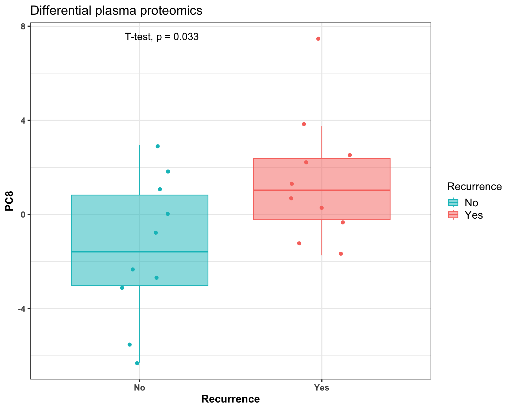
# Plot molecular signatures in input data
# Extract top features with highest loadings
topFeats <- pcTopFeatTab$PC8$Feature[1:10]
topFeatsIdx <- sapply(topFeats, function(feat) {which(rownames(datMat) == feat)})
# Change protein names to gene names
datMatSub <- datMat[topFeatsIdx, smpOrder]
rownames(datMatSub) <- plyr::mapvalues(rownames(datMatSub),
from = featInfo$PG.Groups,
to = featInfo$PG.Genes,
warn_missing = F)
pheatmap::pheatmap(datMatSub,
annotation_col = smpRecur,
color = colorRampPalette(c('navy', 'white', 'red'))(100),
cluster_rows = F, cluster_cols = F,
scale = 'row', main = 'Differential plasma proteomics - PC8')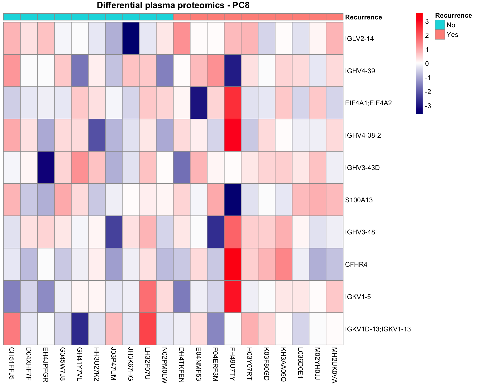
# Display top features with highest loadings of PC of interest
dplyr::mutate(pcTopFeatTab$PC8, Gene = plyr::mapvalues(Feature,
from = featInfo$PG.Groups,
to = featInfo$PG.Genes,
warn_missing = F)) Feature Loading Gene
1 P01704 0.25647495 IGLV2-14
2 P01824 0.22698206 IGHV4-39
3 P60842;Q14240 0.18354960 EIF4A1;EIF4A2
4 P0DP08 0.16586743 IGHV4-38-2
5 P0DP04 0.15494166 IGHV3-43D
6 Q99584 0.15376279 S100A13
7 P01763 0.14692742 IGHV3-48
8 Q92496 0.14027317 CFHR4
9 P01602 0.13397101 IGKV1-5
10 A0A0B4J2D9;P0DP09 0.12216541 IGKV1D-13;IGKV1-13
11 P61026 0.11963694 RAB10
12 P50552 0.11683960 VASP
13 P69905 0.11525317 HBA1
14 P08865 0.11424998 RPSA
15 Q15113 0.11186621 PCOLCE
16 P07910 0.10880331 HNRNPC
17 P15814 0.10565859 IGLL1
18 A0A075B6Q5 0.10499063 IGHV3-64
19 P68871 0.10350441 HBB
20 P01721 0.10048052 IGLV6-57
21 P13727 0.10035856 PRG2
22 P02776;P10720 0.09888781 PF4;PF4V1
23 A0A075B6S9;P0DSN7 0.09751784 IGKV1-37;IGKV1D-37
24 P01597;P04432 0.09694563 IGKV1-39;IGKV1D-39
25 A0A075B6K6 0.09668535 IGLV4-3
26 P40197 0.09175417 GP5
27 P27918 0.08938352 CFP
28 A0A0C4DH24 0.08930916 IGKV6-21
29 P43652 0.08376107 AFM
30 P02751 0.08227763 FN1Tissue Proteomics
As described in Tissue Metabolomics section, we analyzed Tumor and
Normal samples separately.
Note that each patient has two samples that have same patient annotations, so association test results may have additive effects.
# Load normalized data
proTissueNorm <- readRDS('./data/AG_Krijgsveld/proTissueNorm.rds')
# Prepare protein-gene table for changing protein names to gene names
featInfo <- tibble::as_tibble(rowData(proTissueNorm), rownames = 'PG.Groups')
# Manually modify metadata information (metastasis)
tmp_metadata <- as.data.frame(colData(proTissueNorm)) %>%
dplyr::mutate(
Metastasis = case_when(
Stage == 'IIB' ~ 'Yes',
Stage != 'IIB' ~ 'No'
))
colData(proTissueNorm)['Metastasis'] <- tmp_metadata$Metastasis
# Perform analysis
proTissueRes <- doSOA(proTissueNorm, meta_var = c('Recurrence', 'Gender', 'Age',
'Condition', 'Smoking', 'Stage',
'Metastasis'),
do_onlyPCA = T)
tPCASigRes <- proTissueRes$tPCASigRes
pcaRes <- proTissueRes$pcaRes
pcTab <- proTissueRes$pcTab
# Display PCs of interest
tPCASigRes Var1 Var2 pVal pValAdj Stat Test
1 PC1 Condition 2.521355e-18 7.059794e-16 -15.8378810 T-test
2 PC13 Age 3.912601e-03 4.563362e-01 -0.4460968 Correlation
3 PC18 Recurrence 4.889316e-03 4.563362e-01 2.9887732 T-test
4 PC5 Metastasis 1.738999e-02 7.043630e-01 2.4870044 T-test
5 PC24 Gender 2.221931e-02 7.043630e-01 -2.3840935 T-test
6 PC9 Age 2.365139e-02 7.043630e-01 -0.3572037 Correlation
7 PC38 Stage 2.404630e-02 7.043630e-01 4.1299000 ANOVA
8 PC19 Metastasis 2.532371e-02 7.043630e-01 2.3281896 T-test
9 PC40 Gender 2.795520e-02 7.043630e-01 -2.2854416 T-test
10 PC3 Age 2.893561e-02 7.043630e-01 0.3456161 Correlation
11 PC14 Recurrence 3.002505e-02 7.043630e-01 2.2542824 T-test
12 PC24 Recurrence 3.020625e-02 7.043630e-01 -2.2516469 T-test
13 PC12 Gender 3.380608e-02 7.043630e-01 -2.2020129 T-test
14 PC12 Recurrence 3.521815e-02 7.043630e-01 -2.1838208 T-test
15 PC33 Metastasis 4.336142e-02 8.094131e-01 2.0900113 T-test
16 PC5 Stage 4.686326e-02 8.201070e-01 3.3282351 ANOVAggplot(pcTab, aes(x=Condition, y=PC1, col=Condition, fill=Condition)) +
geom_boxplot(alpha = 0.5, outlier.shape = NA) +
geom_jitter(position = position_jitter(0.2), size = 2, show.legend = F) +
labs(title = 'Tissue proteomics') +
ggpubr::stat_compare_means(method = 't.test', paired = F, size = 5,
method.args = list(var.equal = T),
show.legend = F) +
th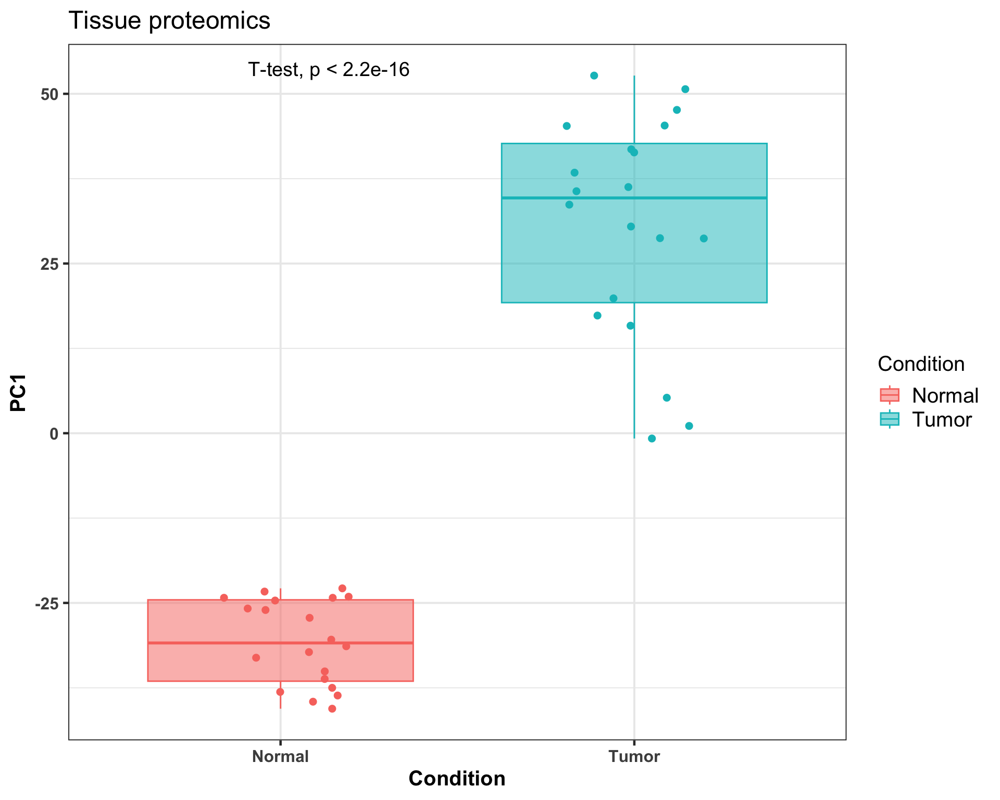
ggplot(pcTab, aes(x=Recurrence, y=PC18, col=Recurrence, fill=Recurrence)) +
geom_boxplot(alpha = 0.5, outlier.shape = NA) +
geom_jitter(position = position_jitter(0.2), size = 2, show.legend = F) +
labs(title = 'Tissue proteomics') +
scale_color_manual(values=c('#00BFC4', '#F8766D')) +
scale_fill_manual(values=c('#00BFC4', '#F8766D')) +
ggpubr::stat_compare_means(method = 't.test', paired = F, size = 5,
method.args = list(var.equal = T),
show.legend = F) +
th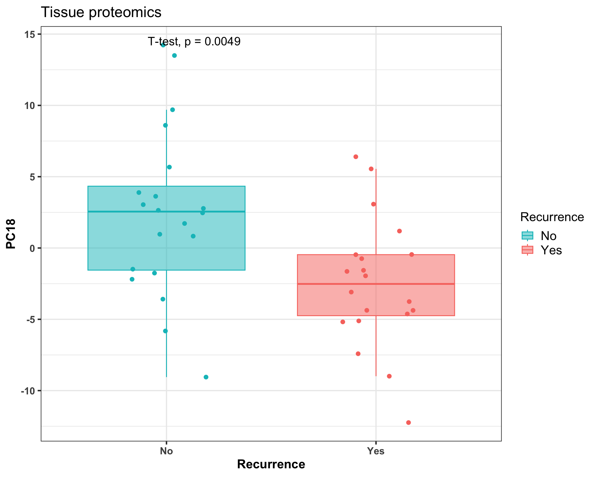
# Display proportion of total variance captured by all PCs explained by each PC
varExplained <- pcaRes$sdev^2 / sum(pcaRes$sdev^2)
PC <- paste0('PC', seq(length(varExplained)))
varTab <- data.frame(PC = factor(PC, levels = PC),
Var_explained = varExplained)
ggplot(varTab, aes(x=PC, y=Var_explained*100)) +
geom_col() +
labs(x = '', y = 'Variance explained (%)', title = 'Tissue proteomics') +
th + theme(axis.text.x = element_text(angle = 90, hjust = 1, vjust = 0.5))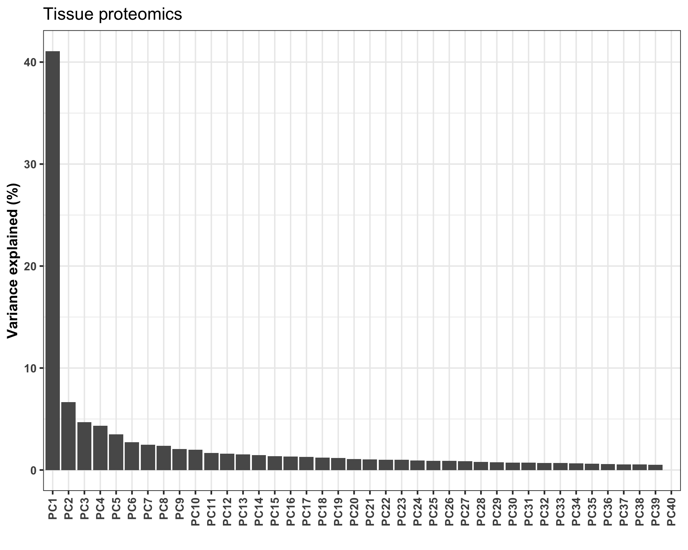
Tumor Samples
Display significant associations between learned PCs (Var1) and metadata variables (Var2)
# Subset tumor samples
smpTumorIdx <- which(colData(proTissueNorm)$Condition == 'Tumor')
proTumor <- proTissueNorm[, smpTumorIdx]
# Display significant associations between PCs and metadata variables
proTumorAssoRes <- doSOA(proTumor, meta_var = c('Recurrence', 'Gender', 'Age',
'Smoking', 'Stage', 'Metastasis'),
do_onlyPCA = T)
proTumorAssoRes$tPCASigRes Var1 Var2 pVal pValAdj Stat Test
1 PC3 Stage 0.006365924 0.5876039 6.9094866 ANOVA
2 PC20 Smoking 0.010510098 0.5876039 6.0268373 ANOVA
3 PC3 Metastasis 0.014841120 0.5876039 -2.6939486 T-test
4 PC7 Age 0.023522621 0.5876039 0.5038074 Correlation
5 PC6 Smoking 0.024483497 0.5876039 4.6511347 ANOVA
6 PC12 Gender 0.033276788 0.6655358 -2.3051877 T-test
7 PC12 Smoking 0.041949965 0.6775807 3.8438462 ANOVA
8 PC14 Recurrence 0.045172046 0.6775807 2.1525123 T-testDisplay significant associations between features (Var1) and cancer recurrence (Var2) and observe molecular signatures in input data through heatmap. Note that features in heatmap are ordered by their t-statistics.
# Perform analysis
proTumorRes <- doSOA(proTumor, meta_var = 'Recurrence', num_PCfeats = 30)
datMat <- proTumorRes$data
smpAnno <- proTumorRes$smpMetadata
tFeatSigRes <- proTumorRes$tFeatSigRes
tPCASigRes <- proTumorRes$tPCASigRes
pcaRes <- proTumorRes$pcaRes
pcTab <- proTumorRes$pcTab
pcTopFeatTab <- proTumorRes$pcTopFeatTab
# Display features that can significantly separate recurrence and non-recurrence
# patients
dplyr::mutate(tFeatSigRes, Gene = plyr::mapvalues(Var1,
from = featInfo$PG.Groups,
to = featInfo$PG.Genes,
warn_missing = F)) Var1 Var2 pVal pValAdj Stat Test Gene
1 Q8NFH3 Recurrence 0.0001293816 0.6718785 4.847169 T-test NUP43
2 O00330 Recurrence 0.0005330163 0.9987710 -4.204373 T-test PDHX
3 Q9Y3B7 Recurrence 0.0013371209 0.9987710 -3.791280 T-test MRPL11
4 Q5T653 Recurrence 0.0022247563 0.9987710 -3.562598 T-test MRPL2
5 O75150 Recurrence 0.0022801954 0.9987710 3.551526 T-test RNF40
6 P54687 Recurrence 0.0027803896 0.9987710 3.462214 T-test BCAT1
7 Q96I59 Recurrence 0.0030312931 0.9987710 -3.423248 T-test NARS2
8 Q12756 Recurrence 0.0041986280 0.9987710 3.275912 T-test KIF1A
9 Q96DE0 Recurrence 0.0043555965 0.9987710 3.259263 T-test NUDT16
10 O43660 Recurrence 0.0045133638 0.9987710 3.243113 T-test PLRG1
11 Q96GC5 Recurrence 0.0051919026 0.9987710 -3.179432 T-test MRPL48
12 P10515 Recurrence 0.0056507513 0.9987710 -3.140835 T-test DLAT
13 Q5TAQ9 Recurrence 0.0061374732 0.9987710 3.103106 T-test DCAF8
14 Q14202 Recurrence 0.0070727710 0.9987710 3.038156 T-test ZMYM3
15 Q9Y2W6 Recurrence 0.0077478641 0.9987710 2.996278 T-test TDRKH
16 P51970 Recurrence 0.0078819761 0.9987710 -2.988382 T-test NDUFA8
17 Q7KZ85 Recurrence 0.0085580388 0.9987710 2.950464 T-test SUPT6H
18 P62979 Recurrence 0.0089180456 0.9987710 2.931441 T-test RPS27A
19 Q8NFJ5 Recurrence 0.0091573774 0.9987710 -2.919201 T-test GPRC5A
20 Q96KP4 Recurrence 0.0097920284 0.9987710 2.888183 T-test CNDP2
21 Q9NX20 Recurrence 0.0099943726 0.9987710 -2.878702 T-test MRPL16
22 Q9P015 Recurrence 0.0106223425 0.9987710 -2.850411 T-test MRPL15
23 Q9Y512 Recurrence 0.0109811635 0.9987710 -2.834962 T-test SAMM50
24 Q9BZG1 Recurrence 0.0112944887 0.9987710 2.821863 T-test RAB34
25 P11233 Recurrence 0.0113017499 0.9987710 -2.821564 T-test RALA
26 O60716 Recurrence 0.0113865925 0.9987710 -2.818079 T-test CTNND1
27 Q9NYB0 Recurrence 0.0127022451 0.9987710 2.767020 T-test TERF2IP
28 Q9Y3B8 Recurrence 0.0127658169 0.9987710 -2.764683 T-test REXO2
29 P18669 Recurrence 0.0128631276 0.9987710 2.761128 T-test PGAM1
30 Q9BZK7 Recurrence 0.0131573546 0.9987710 2.750534 T-test TBL1XR1
31 Q9C0B1 Recurrence 0.0132605997 0.9987710 2.746870 T-test FTO
32 P51553 Recurrence 0.0133174304 0.9987710 -2.744864 T-test IDH3G
33 Q9UBM7 Recurrence 0.0135279645 0.9987710 -2.737507 T-test DHCR7
34 Q9NQH7 Recurrence 0.0140153696 0.9987710 -2.720886 T-test XPNPEP3
35 Q99460 Recurrence 0.0140597875 0.9987710 2.719399 T-test PSMD1
36 P43686 Recurrence 0.0140731132 0.9987710 2.718953 T-test PSMC4
37 Q8WWQ0 Recurrence 0.0143156386 0.9987710 2.710919 T-test PHIP
38 P22670 Recurrence 0.0143487100 0.9987710 2.709834 T-test RFX1
39 P62875 Recurrence 0.0149319118 0.9987710 2.691075 T-test POLR2L
40 Q9BXM0 Recurrence 0.0153458083 0.9987710 -2.678181 T-test PRX
41 Q9BYD6 Recurrence 0.0159338677 0.9987710 -2.660422 T-test MRPL1
42 P99999 Recurrence 0.0161675108 0.9987710 -2.653538 T-test CYCS
43 Q9Y5L4 Recurrence 0.0165132950 0.9987710 -2.643523 T-test TIMM13
44 P62072 Recurrence 0.0173696222 0.9987710 -2.619555 T-test TIMM10
45 Q14139 Recurrence 0.0173738449 0.9987710 -2.619440 T-test UBE4A
46 P10398 Recurrence 0.0175113963 0.9987710 -2.615696 T-test ARAF
47 Q86Y79 Recurrence 0.0175782208 0.9987710 -2.613887 T-test PTRH1
48 P09132 Recurrence 0.0176749035 0.9987710 -2.611281 T-test SRP19
49 Q16643 Recurrence 0.0182599925 0.9987710 2.595797 T-test DBN1
50 Q8WXI9 Recurrence 0.0183919497 0.9987710 2.592369 T-test GATAD2B
51 Q8N5M1 Recurrence 0.0187286954 0.9987710 -2.583728 T-test ATPAF2
52 Q5JVF3 Recurrence 0.0190096887 0.9987710 2.576629 T-test PCID2
53 Q8NBI5 Recurrence 0.0191443741 0.9987710 -2.573262 T-test SLC43A3
54 P50213 Recurrence 0.0191764643 0.9987710 -2.572463 T-test IDH3A
55 Q15785 Recurrence 0.0193351283 0.9987710 2.568531 T-test TOMM34
56 Q15334 Recurrence 0.0193828037 0.9987710 2.567355 T-test LLGL1
57 P20340 Recurrence 0.0194666871 0.9987710 -2.565294 T-test RAB6A
58 Q9UIS9 Recurrence 0.0197817107 0.9987710 2.557626 T-test MBD1
59 Q96SY0 Recurrence 0.0207961329 0.9987710 2.533695 T-test INTS14
60 P04075 Recurrence 0.0211914375 0.9987710 2.524667 T-test ALDOA
61 Q6P5R6 Recurrence 0.0220116210 0.9987710 2.506432 T-test RPL22L1
62 P15927 Recurrence 0.0223997426 0.9987710 2.498026 T-test RPA2
63 Q13769 Recurrence 0.0226686676 0.9987710 -2.492281 T-test THOC5
64 Q9HBR0 Recurrence 0.0226995675 0.9987710 -2.491625 T-test SLC38A10
65 Q9BYD3 Recurrence 0.0239545884 0.9987710 -2.465669 T-test MRPL4
66 P45985 Recurrence 0.0240044541 0.9987710 2.464664 T-test MAP2K4
67 Q96P70 Recurrence 0.0243206910 0.9987710 2.458338 T-test IPO9
68 O60216 Recurrence 0.0250020217 0.9987710 2.444966 T-test RAD21
69 Q8IXM3 Recurrence 0.0253389140 0.9987710 -2.438481 T-test MRPL41
70 P62195 Recurrence 0.0256238126 0.9987710 2.433059 T-test PSMC5
71 Q9HB71 Recurrence 0.0263308930 0.9987710 2.419842 T-test CACYBP
72 Q9BXV9 Recurrence 0.0263731778 0.9987710 -2.419063 T-test GON7
73 P27694 Recurrence 0.0268901868 0.9987710 2.409622 T-test RPA1
74 Q9H2W6 Recurrence 0.0268998814 0.9987710 -2.409447 T-test MRPL46
75 Q9UPY8 Recurrence 0.0275107946 0.9987710 2.398511 T-test MAPRE3
76 P61964 Recurrence 0.0277059940 0.9987710 2.395065 T-test WDR5
77 Q5JTJ3 Recurrence 0.0278658455 0.9987710 -2.392260 T-test COA6
78 Q13547 Recurrence 0.0282422816 0.9987710 2.385712 T-test HDAC1
79 Q9BZE1 Recurrence 0.0291390874 0.9987710 -2.370437 T-test MRPL37
80 Q9Y305 Recurrence 0.0292458057 0.9987710 -2.368649 T-test ACOT9
81 Q6P6C2 Recurrence 0.0293786485 0.9987710 2.366431 T-test ALKBH5
82 Q9NWS8 Recurrence 0.0293932670 0.9987710 -2.366187 T-test RMND1
83 Q92878 Recurrence 0.0296192503 0.9987710 -2.362438 T-test RAD50
84 O14561 Recurrence 0.0297166874 0.9987710 -2.360829 T-test NDUFAB1
85 A0A0C4DH31 Recurrence 0.0302209404 0.9987710 2.352583 T-test IGHV1-18
86 Q96S66 Recurrence 0.0303823259 0.9987710 -2.349970 T-test CLCC1
87 P49721 Recurrence 0.0304918296 0.9987710 2.348205 T-test PSMB2
88 Q8TE77 Recurrence 0.0308502361 0.9987710 -2.342469 T-test SSH3
89 P48382 Recurrence 0.0315396381 0.9987710 -2.331608 T-test RFX5
90 O60256 Recurrence 0.0316991070 0.9987710 2.329127 T-test PRPSAP2
91 P51809 Recurrence 0.0320442132 0.9987710 -2.323797 T-test VAMP7
92 Q9H6S3 Recurrence 0.0323006659 0.9987710 -2.319871 T-test EPS8L2
93 Q8IYB5 Recurrence 0.0325542275 0.9987710 -2.316018 T-test SMAP1
94 P25325 Recurrence 0.0328662558 0.9987710 -2.311314 T-test MPST
95 Q9NY33 Recurrence 0.0331326899 0.9987710 -2.307330 T-test DPP3
96 Q969X6 Recurrence 0.0331568693 0.9987710 2.306970 T-test UTP4
97 Q9UM44 Recurrence 0.0332992429 0.9987710 2.304855 T-test HHLA2
98 P13686 Recurrence 0.0334482959 0.9987710 -2.302649 T-test ACP5
99 O94842 Recurrence 0.0341453199 0.9987710 2.292455 T-test TOX4
100 P40937 Recurrence 0.0342147365 0.9987710 2.291450 T-test RFC5
101 Q8N7H5 Recurrence 0.0342956833 0.9987710 2.290281 T-test PAF1
102 O14980 Recurrence 0.0345346454 0.9987710 2.286844 T-test XPO1
103 Q14839 Recurrence 0.0347472931 0.9987710 2.283805 T-test CHD4
104 Q92604 Recurrence 0.0350463521 0.9987710 -2.279559 T-test LPGAT1
105 P82921 Recurrence 0.0354020383 0.9987710 -2.274552 T-test MRPS21
106 P09104 Recurrence 0.0356416828 0.9987710 2.271205 T-test ENO2
107 Q96KC8 Recurrence 0.0362749908 0.9987710 2.262460 T-test DNAJC1
108 P62140 Recurrence 0.0371459138 0.9987710 2.250660 T-test PPP1CB
109 O00443 Recurrence 0.0374023044 0.9987710 2.247235 T-test PIK3C2A
110 Q9NRX2 Recurrence 0.0374601627 0.9987710 -2.246465 T-test MRPL17
111 Q05639 Recurrence 0.0375597304 0.9987710 2.245143 T-test EEF1A2
112 Q71RC2 Recurrence 0.0376186395 0.9987710 -2.244362 T-test LARP4
113 Q9H3M7 Recurrence 0.0376501598 0.9987710 2.243944 T-test TXNIP
114 P47985 Recurrence 0.0381259082 0.9987710 -2.237684 T-test UQCRFS1
115 P48449 Recurrence 0.0381867908 0.9987710 -2.236888 T-test LSS
116 Q8TEM1 Recurrence 0.0383081512 0.9987710 2.235305 T-test NUP210
117 Q96DV4 Recurrence 0.0383621222 0.9987710 -2.234602 T-test MRPL38
118 Q7LG56 Recurrence 0.0388365310 0.9987710 -2.228466 T-test RRM2B
119 P60900 Recurrence 0.0390514616 0.9987710 2.225708 T-test PSMA6
120 Q8N1B4 Recurrence 0.0393855130 0.9987710 -2.221450 T-test VPS52
121 Q9HAV7 Recurrence 0.0395601467 0.9987710 -2.219237 T-test GRPEL1
122 O95747 Recurrence 0.0396370182 0.9987710 2.218266 T-test OXSR1
123 Q5VZK9 Recurrence 0.0396585008 0.9987710 -2.217995 T-test CARMIL1
124 P16455 Recurrence 0.0397402003 0.9987710 2.216965 T-test MGMT
125 O43772 Recurrence 0.0403793532 0.9987710 -2.208975 T-test SLC25A20
126 Q8NBN3 Recurrence 0.0405997937 0.9987710 -2.206246 T-test TMEM87A
127 Q8N1S5 Recurrence 0.0411085481 0.9987710 -2.200000 T-test SLC39A11
128 Q6IA69 Recurrence 0.0414389848 0.9987710 -2.195982 T-test NADSYN1
129 P40938 Recurrence 0.0417440831 0.9987710 2.192297 T-test RFC3
130 Q13200 Recurrence 0.0418026230 0.9987710 2.191593 T-test PSMD2
131 Q9H0U6 Recurrence 0.0420202082 0.9987710 -2.188983 T-test MRPL18
132 Q8N6R0 Recurrence 0.0422405648 0.9987710 2.186353 T-test EEF1AKNMT
133 Q96RE7 Recurrence 0.0427485023 0.9987710 2.180339 T-test NACC1
134 P35249 Recurrence 0.0431518200 0.9987710 2.175609 T-test RFC4
135 Q9BR76 Recurrence 0.0431656739 0.9987710 -2.175448 T-test CORO1B
136 Q96S44 Recurrence 0.0434465600 0.9987710 -2.172179 T-test TP53RK
137 Q05655 Recurrence 0.0434904138 0.9987710 2.171670 T-test PRKCD
138 Q92643 Recurrence 0.0440052952 0.9987710 2.165733 T-test PIGK
139 Q16576 Recurrence 0.0441451669 0.9987710 2.164132 T-test RBBP7
140 P78362 Recurrence 0.0446796818 0.9987710 2.158053 T-test SRPK2
141 P35244 Recurrence 0.0449631699 0.9987710 2.154856 T-test RPA3
142 P51531 Recurrence 0.0452560662 0.9987710 2.151572 T-test SMARCA2
143 Q9GZZ1 Recurrence 0.0454011468 0.9987710 2.149953 T-test NAA50
144 P07602 Recurrence 0.0455927887 0.9987710 -2.147821 T-test PSAP
145 P98179 Recurrence 0.0456908823 0.9987710 -2.146733 T-test RBM3
146 P42166 Recurrence 0.0462971092 0.9987710 2.140056 T-test TMPO
147 P35658 Recurrence 0.0465679127 0.9987710 2.137099 T-test NUP214
148 P61981 Recurrence 0.0466169660 0.9987710 2.136565 T-test YWHAG
149 Q13405 Recurrence 0.0475208105 0.9987710 -2.126817 T-test MRPL49
150 Q68CR1 Recurrence 0.0477090617 0.9987710 -2.124808 T-test SEL1L3
151 Q9NXA8 Recurrence 0.0480328969 0.9987710 2.121369 T-test SIRT5
152 P09874 Recurrence 0.0481872683 0.9987710 2.119737 T-test PARP1
153 O00186 Recurrence 0.0484507090 0.9987710 -2.116963 T-test STXBP3
154 Q07960 Recurrence 0.0485400016 0.9987710 -2.116026 T-test ARHGAP1
155 P25787 Recurrence 0.0487555308 0.9987710 2.113771 T-test PSMA2
156 Q8WUH2 Recurrence 0.0489180998 0.9987710 -2.112075 T-test TGFBRAP1
157 Q96A35 Recurrence 0.0491657344 0.9987710 -2.109503 T-test MRPL24
158 P67870 Recurrence 0.0492697436 0.9987710 2.108426 T-test CSNK2B
159 Q9ULK4 Recurrence 0.0493249980 0.9987710 2.107855 T-test MED23
160 Q14197 Recurrence 0.0493689623 0.9987710 -2.107400 T-test MRPL58
161 Q96A26 Recurrence 0.0496701556 0.9987710 2.104299 T-test FAM162A# Plot molecular signatures in input data
# Order features according to t-statistics
featOrder <- dplyr::arrange(tFeatSigRes, dplyr::desc(Stat))$Var1
# Arrange samples to make same groups in same clusters
smpOrder <- c(which(smpAnno$Recurrence == 'No'),
which(smpAnno$Recurrence == 'Yes'))
# Prepare recurrence table for annotating samples in heatmap
smpRecur <- dplyr::select(smpAnno, Sample, Recurrence) %>%
tibble::column_to_rownames('Sample')
# Change protein names to gene names
datMatSub <- datMat[featOrder, smpOrder]
rownames(datMatSub) <- plyr::mapvalues(rownames(datMatSub),
from = featInfo$PG.Groups,
to = featInfo$PG.Genes,
warn_missing = F)
pheatmap::pheatmap(datMatSub,
annotation_col = smpRecur,
color = colorRampPalette(c('navy', 'white', 'red'))(100),
cluster_rows = F, cluster_cols = F, show_rownames = F,
scale = 'row', main = 'Tumor Tissue proteomics')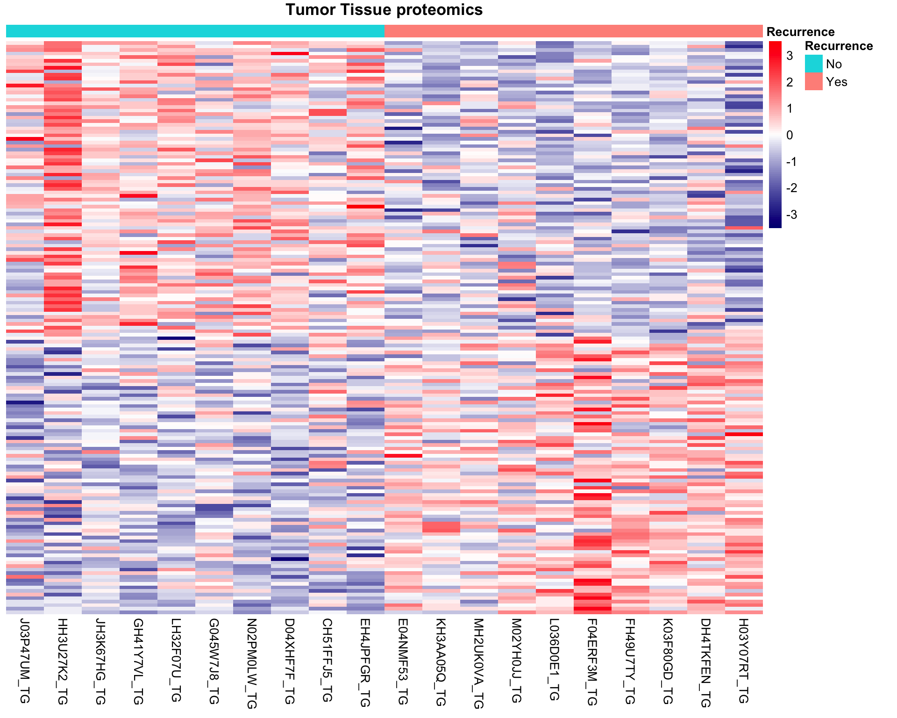
# Visualize data of top 6 significant features
topSigFeats <- tFeatSigRes$Var1[1:6]
topSigFeatData <- tibble::as_tibble(datMat[topSigFeats,], rownames = 'Feature') %>%
tidyr::pivot_longer(cols = -'Feature',
names_to = 'Sample', values_to = 'Abundance') %>%
dplyr::mutate(Feature = plyr::mapvalues(Feature,
from = featInfo$PG.Groups,
to = featInfo$PG.Genes,
warn_missing = F),
Feature = factor(Feature, levels = plyr::mapvalues(topSigFeats,
from = featInfo$PG.Groups,
to = featInfo$PG.Genes,
warn_missing = F))) %>%
dplyr::left_join(smpAnno, by = 'Sample')
ggplot(topSigFeatData, aes(x=Recurrence, y=Abundance, col=Recurrence, fill=Recurrence)) +
geom_boxplot(alpha = 0.3, outlier.shape = NA) +
geom_jitter(position = position_jitter(0.2), size = 2, show.legend = F) +
scale_color_manual(values=c('#00BFC4', '#F8766D')) +
scale_fill_manual(values=c('#00BFC4', '#F8766D')) +
facet_wrap(vars(Feature), scales = 'free_y') +
ggpubr::stat_compare_means(method = 't.test', paired = F,
method.args = list(var.equal = T),
show.legend = F, size = 4) +
th + theme(strip.text = element_text(size = 13, face = 'bold'))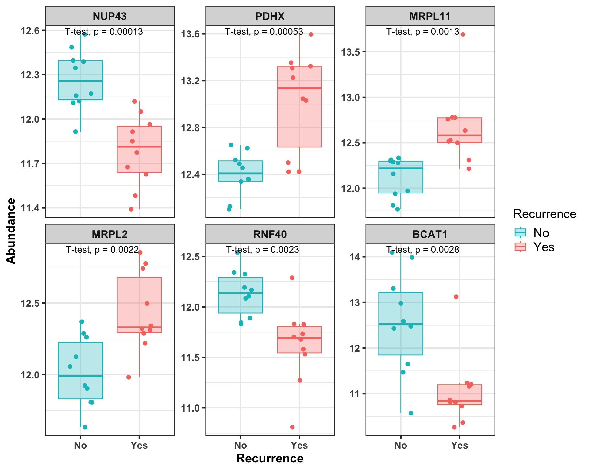
# ggsave('./output/AG_Krijgsveld/boxplot_topSigFeats_TTP.png', device = 'png', dpi = 400, height = 8, width = 10)Display significant associations between PCs (Var1) and cancer recurrence (Var2)
# Display PCs that can significantly separate recurrence and non-recurrence
# patients
tPCASigRes Var1 Var2 pVal pValAdj Stat Test
1 PC14 Recurrence 0.04517205 0.4302249 2.152512 T-test# Display proportion of total variance captured by all PCs explained by each PC
varExplained <- pcaRes$sdev^2 / sum(pcaRes$sdev^2)
PC <- paste0('PC', seq(length(varExplained)))
varTab <- data.frame(PC = factor(PC, levels = PC),
Var_explained = varExplained)
ggplot(varTab, aes(x=PC, y=Var_explained*100)) +
geom_col() +
labs(x = '', y = 'Variance explained (%)', title = 'Tumor tissue proteomics') +
th + theme(axis.text.x = element_text(angle = 90, hjust = 1, vjust = 0.5))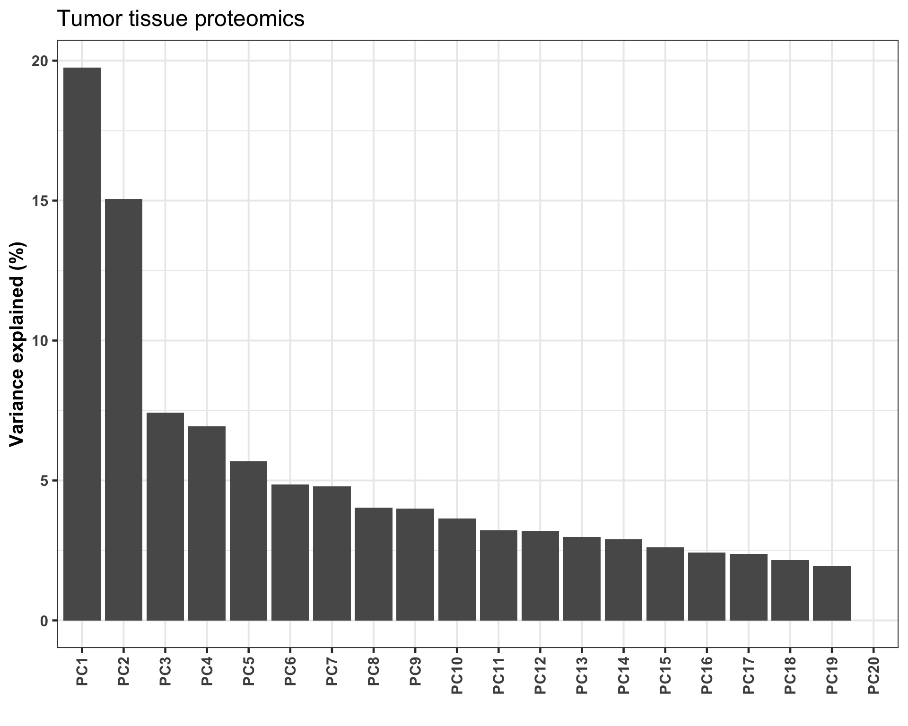
# Visualize PCs
ggplot(pcTab, aes(x=Recurrence, y=PC14, col=Recurrence, fill=Recurrence)) +
geom_boxplot(alpha = 0.5, outlier.shape = NA) +
geom_jitter(position = position_jitter(0.2), size = 2, show.legend = F) +
labs(title = 'Tumor tissue proteomics') +
scale_color_manual(values=c('#00BFC4', '#F8766D')) +
scale_fill_manual(values=c('#00BFC4', '#F8766D')) +
ggpubr::stat_compare_means(method = 't.test', paired = F, size = 5,
method.args = list(var.equal = T),
show.legend = F) +
th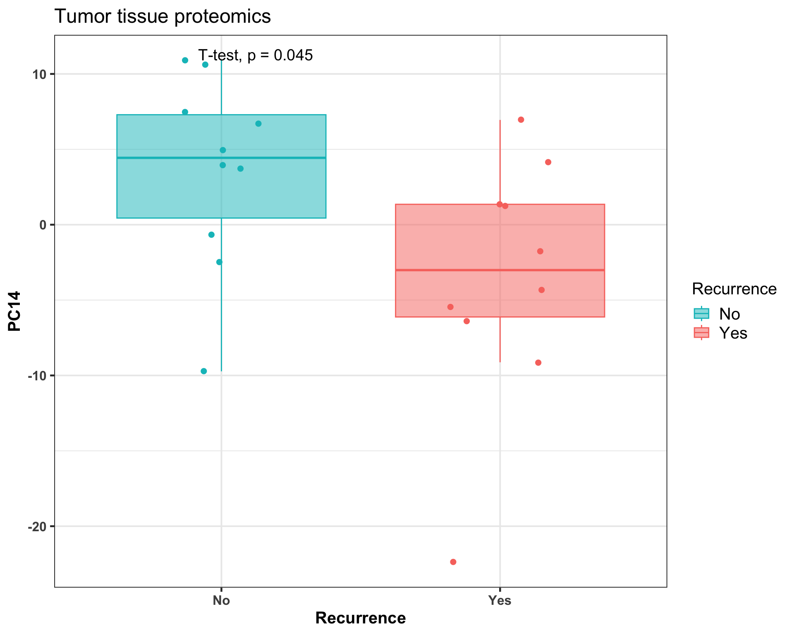
# Plot molecular signatures in input data
# Extract top features with highest loadings
topFeats <- pcTopFeatTab$PC14$Feature[1:30]
topFeatsIdx <- sapply(topFeats, function(feat) {which(rownames(datMat) == feat)})
# Change protein names to gene names
datMatSub <- datMat[topFeatsIdx, smpOrder]
rownames(datMatSub) <- plyr::mapvalues(rownames(datMatSub),
from = featInfo$PG.Groups,
to = featInfo$PG.Genes,
warn_missing = F)
pheatmap::pheatmap(datMatSub,
annotation_col = smpRecur,
color = colorRampPalette(c('navy', 'white', 'red'))(100),
cluster_rows = F, cluster_cols = F,
scale = 'row', main = 'Tumor tissue proteomics - PC14')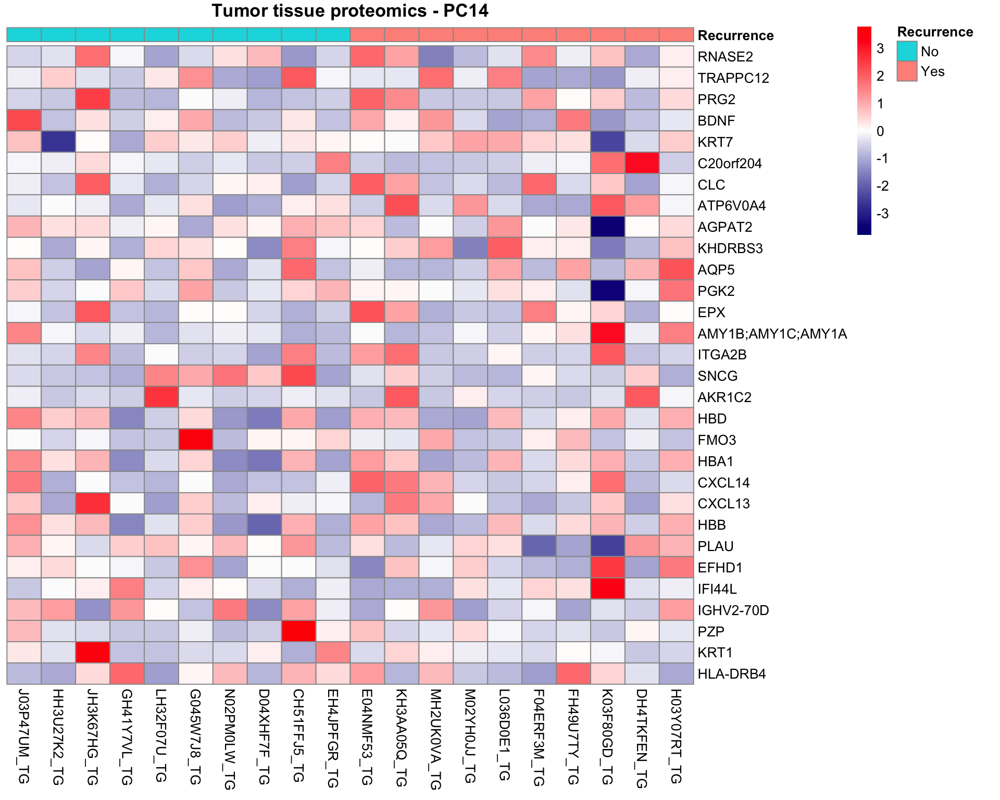
# Display top features with highest loadings of PC of interest
dplyr::mutate(pcTopFeatTab$PC14, Gene = plyr::mapvalues(Feature,
from = featInfo$PG.Groups,
to = featInfo$PG.Genes,
warn_missing = F)) Feature Loading Gene
1 P10153 0.09724346 RNASE2
2 Q8WVT3 0.08761372 TRAPPC12
3 P13727 0.08326646 PRG2
4 P23560 0.08279921 BDNF
5 P08729 0.07873893 KRT7
6 A0A1B0GTL2 0.07824092 C20orf204
7 Q05315 0.07812803 CLC
8 Q9HBG4 0.07126667 ATP6V0A4
9 O15120 0.06771819 AGPAT2
10 O75525 0.06680807 KHDRBS3
11 P55064 0.06643610 AQP5
12 P07205 0.06568554 PGK2
13 P11678 0.06416789 EPX
14 P0DTE7;P0DTE8;P0DUB6 0.06378442 AMY1B;AMY1C;AMY1A
15 P08514 0.06016151 ITGA2B
16 O76070 0.06000857 SNCG
17 P52895 0.05955731 AKR1C2
18 P02042 0.05943786 HBD
19 P31513 0.05846000 FMO3
20 P69905 0.05845646 HBA1
21 O95715 0.05710342 CXCL14
22 O43927 0.05683214 CXCL13
23 P68871 0.05618459 HBB
24 P00749 0.05548359 PLAU
25 Q9BUP0 0.05497376 EFHD1
26 Q53G44 0.05496474 IFI44L
27 A0A0C4DH43 0.05480041 IGHV2-70D
28 P20742 0.05313221 PZP
29 P04264 0.05278666 KRT1
30 P13762 0.05244748 HLA-DRB4Normal samples
Display significant associations between learned PCs (Var1) and metadata variables (Var2)
# Subset normal samples
smpNormalIdx <- which(colData(proTissueNorm)$Condition == 'Normal')
proNormal <- proTissueNorm[, smpNormalIdx]
# Display significant associations between PCs and metadata variables
proNormalAssoRes <- doSOA(proNormal, meta_var = c('Recurrence', 'Gender', 'Age',
'Smoking', 'Stage', 'Metastasis'),
do_onlyPCA = T)
proNormalAssoRes$tPCASigRes Var1 Var2 pVal pValAdj Stat Test
1 PC13 Metastasis 0.007196996 0.6843863 3.030166 T-test
2 PC7 Metastasis 0.011488543 0.6843863 -2.813925 T-test
3 PC13 Stage 0.024801557 0.6843863 4.631180 ANOVA
4 PC4 Recurrence 0.036507374 0.6843863 -2.259286 T-test
5 PC7 Stage 0.038248913 0.6843863 3.978708 ANOVA
6 PC15 Recurrence 0.049365496 0.6843863 -2.107436 T-testDisplay significant associations between features (Var1) and cancer recurrence (Var2) and observe molecular signatures in input data through heatmap. Note that features in heatmap are ordered by their t-statistics.
# Perform analysis
proNormalRes <- doSOA(proNormal, meta_var = 'Recurrence', num_PCfeats = 30)
datMat <- proNormalRes$data
smpAnno <- proNormalRes$smpMetadata
tFeatSigRes <- proNormalRes$tFeatSigRes
tPCASigRes <- proNormalRes$tPCASigRes
pcaRes <- proNormalRes$pcaRes
pcTab <- proNormalRes$pcTab
pcTopFeatTab <- proNormalRes$pcTopFeatTab
# Display features that can significantly separate recurrence and non-recurrence
# patients
dplyr::mutate(tFeatSigRes, Gene = plyr::mapvalues(Var1,
from = featInfo$PG.Groups,
to = featInfo$PG.Genes,
warn_missing = F)) %>%
dplyr::select(-Test) Var1 Var2 pVal pValAdj Stat Gene
1 Q9BTZ2 Recurrence 0.0008827485 0.9968386 -3.977623 DHRS4
2 Q9HC38 Recurrence 0.0024866051 0.9968386 3.512523 GLOD4
3 P29728 Recurrence 0.0050851484 0.9968386 -3.188890 OAS2
4 P07942 Recurrence 0.0056991082 0.9968386 3.136948 LAMB1
5 P17655 Recurrence 0.0063522149 0.9968386 3.087380 CAPN2
6 Q4KMP7 Recurrence 0.0066149709 0.9968386 3.068828 TBC1D10B
7 Q9NQT8 Recurrence 0.0067448966 0.9968386 3.059918 KIF13B
8 O95833 Recurrence 0.0068062720 0.9968386 3.055767 CLIC3
9 Q9UBB4 Recurrence 0.0068080558 0.9968386 3.055647 ATXN10
10 Q2TAY7 Recurrence 0.0077370120 0.9968386 -2.996923 SMU1
11 Q9UPT8 Recurrence 0.0081763909 0.9968386 -2.971496 ZC3H4
12 Q8NBF2 Recurrence 0.0086359126 0.9968386 2.946284 NHLRC2
13 P23258 Recurrence 0.0088532568 0.9968386 2.934809 TUBG1
14 Q14126 Recurrence 0.0092375083 0.9968386 2.915172 DSG2
15 Q8NBQ5 Recurrence 0.0093464238 0.9968386 -2.909750 HSD17B11
16 P54709 Recurrence 0.0098412983 0.9968386 2.885857 ATP1B3
17 Q9Y2E5 Recurrence 0.0104218447 0.9968386 2.859264 MAN2B2
18 Q9Y2W2 Recurrence 0.0107914208 0.9968386 2.843070 WBP11
19 P84095 Recurrence 0.0108346735 0.9968386 -2.841209 RHOG
20 P54289 Recurrence 0.0111969812 0.9968386 2.825902 CACNA2D1
21 P08567 Recurrence 0.0115109622 0.9968386 -2.813016 PLEK
22 Q8TB37 Recurrence 0.0115999960 0.9968386 -2.809424 NUBPL
23 P23469 Recurrence 0.0138773382 0.9968386 -2.725536 PTPRE
24 P98160 Recurrence 0.0139381164 0.9968386 2.723483 HSPG2
25 Q3SY69 Recurrence 0.0139831205 0.9968386 -2.721968 ALDH1L2
26 Q8IVG5 Recurrence 0.0140691811 0.9968386 -2.719085 SAMD9L
27 Q2TAA2 Recurrence 0.0142210258 0.9968386 2.714038 IAH1
28 P0C0L5 Recurrence 0.0142963817 0.9968386 2.711552 C4B
29 O95817 Recurrence 0.0152394787 0.9968386 2.681462 BAG3
30 O00204 Recurrence 0.0157859186 0.9968386 2.664830 SULT2B1
31 Q9BZF1 Recurrence 0.0163455859 0.9968386 -2.648355 OSBPL8
32 Q9UMY4 Recurrence 0.0165939363 0.9968386 2.641216 SNX12
33 O15164 Recurrence 0.0171807341 0.9968386 2.624744 TRIM24
34 Q9Y3B8 Recurrence 0.0173129037 0.9968386 2.621107 REXO2
35 Q9NPJ3 Recurrence 0.0176968217 0.9968386 -2.610692 ACOT13
36 O43660 Recurrence 0.0180020875 0.9968386 2.602563 PLRG1
37 P16422 Recurrence 0.0181600137 0.9968386 2.598409 EPCAM
38 P41214 Recurrence 0.0187324567 0.9968386 2.583632 EIF2D
39 Q6YP21 Recurrence 0.0187703643 0.9968386 2.582669 KYAT3
40 P52799 Recurrence 0.0188363088 0.9968386 2.580997 EFNB2
41 P00813 Recurrence 0.0198312784 0.9968386 2.556430 ADA
42 Q9BZL6 Recurrence 0.0203908120 0.9968386 2.543121 PRKD2
43 Q5J8M3 Recurrence 0.0204595020 0.9968386 -2.541511 EMC4
44 P08572 Recurrence 0.0204914052 0.9968386 2.540765 COL4A2
45 Q8TCJ2 Recurrence 0.0211734806 0.9968386 -2.525074 STT3B
46 P46108 Recurrence 0.0212732523 0.9968386 2.522819 CRK
47 Q9UNS2 Recurrence 0.0213738455 0.9968386 -2.520555 COPS3
48 O15305 Recurrence 0.0213827204 0.9968386 2.520356 PMM2
49 P27361 Recurrence 0.0215723428 0.9968386 2.516117 MAPK3
50 P23219 Recurrence 0.0216761533 0.9968386 -2.513812 PTGS1
51 Q7Z6K5 Recurrence 0.0221690154 0.9968386 2.503007 ARPIN
52 Q16363 Recurrence 0.0223708313 0.9968386 2.498647 LAMA4
53 Q8TCT9 Recurrence 0.0226067526 0.9968386 -2.493598 HM13
54 Q01650 Recurrence 0.0232664513 0.9968386 2.479738 SLC7A5
55 Q14185 Recurrence 0.0237535011 0.9968386 2.469740 DOCK1
56 O60486 Recurrence 0.0239154747 0.9968386 2.466458 PLXNC1
57 P20231;Q15661 Recurrence 0.0246320401 0.9968386 -2.452184 TPSB2;TPSAB1
58 O95379 Recurrence 0.0249366440 0.9968386 2.446235 TNFAIP8
59 P41208 Recurrence 0.0252402767 0.9968386 2.440371 CETN2
60 Q15276 Recurrence 0.0253366332 0.9968386 2.438524 RABEP1
61 P13498 Recurrence 0.0255163129 0.9968386 -2.435098 CYBA
62 Q13619 Recurrence 0.0263526858 0.9968386 2.419440 CUL4A
63 Q8WUW1 Recurrence 0.0266467667 0.9968386 -2.414046 BRK1
64 Q99615 Recurrence 0.0269960446 0.9968386 2.407710 DNAJC7
65 Q69YN2 Recurrence 0.0272475782 0.9968386 -2.403195 CWF19L1
66 O96013 Recurrence 0.0277777415 0.9968386 2.393804 PAK4
67 Q9H3M7 Recurrence 0.0279314411 0.9968386 2.391113 TXNIP
68 Q9UGP8 Recurrence 0.0281691132 0.9968386 -2.386979 SEC63
69 P21217;Q11128 Recurrence 0.0286219866 0.9968386 2.379190 FUT3;FUT5
70 Q15363 Recurrence 0.0287780532 0.9968386 -2.376533 TMED2
71 Q9UJX2 Recurrence 0.0289110651 0.9968386 2.374279 CDC23
72 O15381 Recurrence 0.0291657127 0.9968386 2.369990 NVL
73 A0A0J9YXX1 Recurrence 0.0293744420 0.9968386 -2.366501 IGHV5-10-1
74 Q9H330 Recurrence 0.0297266092 0.9968386 2.360666 TMEM245
75 Q06187 Recurrence 0.0299168324 0.9968386 -2.357541 BTK
76 Q9UHR4 Recurrence 0.0305341467 0.9968386 2.347525 BAIAP2L1
77 P02462 Recurrence 0.0310544649 0.9968386 2.339228 COL4A1
78 P13051 Recurrence 0.0315036960 0.9968386 2.332168 UNG
79 Q9UKU9 Recurrence 0.0318705351 0.9968386 2.326473 ANGPTL2
80 Q13751 Recurrence 0.0318932024 0.9968386 2.326123 LAMB3
81 Q8IY37 Recurrence 0.0319783655 0.9968386 2.324810 DHX37
82 P52735 Recurrence 0.0322409850 0.9968386 2.320782 VAV2
83 Q14746 Recurrence 0.0325308922 0.9968386 -2.316371 COG2
84 P22792 Recurrence 0.0327910303 0.9968386 2.312444 CPN2
85 Q9NZT2 Recurrence 0.0329530923 0.9968386 2.310012 OGFR
86 Q13303 Recurrence 0.0330344164 0.9968386 -2.308796 KCNAB2
87 Q8NDT2 Recurrence 0.0331543942 0.9968386 -2.307007 RBM15B
88 P20936 Recurrence 0.0337917673 0.9968386 2.297601 RASA1
89 Q8TE77 Recurrence 0.0340116586 0.9968386 2.294395 SSH3
90 Q07973 Recurrence 0.0342391199 0.9968386 -2.291098 CYP24A1
91 Q07955 Recurrence 0.0349156314 0.9968386 -2.281411 SRSF1
92 O43583 Recurrence 0.0352845686 0.9968386 2.276201 DENR
93 Q9NZ43 Recurrence 0.0355104484 0.9968386 -2.273036 USE1
94 Q5TFE4 Recurrence 0.0357778736 0.9968386 2.269313 NT5DC1
95 Q9H019 Recurrence 0.0359535596 0.9968386 2.266881 MTFR1L
96 Q9UK41 Recurrence 0.0363656921 0.9968386 2.261219 VPS28
97 P82675 Recurrence 0.0365011354 0.9968386 2.259371 MRPS5
98 Q05209 Recurrence 0.0367472799 0.9968386 2.256029 PTPN12
99 O43665 Recurrence 0.0370596270 0.9968386 -2.251817 RGS10
100 Q16787 Recurrence 0.0372209445 0.9968386 2.249655 LAMA3
101 Q9Y478 Recurrence 0.0376695979 0.9968386 2.243687 PRKAB1
102 Q9P2D3 Recurrence 0.0377548543 0.9968386 -2.242560 HEATR5B
103 Q14197 Recurrence 0.0378492397 0.9968386 -2.241316 MRPL58
104 O15127 Recurrence 0.0385066806 0.9968386 -2.232725 SCAMP2
105 O75563 Recurrence 0.0386340292 0.9968386 -2.231077 SKAP2
106 P07996 Recurrence 0.0387502672 0.9968386 -2.229576 THBS1
107 O95295 Recurrence 0.0393400310 0.9968386 -2.222028 SNAPIN
108 Q27J81 Recurrence 0.0400440557 0.9968386 2.213152 INF2
109 P50440 Recurrence 0.0405211427 0.9968386 2.207219 GATM
110 P0DJI8 Recurrence 0.0407613384 0.9968386 -2.204255 SAA1
111 Q7Z4W1 Recurrence 0.0407624352 0.9968386 -2.204242 DCXR
112 Q13753 Recurrence 0.0407862685 0.9968386 2.203949 LAMC2
113 P53007 Recurrence 0.0413724341 0.9968386 -2.196789 SLC25A1
114 P48730 Recurrence 0.0423713387 0.9968386 -2.184799 CSNK1D
115 Q9H223 Recurrence 0.0425542190 0.9968386 2.182632 EHD4
116 Q9UKV3 Recurrence 0.0431596442 0.9968386 -2.175518 ACIN1
117 P52789 Recurrence 0.0433109553 0.9968386 -2.173754 HK2
118 P13591 Recurrence 0.0433835855 0.9968386 -2.172910 NCAM1
119 O95260 Recurrence 0.0436841635 0.9968386 -2.169429 ATE1
120 Q9NVT9 Recurrence 0.0441152454 0.9968386 -2.164474 ARMC1
121 Q14005 Recurrence 0.0443995770 0.9968386 -2.161230 IL16
122 Q96IU4 Recurrence 0.0445194106 0.9968386 2.159869 ABHD14B
123 Q9NS86 Recurrence 0.0450919835 0.9968386 2.153410 LANCL2
124 Q92556 Recurrence 0.0457974030 0.9968386 -2.145554 ELMO1
125 P07437 Recurrence 0.0458496482 0.9968386 2.144977 TUBB
126 Q9BSH4 Recurrence 0.0459297539 0.9968386 -2.144093 TACO1
127 Q9UNF1 Recurrence 0.0460960877 0.9968386 2.142261 MAGED2
128 Q9BTE6 Recurrence 0.0466791969 0.9968386 2.135888 AARSD1
129 P53365 Recurrence 0.0467578244 0.9968386 2.135035 ARFIP2
130 Q9Y5Y2 Recurrence 0.0471979140 0.9968386 -2.130280 NUBP2
131 O43291 Recurrence 0.0494324630 0.9968386 2.106745 SPINT2
132 O95983 Recurrence 0.0494406118 0.9968386 -2.106661 MBD3# Plot molecular signatures in input data
# Order features according to t-statistics
featOrder <- dplyr::arrange(tFeatSigRes, dplyr::desc(Stat))$Var1
# Arrange samples to make same groups in same clusters
smpOrder <- c(which(smpAnno$Recurrence == 'No'),
which(smpAnno$Recurrence == 'Yes'))
# Prepare recurrence table for annotating samples in heatmap
smpRecur <- dplyr::select(smpAnno, Sample, Recurrence) %>%
tibble::column_to_rownames('Sample')
# Change protein names to gene names
datMatSub <- datMat[featOrder, smpOrder]
rownames(datMatSub) <- plyr::mapvalues(rownames(datMatSub),
from = featInfo$PG.Groups,
to = featInfo$PG.Genes,
warn_missing = F)
pheatmap::pheatmap(datMatSub,
annotation_col = smpRecur,
color = colorRampPalette(c('navy', 'white', 'red'))(100),
cluster_rows = F, cluster_cols = F, show_rownames = F,
scale = 'row', main = 'Normal tissue proteomics')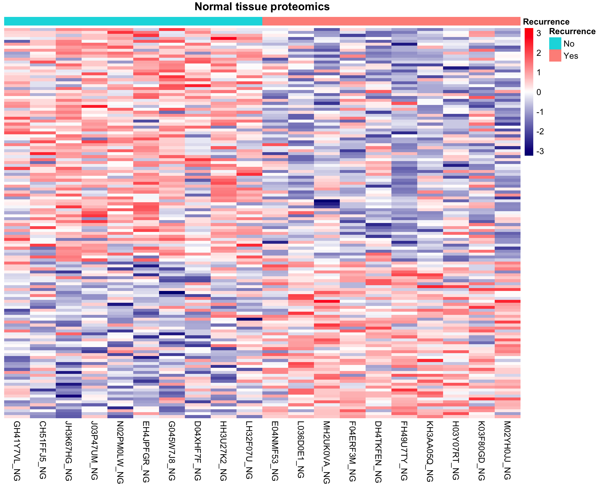
# Visualize data of top 6 significant features
topSigFeats <- tFeatSigRes$Var1[1:6]
topSigFeatData <- tibble::as_tibble(datMat[topSigFeats,], rownames = 'Feature') %>%
tidyr::pivot_longer(cols = -'Feature',
names_to = 'Sample', values_to = 'Abundance') %>%
dplyr::mutate(Feature = plyr::mapvalues(Feature,
from = featInfo$PG.Groups,
to = featInfo$PG.Genes,
warn_missing = F),
Feature = factor(Feature, levels = plyr::mapvalues(topSigFeats,
from = featInfo$PG.Groups,
to = featInfo$PG.Genes,
warn_missing = F))) %>%
dplyr::left_join(smpAnno, by = 'Sample')
ggplot(topSigFeatData, aes(x=Recurrence, y=Abundance, col=Recurrence, fill=Recurrence)) +
geom_boxplot(alpha = 0.5, outlier.shape = NA) +
geom_jitter(position = position_jitter(0.2), size = 2, show.legend = F) +
scale_color_manual(values=c('#00BFC4', '#F8766D')) +
scale_fill_manual(values=c('#00BFC4', '#F8766D')) +
facet_wrap(vars(Feature), scales = 'free') +
ggpubr::stat_compare_means(method = 't.test', paired = F,
method.args = list(var.equal = T),
show.legend = F) +
th + theme(strip.text = element_text(size = 13, face = 'bold'))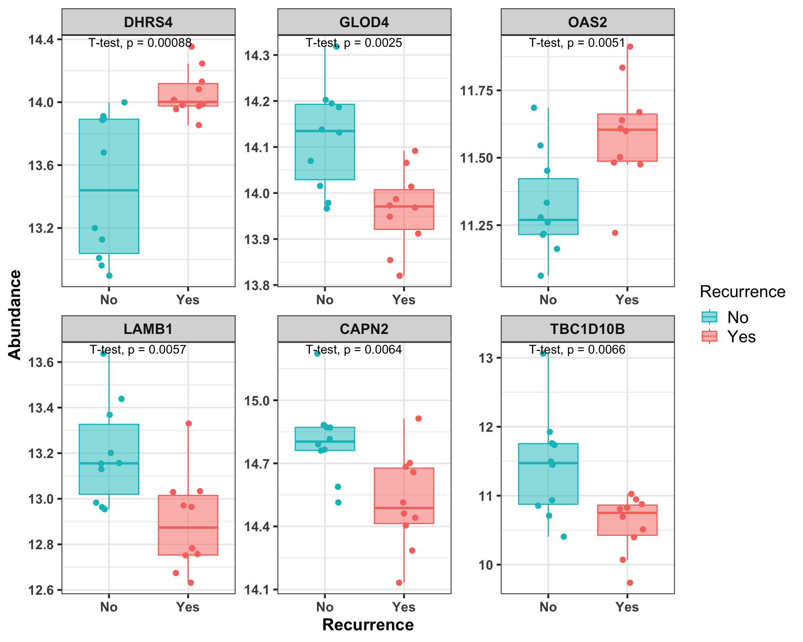
Display significant associations between PCs (Var1) and cancer recurrence (Var2)
# Display PCs that can significantly separate recurrence and non-recurrence
# patients
tPCASigRes Var1 Var2 pVal pValAdj Stat Test
1 PC4 Recurrence 0.03650737 0.3610804 -2.259286 T-test
2 PC15 Recurrence 0.04936550 0.3610804 -2.107436 T-test# Display proportion of total variance captured by all PCs explained by each PC
varExplained <- pcaRes$sdev^2 / sum(pcaRes$sdev^2)
PC <- paste0('PC', seq(length(varExplained)))
varTab <- data.frame(PC = factor(PC, levels = PC),
Var_explained = varExplained)
ggplot(varTab, aes(x=PC, y=Var_explained*100)) +
geom_col() +
labs(x = '', y = 'Variance explained (%)', title = 'Normal tissue proteomics') +
th + theme(axis.text.x = element_text(angle = 90, hjust = 1, vjust = 0.5))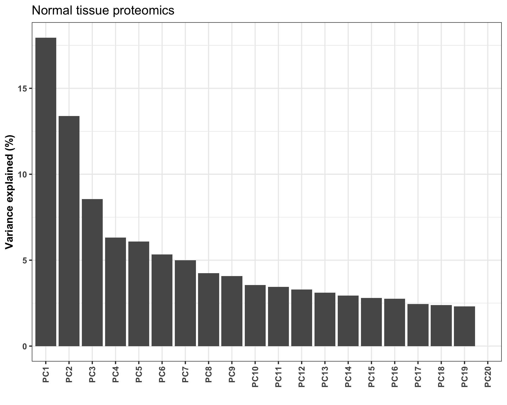
# PC4
# Visualize PCs
ggplot(pcTab, aes(x=Recurrence, y=PC4, col=Recurrence, fill=Recurrence)) +
geom_boxplot(alpha = 0.5, outlier.shape = NA) +
geom_jitter(position = position_jitter(0.2), size = 2, show.legend = F) +
labs(title = 'Normal tissue proteomics') +
scale_color_manual(values=c('#00BFC4', '#F8766D')) +
scale_fill_manual(values=c('#00BFC4', '#F8766D')) +
ggpubr::stat_compare_means(method = 't.test', paired = F, size = 5,
method.args = list(var.equal = T),
show.legend = F) +
th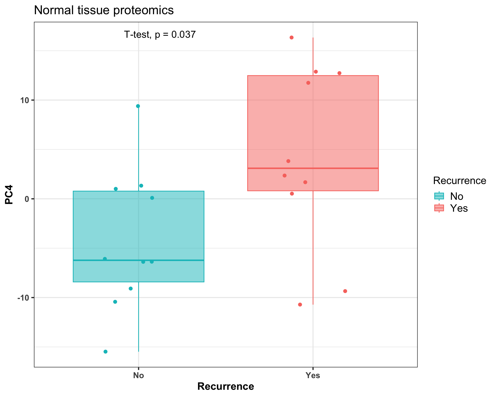
# Plot molecular signatures in input data
# Extract top features with highest loadings
topFeats <- pcTopFeatTab$PC4$Feature[1:30]
topFeatsIdx <- sapply(topFeats, function(feat) {which(rownames(datMat) == feat)})
# Change protein names to gene names
datMatSub <- datMat[topFeatsIdx, smpOrder]
rownames(datMatSub) <- plyr::mapvalues(rownames(datMatSub),
from = featInfo$PG.Groups,
to = featInfo$PG.Genes,
warn_missing = F)
pheatmap::pheatmap(datMatSub,
annotation_col = smpRecur,
color = colorRampPalette(c('navy', 'white', 'red'))(100),
cluster_rows = F, cluster_cols = F,
scale = 'row', main = 'Normal tissue proteomics - PC4')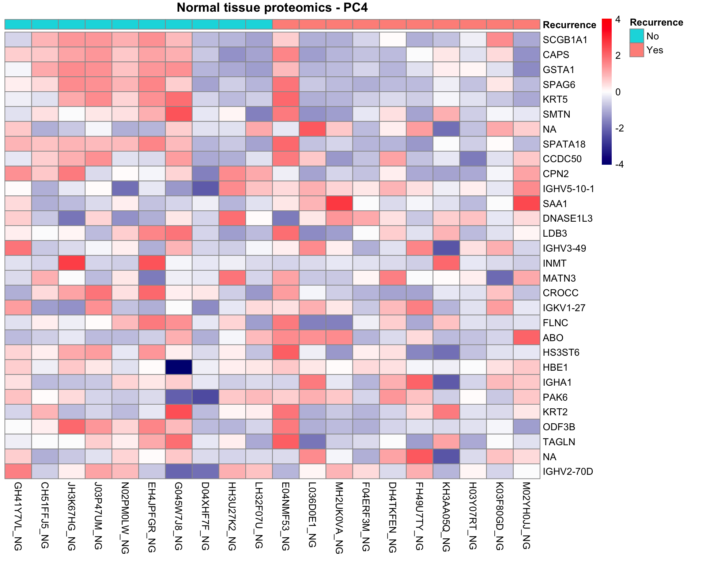
# Display top features with highest loadings of PC of interest
dplyr::mutate(pcTopFeatTab$PC4, Gene = plyr::mapvalues(Feature,
from = featInfo$PG.Groups,
to = featInfo$PG.Genes,
warn_missing = F)) Feature Loading Gene
1 P11684 0.13233479 SCGB1A1
2 Q13938 0.12239622 CAPS
3 P08263 0.10718630 GSTA1
4 O75602 0.09496052 SPAG6
5 P13647 0.08880350 KRT5
6 P53814 0.08653623 SMTN
7 P0DOX3 0.08254005 <NA>
8 Q8TC71 0.08202708 SPATA18
9 Q8IVM0 0.07788327 CCDC50
10 P22792 0.07780716 CPN2
11 A0A0J9YXX1 0.07720992 IGHV5-10-1
12 P0DJI8 0.07604096 SAA1
13 Q13609 0.07603794 DNASE1L3
14 O75112 0.07318900 LDB3
15 A0A0A0MS15 0.07099402 IGHV3-49
16 O95050 0.07050562 INMT
17 O15232 0.06731953 MATN3
18 Q5TZA2 0.06720104 CROCC
19 A0A075B6S5 0.06716921 IGKV1-27
20 Q14315 0.06659310 FLNC
21 P16442 0.06462080 ABO
22 Q96QI5 0.06305502 HS3ST6
23 P02100 0.06302400 HBE1
24 P01876 0.06296850 IGHA1
25 Q9NQU5 0.06290597 PAK6
26 P35908 0.06243532 KRT2
27 A8MYP8 0.06234938 ODF3B
28 Q01995 0.06198790 TAGLN
29 P0DOX2 0.06163643 <NA>
30 A0A0C4DH43 0.06140723 IGHV2-70D# PC15
# Visualize PCs
ggplot(pcTab, aes(x=Recurrence, y=PC15, col=Recurrence, fill=Recurrence)) +
geom_boxplot(alpha = 0.5, outlier.shape = NA) +
geom_jitter(position = position_jitter(0.2), size = 2, show.legend = F) +
labs(title = 'Normal tissue proteomics') +
scale_color_manual(values=c('#00BFC4', '#F8766D')) +
scale_fill_manual(values=c('#00BFC4', '#F8766D')) +
ggpubr::stat_compare_means(method = 't.test', paired = F, size = 5,
method.args = list(var.equal = T),
show.legend = F) +
th
# Plot molecular signatures in input data
# Extract top features with highest loadings
topFeats <- pcTopFeatTab$PC15$Feature[1:30]
topFeatsIdx <- sapply(topFeats, function(feat) {which(rownames(datMat) == feat)})
# Change protein names to gene names
datMatSub <- datMat[topFeatsIdx, smpOrder]
rownames(datMatSub) <- plyr::mapvalues(rownames(datMatSub),
from = featInfo$PG.Groups,
to = featInfo$PG.Genes,
warn_missing = F)
pheatmap::pheatmap(datMatSub,
annotation_col = smpRecur,
color = colorRampPalette(c('navy', 'white', 'red'))(100),
cluster_rows = F, cluster_cols = F,
scale = 'row', main = 'Normal tissue proteomics - PC15')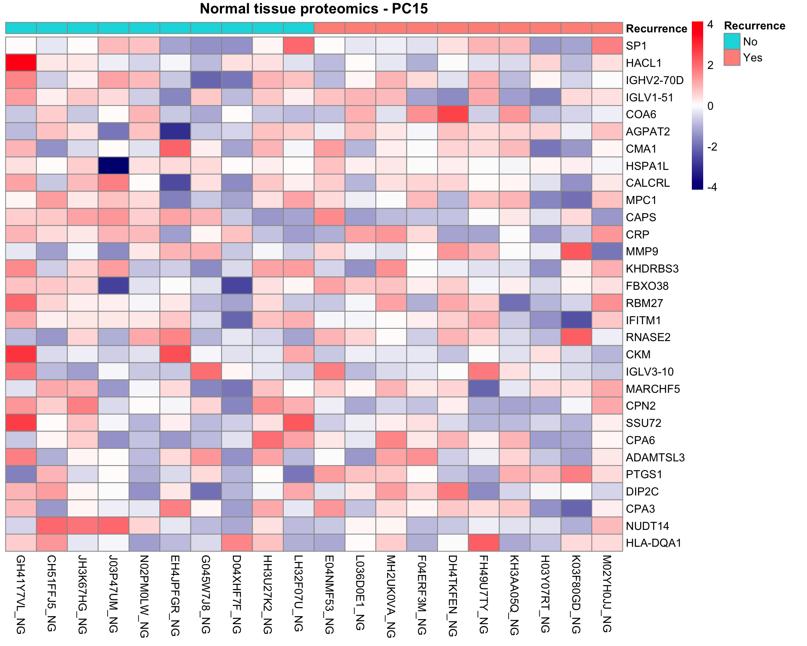
# Display top features with highest loadings of PC of interest
dplyr::mutate(pcTopFeatTab$PC15, Gene = plyr::mapvalues(Feature,
from = featInfo$PG.Groups,
to = featInfo$PG.Genes,
warn_missing = F)) Feature Loading Gene
1 P08047 0.11781901 SP1
2 Q9UJ83 0.11605292 HACL1
3 A0A0C4DH43 0.09996109 IGHV2-70D
4 P01701 0.09256788 IGLV1-51
5 Q5JTJ3 0.08882516 COA6
6 O15120 0.08263572 AGPAT2
7 P23946 0.08090850 CMA1
8 P34931 0.08026788 HSPA1L
9 Q16602 0.07993440 CALCRL
10 Q9Y5U8 0.07748260 MPC1
11 Q13938 0.07634917 CAPS
12 P02741 0.07352199 CRP
13 P14780 0.07193395 MMP9
14 O75525 0.06987063 KHDRBS3
15 Q6PIJ6 0.06820468 FBXO38
16 Q9P2N5 0.06783415 RBM27
17 P13164 0.06779685 IFITM1
18 P10153 0.06596136 RNASE2
19 P06732 0.06539609 CKM
20 A0A075B6K4 0.06421505 IGLV3-10
21 Q9NX47 0.06384574 MARCHF5
22 P22792 0.06270671 CPN2
23 Q9NP77 0.06141847 SSU72
24 Q8N4T0 0.06104694 CPA6
25 P82987 0.06088295 ADAMTSL3
26 P23219 0.06075763 PTGS1
27 Q9Y2E4 0.06047425 DIP2C
28 P15088 0.05964184 CPA3
29 O95848 0.05948378 NUDT14
30 P01909 0.05910240 HLA-DQA1Difference in tissue conditions
Tumor matrix - Normal matrix
Display significant associations between features (Var1) and cancer recurrence (Var2) and observe molecular signatures in input data through heatmap. Note that features in heatmap are ordered by their t-statistics.
# Subset Tumor samples
smpTumorIdx <- which(colData(proTissueNorm)$Condition == 'Tumor')
proTumor <- proTissueNorm[, smpTumorIdx]
# Subset Normal samples
smpNormalIdx <- which(colData(proTissueNorm)$Condition == 'Normal')
proNormal <- proTissueNorm[, smpNormalIdx]
# Modify sample names for matching two datasets
colnames(proTumor) <- stringr::str_remove(colnames(proTumor), '_TG')
colnames(proNormal) <- stringr::str_remove(colnames(proNormal), '_NG')
# Retrieve data matrix
proTumorMat <- SummarizedExperiment::assay(proTumor)
proNormalMat <- SummarizedExperiment::assay(proNormal)
# Subtract follow-up matrix by baseline matrix
# if (identical(colnames(proTumorMat), colnames(proNormalMat)) &
# identical(rownames(proTumorMat), rownames(proNormalMat))) {
# proDiffMat <- proTumorMat - proNormalMat
# } else {
# print('Align samples or features first.')
# }
#### Manually align samples ####
if (identical(sort(colnames(proTumorMat)), sort(colnames(proNormalMat)))) {
smpOrder <- sort(colnames(proTumorMat))
# For computing difference between Tumor and Normal samples
proTumorMat <- proTumorMat[, smpOrder]
proNormalMat <- proNormalMat[, smpOrder]
proDiffMat <- proTumorMat - proNormalMat
# For Creating SE object
proTumor <- proTumor[, smpOrder]
proNormal <- proNormal[, smpOrder]
}
# Retrieve samples metadata for creating SE object
colAnno <- dplyr::select(as.data.frame(colData(proTumor)), Patient, Recurrence)
rowAnno <- as.data.frame(rowData(proTumor))
proDiff <- SummarizedExperiment(assays = proDiffMat, colData = colAnno,
rowData = rowAnno)
# Perform analysis
proTissueDiffRes <- doSOA(proDiff, meta_var = 'Recurrence', num_PCfeats = 30)
datMat <- proTissueDiffRes$data
smpAnno <- proTissueDiffRes$smpMetadata
tFeatSigRes <- proTissueDiffRes$tFeatSigRes
tPCASigRes <- proTissueDiffRes$tPCASigRes
pcaRes <- proTissueDiffRes$pcaRes
# Display features that can significantly separate recurrence and non-recurrence
# patients
dplyr::mutate(tFeatSigRes, Gene = plyr::mapvalues(Var1,
from = featInfo$PG.Groups,
to = featInfo$PG.Genes,
warn_missing = F)) %>%
dplyr::select(-Test) Var1 Var2 pVal pValAdj Stat Gene
1 Q96DE0 Recurrence 0.0005749216 0.9964575 4.170311 NUDT16
2 Q9Y3B8 Recurrence 0.0027253883 0.9964575 -3.471219 REXO2
3 Q8TE77 Recurrence 0.0032217963 0.9964575 -3.395735 SSH3
4 P54687 Recurrence 0.0034965023 0.9964575 3.358763 BCAT1
5 O95260 Recurrence 0.0039828627 0.9964575 3.299823 ATE1
6 O60216 Recurrence 0.0049321187 0.9964575 3.202792 RAD21
7 Q9H6S3 Recurrence 0.0056722946 0.9964575 -3.139099 EPS8L2
8 Q8NDT2 Recurrence 0.0058682502 0.9964575 3.123598 RBM15B
9 P46108 Recurrence 0.0059083419 0.9964575 -3.120489 CRK
10 P82675 Recurrence 0.0060652298 0.9964575 -3.108518 MRPS5
11 P10515 Recurrence 0.0073932709 0.9964575 -3.017811 DLAT
12 Q969X6 Recurrence 0.0085509421 0.9964575 2.950847 UTP4
13 Q9Y4A5 Recurrence 0.0087572407 0.9964575 2.939844 TRRAP
14 O94842 Recurrence 0.0090720626 0.9964575 2.923528 TOX4
15 Q8NFJ5 Recurrence 0.0097431954 0.9964575 -2.890500 GPRC5A
16 Q2TAL8 Recurrence 0.0098495696 0.9964575 2.885468 QRICH1
17 Q12756 Recurrence 0.0118435814 0.9964575 2.799730 KIF1A
18 Q06187 Recurrence 0.0120958702 0.9964575 2.789889 BTK
19 Q9UNS2 Recurrence 0.0127318997 0.9964575 2.765929 COPS3
20 Q9H9A5 Recurrence 0.0127797544 0.9964575 2.764173 CNOT10
21 Q9BYD3 Recurrence 0.0134250322 0.9964575 -2.741090 MRPL4
22 P04075 Recurrence 0.0144621667 0.9964575 2.706128 ALDOA
23 Q92974 Recurrence 0.0146889246 0.9964575 2.698804 ARHGEF2
24 Q53F19 Recurrence 0.0150154366 0.9964575 2.688446 NCBP3
25 Q8WUH2 Recurrence 0.0151457687 0.9964575 -2.684371 TGFBRAP1
26 Q01650 Recurrence 0.0165260401 0.9964575 -2.643158 SLC7A5
27 Q16363 Recurrence 0.0177238906 0.9964575 -2.609966 LAMA4
28 Q96SY0 Recurrence 0.0185648326 0.9964575 2.587914 INTS14
29 Q96S55 Recurrence 0.0191681600 0.9964575 2.572670 WRNIP1
30 Q14247 Recurrence 0.0191921504 0.9964575 -2.572073 CTTN
31 P18669 Recurrence 0.0193318493 0.9964575 2.568612 PGAM1
32 Q14139 Recurrence 0.0198464374 0.9964575 -2.556064 UBE4A
33 Q9P0M6 Recurrence 0.0199332665 0.9964575 2.553978 MACROH2A2
34 P25787 Recurrence 0.0208596712 0.9964575 2.532233 PSMA2
35 Q07960 Recurrence 0.0210127785 0.9964575 -2.528727 ARHGAP1
36 Q8N983 Recurrence 0.0214351106 0.9964575 -2.519181 MRPL43
37 P54289 Recurrence 0.0220222764 0.9964575 -2.506200 CACNA2D1
38 Q9Y512 Recurrence 0.0223947914 0.9964575 -2.498132 SAMM50
39 Q9H0U6 Recurrence 0.0223962907 0.9964575 -2.498100 MRPL18
40 P53420 Recurrence 0.0236864461 0.9964575 -2.471105 COL4A4
41 P98179 Recurrence 0.0256930732 0.9964575 -2.431749 RBM3
42 Q8IVS2 Recurrence 0.0259238748 0.9964575 -2.427409 MCAT
43 Q05639 Recurrence 0.0260107145 0.9964575 2.425785 EEF1A2
44 Q96A35 Recurrence 0.0262563837 0.9964575 -2.421219 MRPL24
45 Q12972 Recurrence 0.0262919288 0.9964575 2.420562 PPP1R8
46 Q9C0C2 Recurrence 0.0268711961 0.9964575 -2.409966 TNKS1BP1
47 P20340 Recurrence 0.0270038491 0.9964575 -2.407569 RAB6A
48 Q9UPT8 Recurrence 0.0271146453 0.9964575 2.405576 ZC3H4
49 O60716 Recurrence 0.0278402636 0.9964575 -2.392708 CTNND1
50 Q05655 Recurrence 0.0284796478 0.9964575 2.381626 PRKCD
51 Q8TCJ2 Recurrence 0.0290074343 0.9964575 2.372652 STT3B
52 P09104 Recurrence 0.0294570329 0.9964575 2.365127 ENO2
53 P61964 Recurrence 0.0300819656 0.9964575 2.354843 WDR5
54 Q14839 Recurrence 0.0307289301 0.9964575 2.344404 CHD4
55 Q9UJX2 Recurrence 0.0308081081 0.9964575 -2.343140 CDC23
56 O60256 Recurrence 0.0308620026 0.9964575 2.342282 PRPSAP2
57 P62195 Recurrence 0.0313501956 0.9964575 2.334570 PSMC5
58 P25325 Recurrence 0.0313761590 0.9964575 -2.334163 MPST
59 Q6P5R6 Recurrence 0.0316469173 0.9964575 2.329937 RPL22L1
60 Q9BUI4 Recurrence 0.0316606622 0.9964575 2.329724 POLR3C
61 O00505 Recurrence 0.0318408747 0.9964575 -2.326931 KPNA3
62 A8MYP8 Recurrence 0.0326226570 0.9964575 -2.314983 ODF3B
63 E9PRG8 Recurrence 0.0328733780 0.9964575 -2.311207 C11orf98
64 Q9Y305 Recurrence 0.0330837871 0.9964575 -2.308059 ACOT9
65 Q8TC71 Recurrence 0.0334728898 0.9964575 -2.302286 SPATA18
66 Q2TAY7 Recurrence 0.0335117371 0.9964575 2.301713 SMU1
67 Q6NXG1 Recurrence 0.0336272222 0.9964575 -2.300014 ESRP1
68 Q7Z6K5 Recurrence 0.0340275237 0.9964575 -2.294164 ARPIN
69 P30533 Recurrence 0.0341212921 0.9964575 -2.292803 LRPAP1
70 Q9H0L4 Recurrence 0.0343581808 0.9964575 2.289380 CSTF2T
71 O95983 Recurrence 0.0348016114 0.9964575 2.283031 MBD3
72 P61019 Recurrence 0.0352534268 0.9964575 -2.276638 RAB2A
73 Q5TAQ9 Recurrence 0.0353883010 0.9964575 2.274745 DCAF8
74 Q9NS86 Recurrence 0.0356006848 0.9964575 -2.271776 LANCL2
75 O60486 Recurrence 0.0356916565 0.9964575 -2.270510 PLXNC1
76 Q96MM6 Recurrence 0.0363622207 0.9964575 -2.261266 HSPA12B
77 Q4KMP7 Recurrence 0.0364774583 0.9964575 -2.259693 TBC1D10B
78 Q9BY44 Recurrence 0.0371255403 0.9964575 2.250933 EIF2A
79 P22670 Recurrence 0.0375209499 0.9964575 2.245657 RFX1
80 P30626 Recurrence 0.0384823559 0.9964575 -2.233041 SRI
81 Q96GC5 Recurrence 0.0386691945 0.9964575 -2.230622 MRPL48
82 O60885 Recurrence 0.0391683722 0.9964575 2.224214 BRD4
83 Q96I59 Recurrence 0.0398252449 0.9964575 -2.215895 NARS2
84 Q9Y3B7 Recurrence 0.0401369919 0.9964575 -2.211991 MRPL11
85 Q96DG6 Recurrence 0.0402100808 0.9964575 -2.211080 CMBL
86 P31350 Recurrence 0.0405664611 0.9964575 2.206658 RRM2
87 O15160 Recurrence 0.0409850287 0.9964575 -2.201510 POLR1C
88 Q8NBI5 Recurrence 0.0410613099 0.9964575 -2.200577 SLC43A3
89 Q9UK41 Recurrence 0.0414860894 0.9964575 -2.195411 VPS28
90 Q13247 Recurrence 0.0423686134 0.9964575 2.184831 SRSF6
91 Q16643 Recurrence 0.0427918840 0.9964575 2.179828 DBN1
92 Q9NZQ3 Recurrence 0.0429066683 0.9964575 2.178479 NCKIPSD
93 O75602 Recurrence 0.0433543800 0.9964575 -2.173249 SPAG6
94 Q8N4Q0 Recurrence 0.0439942558 0.9964575 2.165860 ZADH2
95 Q7KZN9 Recurrence 0.0449567370 0.9964575 2.154928 COX15
96 Q92688 Recurrence 0.0457064532 0.9964575 2.146561 ANP32B
97 P51531 Recurrence 0.0458790083 0.9964575 2.144652 SMARCA2
98 Q86Y79 Recurrence 0.0462523510 0.9964575 -2.140546 PTRH1
99 P11172 Recurrence 0.0462610301 0.9964575 2.140451 UMPS
100 O15305 Recurrence 0.0462665487 0.9964575 -2.140391 PMM2
101 P09874 Recurrence 0.0464309191 0.9964575 2.138593 PARP1
102 Q5VZK9 Recurrence 0.0466403887 0.9964575 -2.136310 CARMIL1
103 Q9P013 Recurrence 0.0468812591 0.9964575 -2.133697 CWC15
104 Q69YL0 Recurrence 0.0469525752 0.9964575 -2.132926 NCBP2AS2
105 Q15109 Recurrence 0.0472472308 0.9964575 -2.129750 AGER
106 P41208 Recurrence 0.0474513250 0.9964575 -2.127561 CETN2
107 Q99460 Recurrence 0.0477198764 0.9964575 2.124693 PSMD1
108 O15120 Recurrence 0.0478157981 0.9964575 2.123673 AGPAT2
109 Q14202 Recurrence 0.0478605903 0.9964575 2.123197 ZMYM3
110 P29373 Recurrence 0.0478849379 0.9964575 2.122938 CRABP2
111 Q16576 Recurrence 0.0479036717 0.9964575 2.122739 RBBP7
112 Q92530 Recurrence 0.0480562504 0.9964575 -2.121122 PSMF1
113 P78347 Recurrence 0.0485484683 0.9964575 2.115938 GTF2I
114 Q12974;Q93096 Recurrence 0.0490058231 0.9964575 -2.111163 PTP4A2;PTP4A1
115 Q12965 Recurrence 0.0491431358 0.9964575 -2.109737 MYO1E
116 Q9P2D3 Recurrence 0.0493254240 0.9964575 2.107850 HEATR5B
117 P23921 Recurrence 0.0493503403 0.9964575 2.107593 RRM1
118 Q9C0B1 Recurrence 0.0499582671 0.9964575 2.101348 FTO# Plot molecular signatures in input data
# Order features according to t-statistics
featOrder <- dplyr::arrange(tFeatSigRes, dplyr::desc(Stat))$Var1
# Arrange samples to make same groups in same clusters
smpOrder <- c(which(smpAnno$Recurrence == 'No'),
which(smpAnno$Recurrence == 'Yes'))
# Prepare recurrence table for annotating samples in heatmap
smpRecur <- dplyr::select(smpAnno, Sample, Recurrence) %>%
tibble::column_to_rownames('Sample')
# Change protein names to gene names
datMatSub <- datMat[featOrder, smpOrder]
rownames(datMatSub) <- plyr::mapvalues(rownames(datMatSub),
from = featInfo$PG.Groups,
to = featInfo$PG.Genes,
warn_missing = F)
pheatmap::pheatmap(datMatSub,
annotation_col = smpRecur,
color = colorRampPalette(c('navy', 'white', 'red'))(100),
cluster_rows = F, cluster_cols = F, show_rownames = F,
scale = 'row', main = 'Differential plasma proteomics')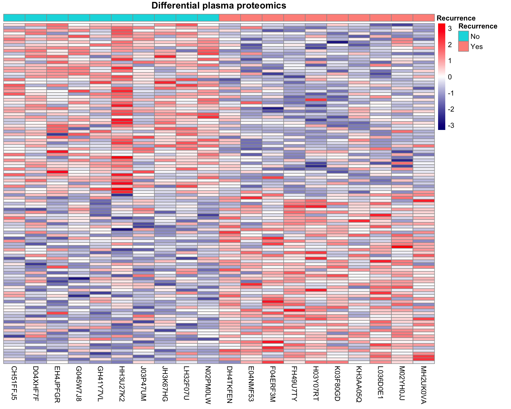
Display significant associations between PCs (Var1) and cancer recurrence (Var2)
# Display PCs that can significantly separate recurrence and non-recurrence
# patients
tPCASigRes[1] Var1 Var2 pVal pValAdj Stat Test
<0 rows> (or 0-length row.names)Summary
sessionInfo()R version 4.3.0 (2023-04-21)
Platform: aarch64-apple-darwin20 (64-bit)
Running under: macOS Ventura 13.4
Matrix products: default
BLAS: /Library/Frameworks/R.framework/Versions/4.3-arm64/Resources/lib/libRblas.0.dylib
LAPACK: /Library/Frameworks/R.framework/Versions/4.3-arm64/Resources/lib/libRlapack.dylib; LAPACK version 3.11.0
locale:
[1] en_US.UTF-8/en_US.UTF-8/en_US.UTF-8/C/en_US.UTF-8/en_US.UTF-8
time zone: Europe/Berlin
tzcode source: internal
attached base packages:
[1] stats4 stats graphics grDevices utils datasets methods
[8] base
other attached packages:
[1] lubridate_1.9.2 forcats_1.0.0
[3] stringr_1.5.0 dplyr_1.1.2
[5] purrr_1.0.1 readr_2.1.4
[7] tidyr_1.3.0 tibble_3.2.1
[9] tidyverse_2.0.0 umap_0.2.10.0
[11] ggfortify_0.4.16 ggrepel_0.9.3
[13] ggplot2_3.4.2 SummarizedExperiment_1.30.1
[15] Biobase_2.60.0 GenomicRanges_1.52.0
[17] GenomeInfoDb_1.36.0 IRanges_2.34.0
[19] S4Vectors_0.38.1 BiocGenerics_0.45.3
[21] MatrixGenerics_1.12.0 matrixStats_1.0.0
loaded via a namespace (and not attached):
[1] tidyselect_1.2.0 farver_2.1.1 bitops_1.0-7
[4] fastmap_1.1.1 RCurl_1.98-1.12 promises_1.2.0.1
[7] digest_0.6.31 timechange_0.2.0 lifecycle_1.0.3
[10] magrittr_2.0.3 compiler_4.3.0 rlang_1.1.1
[13] sass_0.4.6 tools_4.3.0 utf8_1.2.3
[16] yaml_2.3.7 ggsignif_0.6.4 knitr_1.43
[19] askpass_1.1 S4Arrays_1.0.4 labeling_0.4.2
[22] reticulate_1.28 DelayedArray_0.26.3 plyr_1.8.8
[25] RColorBrewer_1.1-3 abind_1.4-5 workflowr_1.7.0
[28] withr_2.5.0 grid_4.3.0 fansi_1.0.4
[31] ggpubr_0.6.0 git2r_0.32.0 colorspace_2.1-0
[34] scales_1.2.1 cli_3.6.1 rmarkdown_2.22
[37] crayon_1.5.2 generics_0.1.3 rstudioapi_0.14
[40] RSpectra_0.16-1 tzdb_0.4.0 cachem_1.0.8
[43] zlibbioc_1.46.0 XVector_0.40.0 vctrs_0.6.2
[46] Matrix_1.5-4.1 carData_3.0-5 jsonlite_1.8.4
[49] car_3.1-2 hms_1.1.3 rstatix_0.7.2
[52] jquerylib_0.1.4 glue_1.6.2 stringi_1.7.12
[55] gtable_0.3.3 later_1.3.1 munsell_0.5.0
[58] pillar_1.9.0 htmltools_0.5.5 openssl_2.0.6
[61] GenomeInfoDbData_1.2.10 R6_2.5.1 rprojroot_2.0.3
[64] evaluate_0.21 lattice_0.21-8 highr_0.10
[67] backports_1.4.1 png_0.1-8 pheatmap_1.0.12
[70] broom_1.0.4 httpuv_1.6.11 bslib_0.4.2
[73] Rcpp_1.0.10 gridExtra_2.3 whisker_0.4.1
[76] xfun_0.39 fs_1.6.2 pkgconfig_2.0.3